DRAFT — UE26CY151A · Unit_04 — Functional materials and green chemistry · Complete Unit Master
·How to use this pack
Search this single unit master by lesson, timestamp, slide text or source page. Read the transcript in timestamp order, then compare extracted slide text with its page-faithful source figure. Formula candidates and archive question mappings are explicitly flagged for review. Topics include the applicable parts: overview, key terms, formulas, figures, flowcharts, important points, worked examples, past-paper questions and a recap. IDs are shared with the separate documents: E = formula, G = graph, F = flowchart, W = worked example. Each ID is numbered by topic, so E4.2 is the second formula of topic 4.
1UE26CY151A · Unit_04: Functional materials and green chemistry
This unit master organizes source material for Engineering Chemistry, Unit_04, officially titled Functional materials and green chemistry. It includes 12 video transcripts and 12 source slide decks, with page-level text and rendered images where available. This draft preserves source wording and page order; it does not claim a complete human subject review or full audiovisual review. EV0000001
2Nanomaterials: Introduction, classification, size-dependent properties: surface area (adsorption), surface energy (reactivity), optical properties -blue shift (Part 2)
This lesson is indexed from the source video titled Nanomaterials: Introduction, classification, size-dependent properties: surface area (adsorption), surface energy (reactivity), optical properties -blue shift (Part 2). Its complete timestamped transcript is preserved below in segment order. The original video path and content hash are recorded in datasets/lecture-corpus.json. Transcript text is source wording; it has not been silently corrected or rewritten. A candidate slide deck is grouped here according to the current matching score; the exact path and page locators are listed in the source evidence. EV0000002 · EV0000003
Graphs and diagrams
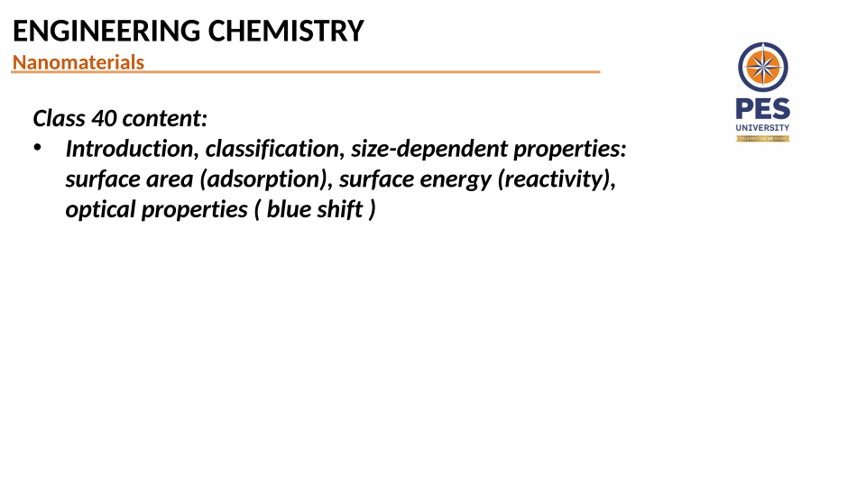
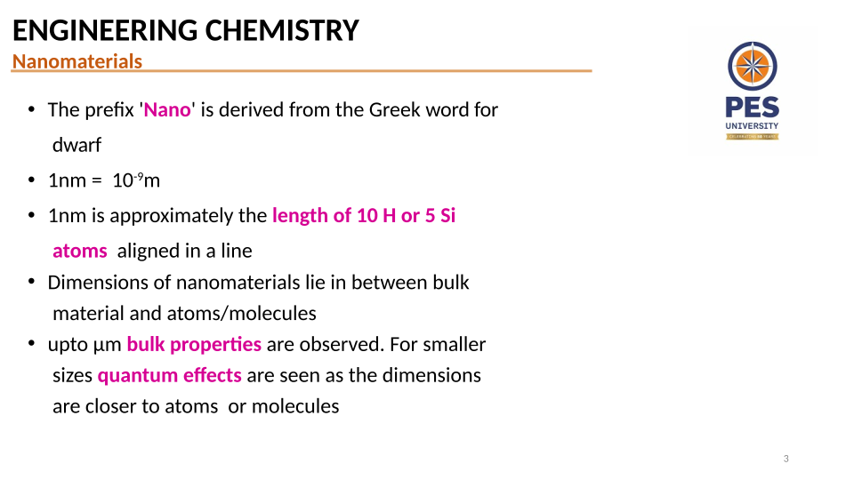
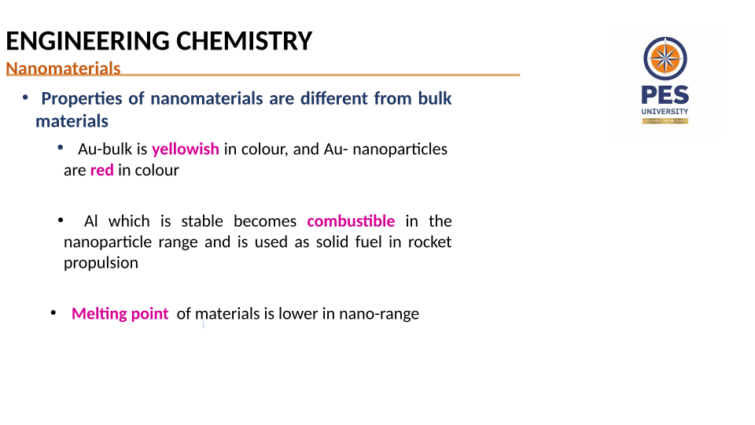
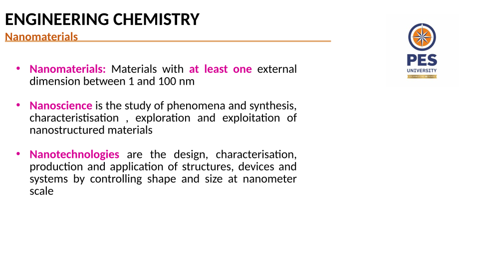
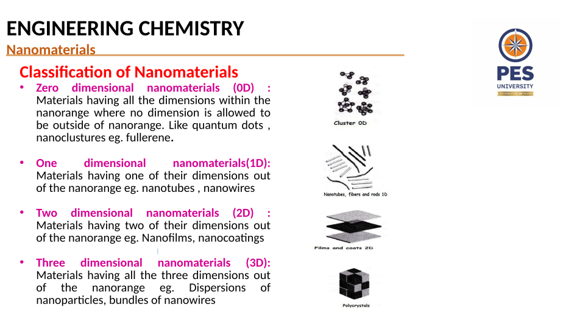
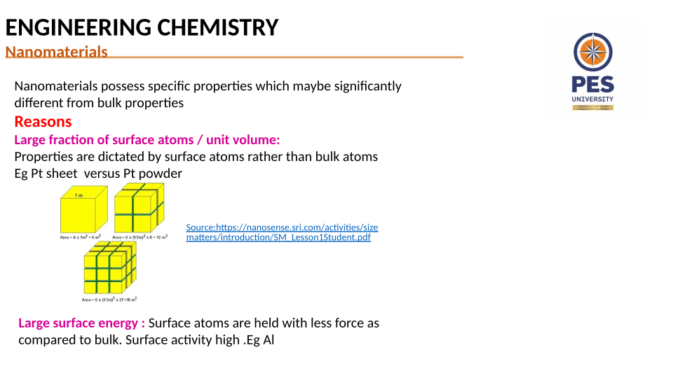
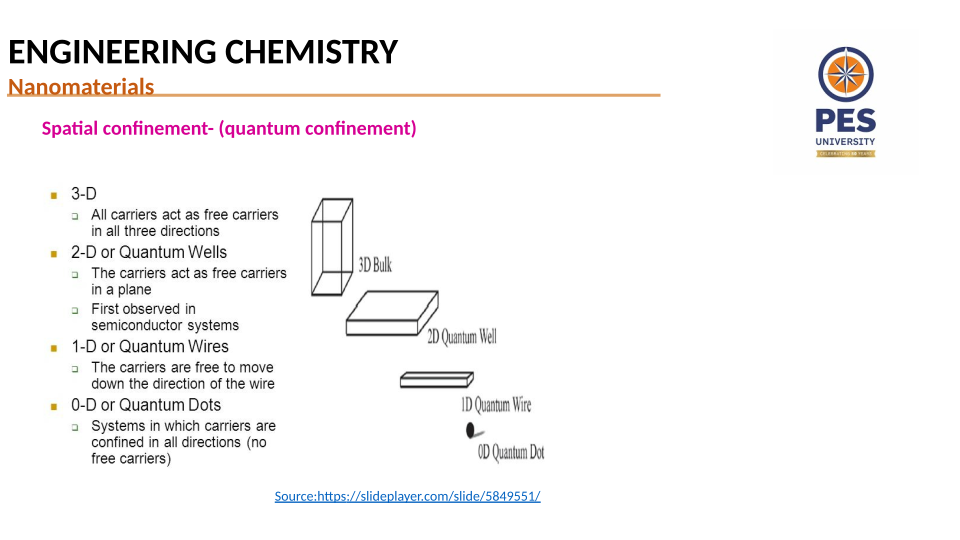
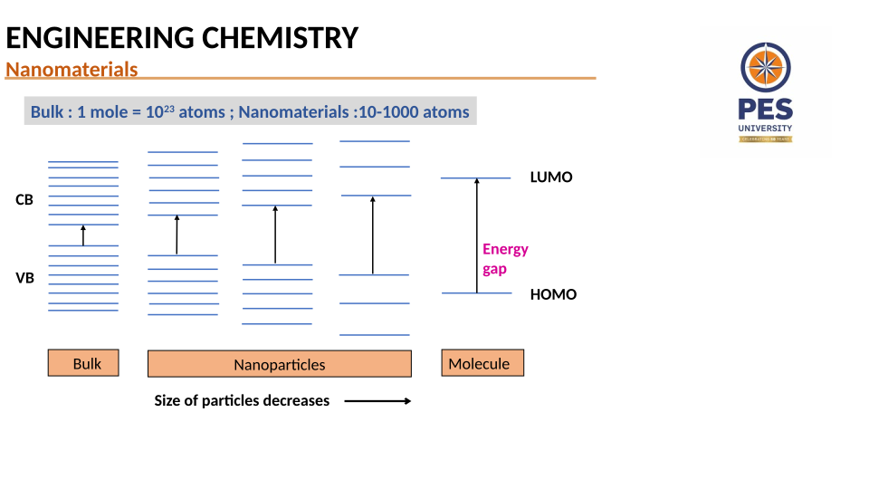
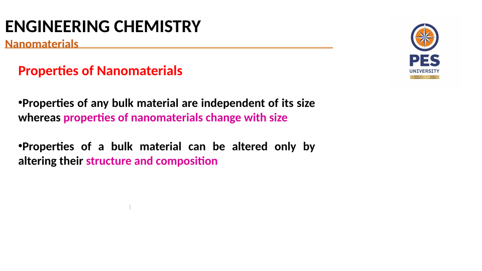
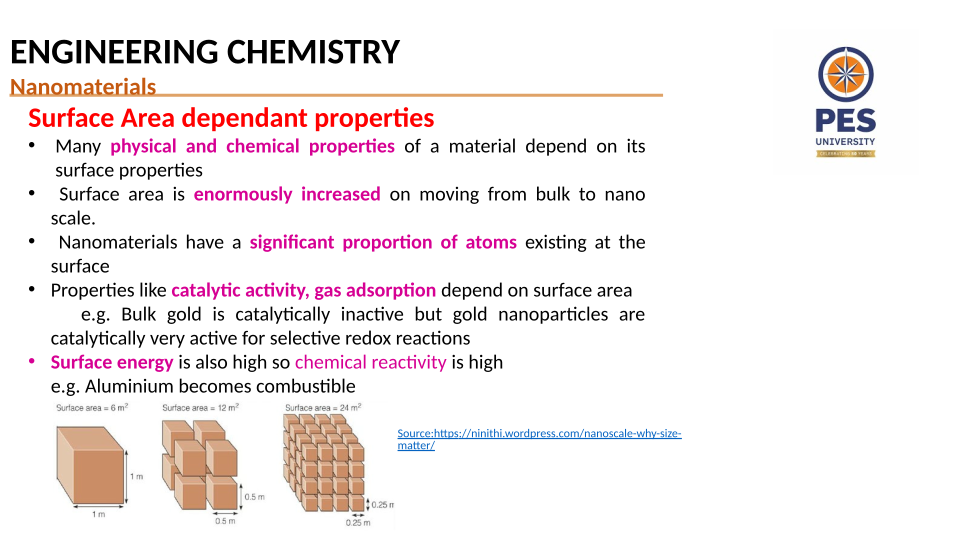
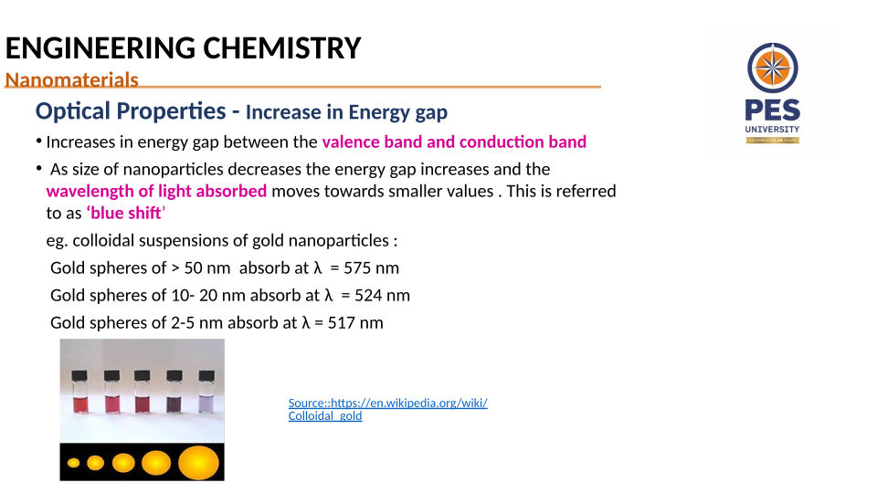
Important points and why
- Source slide page 1 (extracted text): ENGINEERING CHEMISTRY (UE26CY151 A,B) Department of Science and Humanities EV0000194 · EV0000195 · EV0000196
- Source slide page 2 (extracted text): ENGINEERING CHEMISTRY Nanomaterials Class 40 content: Introduction, classification, size-dependent properties: surface area (adsorption), surface energy (reactivity), optical properties ( blue shift ) EV0000197 · EV0000198 · EV0000199
- Source slide page 3 (extracted text): ENGINEERING CHEMISTRY Nanomaterials The prefix 'Nano' is derived from the Greek word for dwarf 1nm = 10-9m 1nm is approximately the length of 10 H or 5 Si atoms aligned in a line Dimensions of nanomaterials lie in between bulk material and atoms/molecules upto μm bulk properties are observed. For smaller sizes quantum effects are seen as the dimensions are closer to atoms or molecules 3 EV0000200 · EV0000201 · EV0000202
- Source slide page 4 (extracted text): ENGINEERING CHEMISTRY Nanomaterials Properties of nanomaterials are different from bulk materials Au-bulk is yellowish in colour, and Au- nanoparticles are red in colour Al which is stable becomes combustible in the nanoparticle range and is used as solid fuel in rocket propulsion Melting point of materials is lower in nano-range EV0000203 · EV0000204 · EV0000205
- Source slide page 5 (extracted text): ENGINEERING CHEMISTRY Nanomaterials Nanomaterials: Materials with at least one external dimension between 1 and 100 nm Nanoscience is the study of phenomena and synthesis, characteristisation , exploration and exploitation of nanostructured materials Nanotechnologies are the design, characterisation, production and application of structures, devices and systems by controlling shape and size at nanometer scale EV0000206 · EV0000207 · EV0000208
- Source slide page 6 (extracted text): ENGINEERING CHEMISTRY Nanomaterials Classification of Nanomaterials Zero dimensional nanomaterials (0D) : Materials having all the dimensions within the nanorange where no dimension is allowed to be outside of nanorange. Like quantum dots , nanoclustures eg. fullerene. One dimensional nanomaterials(1D): Materials having one of their dimensions out of the nanorange eg. nanotubes , nanowires Two dimensional nanomaterials (2D) : Materials having two of their dimensions out of the nanorange eg. Nanofilms, nanocoatings Three dimensional nanomaterials (3D): Materials having all the three dimensions out of the nanorange eg. Dispersions of nanoparticles, bundles of nanowires EV0000209 · EV0000210 · EV0000211
- Source slide page 7 (extracted text): ENGINEERING CHEMISTRY Nanomaterials Nanomaterials possess specific properties which maybe significantly different from bulk properties Reasons Large fraction of surface atoms / unit volume: Properties are dictated by surface atoms rather than bulk atoms Eg Pt sheet versus Pt powder Source:https://nanosense.sri.com/activities/sizematters/introduction/SM_Lesson1Student.pdf Large surface energy : Surface atoms are held with less force as compared to bulk. Surface activity high .Eg Al EV0000212 · EV0000213 · EV0000214
- Source slide page 8 (extracted text): ENGINEERING CHEMISTRY Nanomaterials Spatial confinement- (quantum confinement) [Image text, OCR] Quantum Confinement 3-D All carriers actasfree carriers inallthreedirections 2-DorQuantumWells 3DBulk Thecarriersactasfreecarriers inaplane First observed in semiconductorsystems 2DQuantum Well 1-DorQuantumWires Thecarriersarefreetomove downthedirectionofthewire O-DorQuantumDots IDQuantumWire Systemsinwhichcarriersare confined in all directions(no OD Quantum Dot free carriers) Source:https://slideplayer.com/slide/5849551/ EV0000215 · EV0000216 · EV0000217
- Source slide page 9 (extracted text): ENGINEERING CHEMISTRY Nanomaterials Bulk : 1 mole = 1023 atoms ; Nanomaterials :10-1000 atoms LUMO HOMO CB VB Energy gap Bulk Molecule Nanoparticles Size of particles decreases EV0000218 · EV0000219 · EV0000220
- Source slide page 10 (extracted text): ENGINEERING CHEMISTRY Nanomaterials Properties of Nanomaterials Properties of any bulk material are independent of its size whereas properties of nanomaterials change with size Properties of a bulk material can be altered only by altering their structure and composition EV0000221 · EV0000222 · EV0000223
- Source slide page 11 (extracted text): ENGINEERING CHEMISTRY Nanomaterials Properties of Nanomaterials Properties of any bulk material are independent of its size whereas properties of nanomaterials change with size Properties of a bulk material can be altered only by altering their structure and composition EV0000224 · EV0000225 · EV0000226
- Source slide page 12 (extracted text): ENGINEERING CHEMISTRY Nanomaterials Surface Area dependant properties Many physical and chemical properties of a material depend on its surface properties Surface area is enormously increased on moving from bulk to nano scale. Nanomaterials have a significant proportion of atoms existing at the surface Properties like catalytic activity, gas adsorption depend on surface area e.g. Bulk gold is catalytically inactive but gold nanoparticles are catalytically very active for selective redox reactions Surface energy is also high so chemical reactivity is high e.g. Aluminium becomes combustible [Image text, OCR] Surfacearea=6m² Surfacearea=12m² Surfacearea=24m² 1m 0.5m 0.25m 1m 0.5m 0.25m Source:https://ninithi.wordpress.com/nanoscale-why-size-matter/ EV0000227 · EV0000228 · EV0000229
- Source slide page 13 (extracted text): ENGINEERING CHEMISTRY Nanomaterials Optical Properties - Increase in Energy gap Increases in energy gap between the valence band and conduction band As size of nanoparticles decreases the energy gap increases and the wavelength of light absorbed moves towards smaller values . This is referred to as ‘blue shift’ eg. colloidal suspensions of gold nanoparticles : Gold spheres of > 50 nm absorb at λ = 575 nm Gold spheres of 10- 20 nm absorb at λ = 524 nm Gold spheres of 2-5 nm absorb at λ = 517 nm Source::https://en.wikipedia.org/wiki/Colloidal_gold EV0000230 · EV0000231 · EV0000232
- Source slide page 14 (extracted text): THANK YOU Department of Science and Humanities EV0000233 · EV0000234 · EV0000235
3Nanomaterials: Introduction, classification, size-dependent properties: surface area (adsorption), surface energy (reactivity), optical properties -blue shift (Part 1)
This lesson is indexed from the source video titled Nanomaterials: Introduction, classification, size-dependent properties: surface area (adsorption), surface energy (reactivity), optical properties -blue shift (Part 1). Its complete timestamped transcript is preserved below in segment order. The original video path and content hash are recorded in datasets/lecture-corpus.json. Transcript text is source wording; it has not been silently corrected or rewritten. A candidate slide deck is grouped here according to the current matching score; the exact path and page locators are listed in the source evidence. EV0000018 · EV0000019
4Thermal properties (melting point), electrical properties, and magnetic properties (superparamagnetism), Graphene - structure and synthesis; applications of nanomaterials
This lesson is indexed from the source video titled Thermal properties (melting point), electrical properties, and magnetic properties (superparamagnetism), Graphene - structure and synthesis; applications of nanomaterials. Its complete timestamped transcript is preserved below in segment order. The original video path and content hash are recorded in datasets/lecture-corpus.json. Transcript text is source wording; it has not been silently corrected or rewritten. A candidate slide deck is grouped here according to the current matching score; the exact path and page locators are listed in the source evidence. EV0000038 · EV0000039
Graphs and diagrams
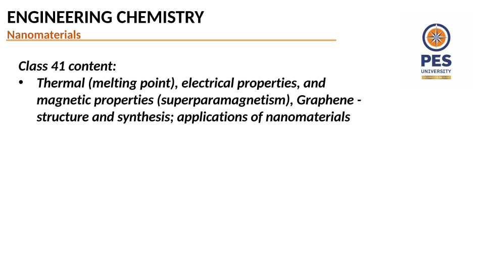
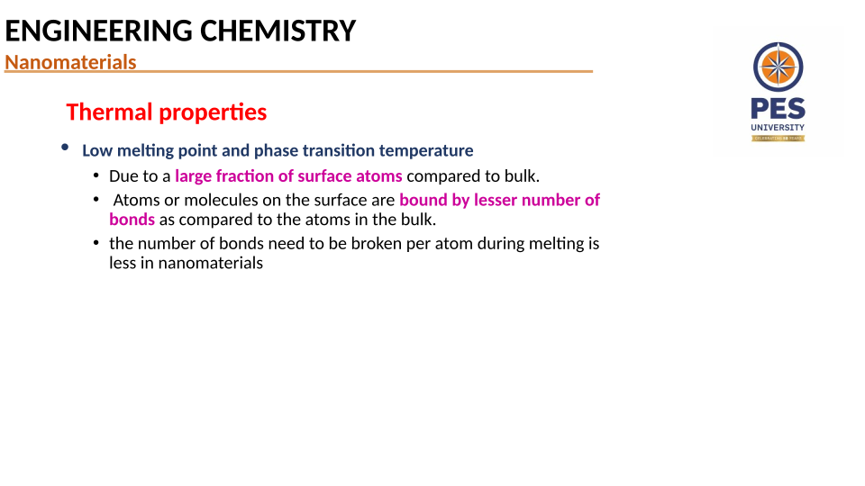
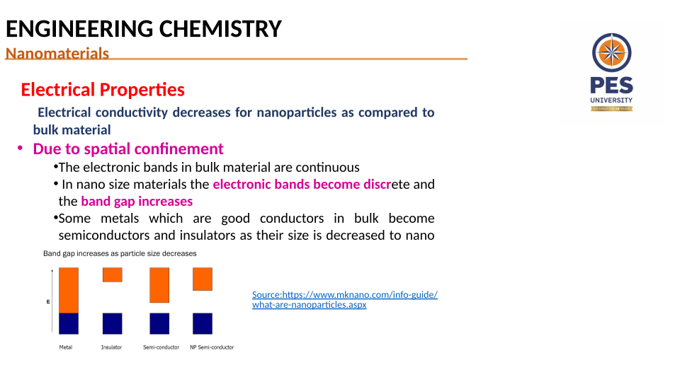
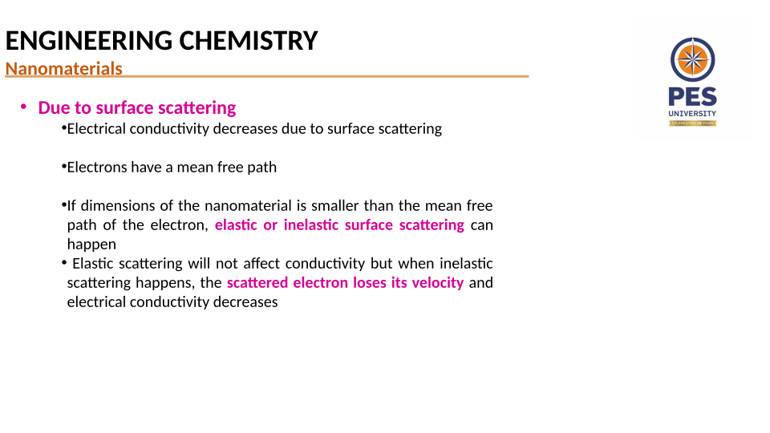
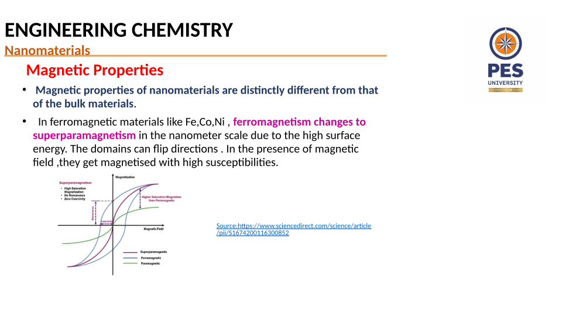
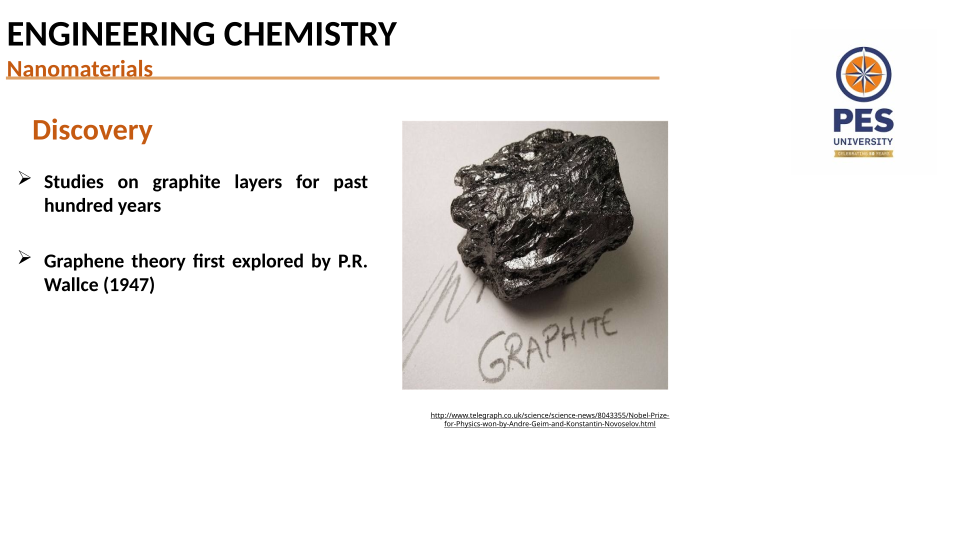
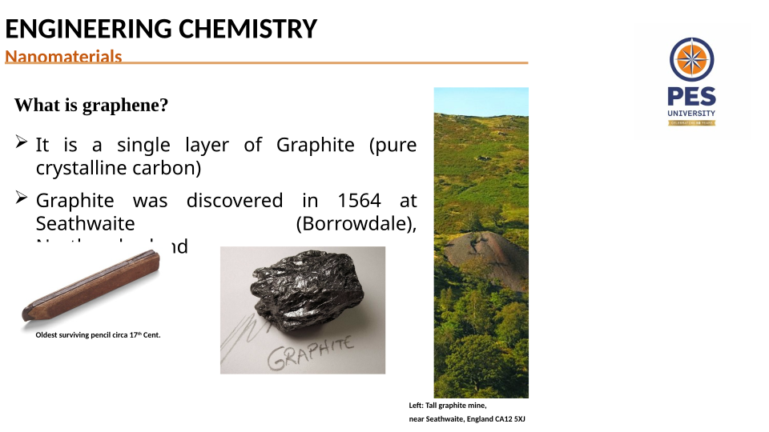
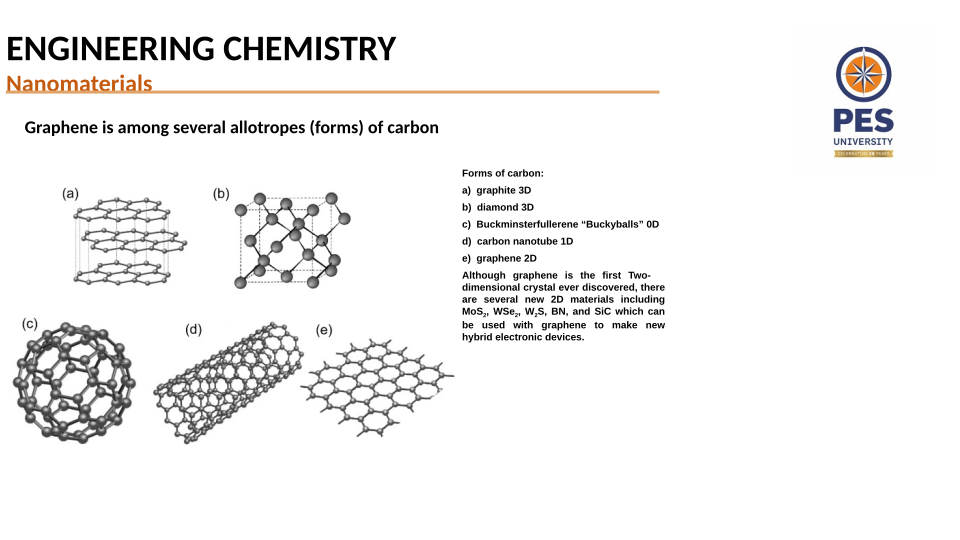
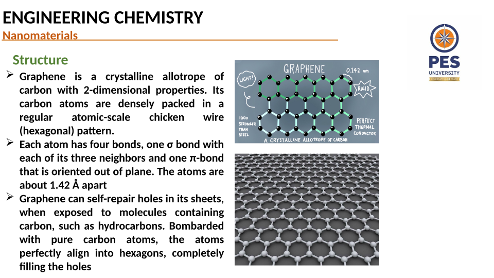
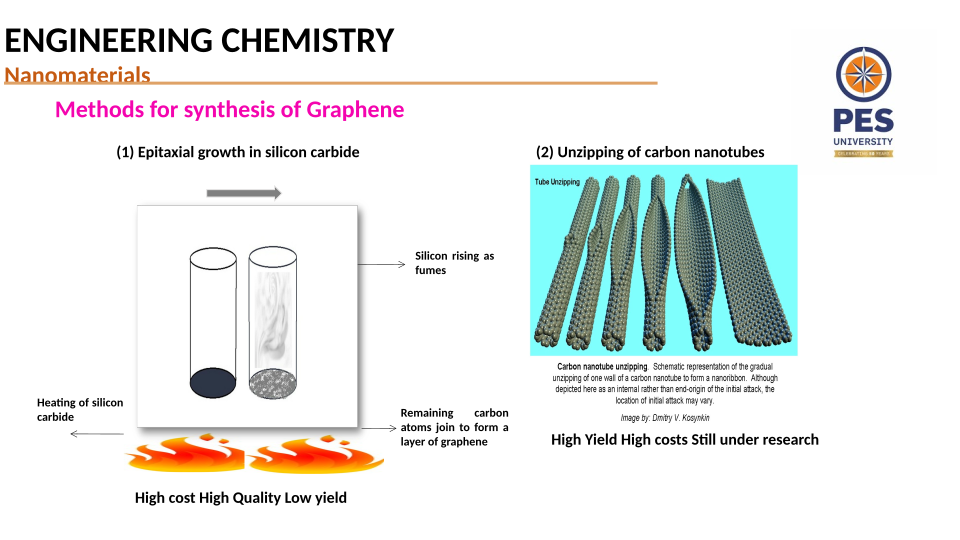
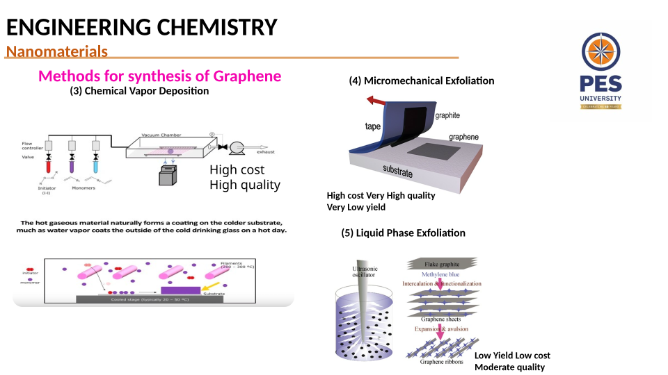
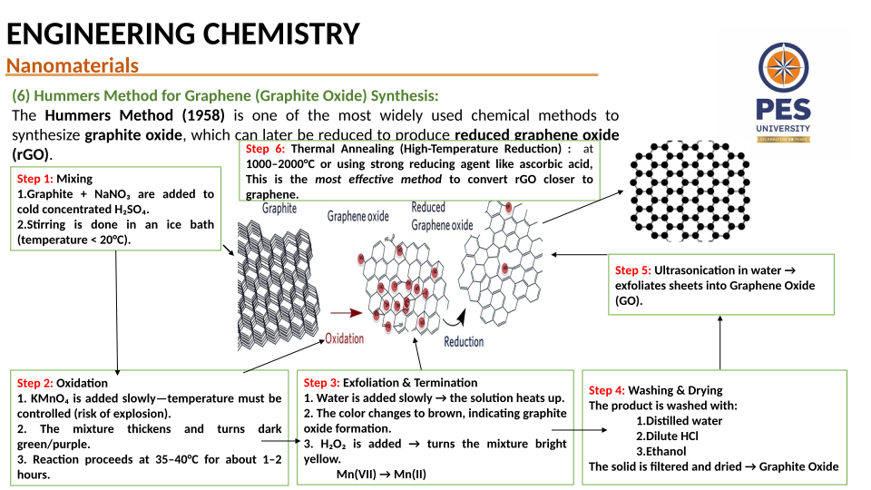
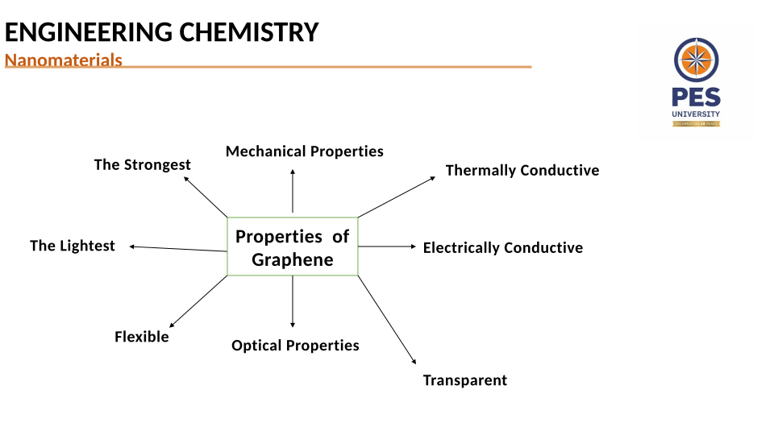
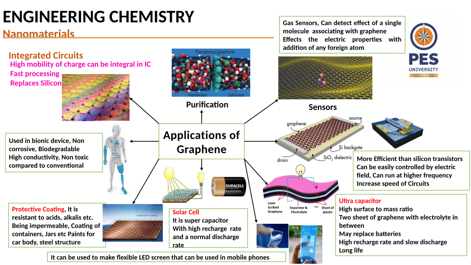
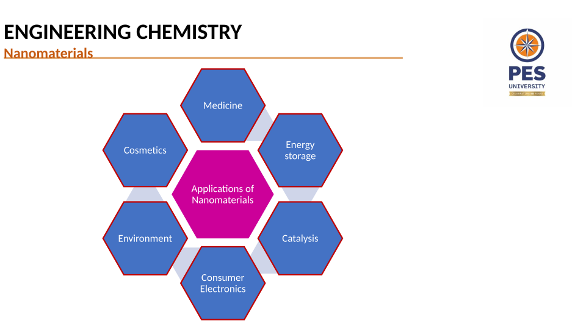
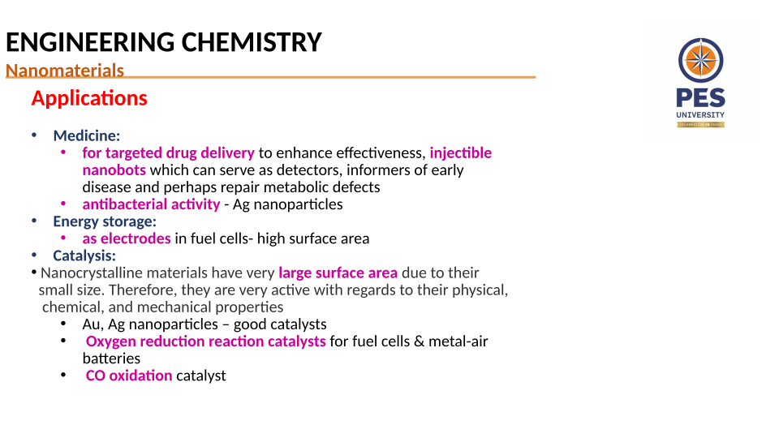
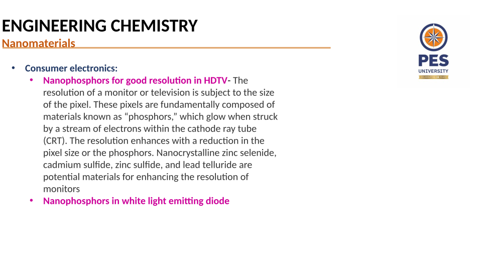
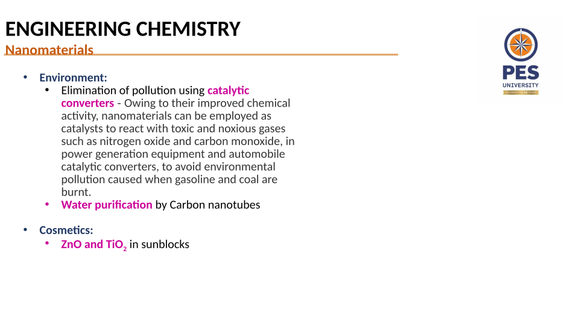
Important points and why
- Source slide page 1 (extracted text): ENGINEERING CHEMISTRY (UE26CY151 A,B) Department of Science and Humanities EV0000236 · EV0000237 · EV0000238
- Source slide page 2 (extracted text): ENGINEERING CHEMISTRY Nanomaterials Class 41 content: Thermal (melting point), electrical properties, and magnetic properties (superparamagnetism), Graphene - structure and synthesis; applications of nanomaterials EV0000239 · EV0000240 · EV0000241
- Source slide page 3 (extracted text): ENGINEERING CHEMISTRY Nanomaterials Thermal properties Low melting point and phase transition temperature Due to a large fraction of surface atoms compared to bulk. Atoms or molecules on the surface are bound by lesser number of bonds as compared to the atoms in the bulk. the number of bonds need to be broken per atom during melting is less in nanomaterials EV0000242 · EV0000243 · EV0000244
- Source slide page 4 (extracted text): ENGINEERING CHEMISTRY Nanomaterials Electrical Properties Electrical conductivity decreases for nanoparticles as compared to bulk material Due to spatial confinement The electronic bands in bulk material are continuous In nano size materials the electronic bands become discrete and the band gap increases Some metals which are good conductors in bulk become semiconductors and insulators as their size is decreased to nano range [Image text, OCR] Electrical Properties Bandgap increases asparticle sizedecreases E Metal Insulator Semi-conductor NP Semi-conductor SHINE:Seattle'sHubfor Industry-drivenNanotechnologyEducation 18 Source:https://www.mknano.com/info-guide/what-are-nanoparticles.aspx EV0000245 · EV0000246 · EV0000247
- Source slide page 5 (extracted text): ENGINEERING CHEMISTRY Nanomaterials Due to surface scattering Electrical conductivity decreases due to surface scattering Electrons have a mean free path If dimensions of the nanomaterial is smaller than the mean free path of the electron, elastic or inelastic surface scattering can happen Elastic scattering will not affect conductivity but when inelastic scattering happens, the scattered electron loses its velocity and electrical conductivity decreases EV0000248 · EV0000249 · EV0000250
- Source slide page 6 (extracted text): ENGINEERING CHEMISTRY Nanomaterials Magnetic Properties Magnetic properties of nanomaterials are distinctly different from that of the bulk materials. In ferromagnetic materials like Fe,Co,Ni , ferromagnetism changes to superparamagnetism in the nanometer scale due to the high surface energy. The domains can flip directions . In the presence of magnetic field ,they get magnetised with high susceptibilities. [Image text, OCR] Magnetization Superparamagnetism High Saturatlon Magnetization No Remanence .Zero Coerclvity 1Higher Saturation Magnetism than Paramagnetic Coercivity Magnetic Field Superparamagnetic Ferromagnetic Paramagnetic Source:https://www.sciencedirect.com/science/article/pii/S1674200116300852 EV0000251 · EV0000252 · EV0000253
- Source slide page 7 (extracted text): ENGINEERING CHEMISTRY Nanomaterials Discovery [Image text, OCR] GRAPHITE Studies on graphite layers for past hundred years Graphene theory first explored by P.R. Wallce (1947) http://www.telegraph.co.uk/science/science-news/8043355/Nobel-Prize-for-Physics-won-by-Andre-Geim-and-Konstantin-Novoselov.html EV0000254 · EV0000255 · EV0000256
- Source slide page 8 (extracted text): ENGINEERING CHEMISTRY Nanomaterials What is graphene? It is a single layer of Graphite (pure crystalline carbon) Graphite was discovered in 1564 at Seathwaite (Borrowdale), Northumberland Oldest surviving pencil circa 17th Cent. Left: Tall graphite mine, near Seathwaite, England CA12 5XJ EV0000257 · EV0000258 · EV0000259
- Source slide page 9 (extracted text): ENGINEERING CHEMISTRY Nanomaterials Graphite was discovered in 1564 at Seathwaite (Borrowdale), Northumberland ‘Graphene’ was first isolated in the lab by Professor Andre Geim with former student Konstantin Novoselov at the University of Manchester, England in 2004 [Image text, OCR] AT MDCCC XXX OB- ALFR· MDCCC NOBEL XCV. 2010 Nobel Prize for “groundbreaking experiments regarding the two-dimensional material graphene” EV0000260 · EV0000261 · EV0000262
- Source slide page 10 (extracted text): ENGINEERING CHEMISTRY Nanomaterials Graphene is among several allotropes (forms) of carbon Forms of carbon: a) graphite 3D b) diamond 3D c) Buckminsterfullerene “Buckyballs” 0D d) carbon nanotube 1D e) graphene 2D Although graphene is the first Two- dimensional crystal ever discovered, there are several new 2D materials including MoS2, WSe2, W2S, BN, and SiC which can be used with graphene to make new hybrid electronic devices. [Image text, OCR] (c) (d) (e) EV0000263 · EV0000264 · EV0000265
- Source slide page 11 (extracted text): ENGINEERING CHEMISTRY Nanomaterials Structure [Image text, OCR] GRAPHENE 0.142 nm LIGHT! RIGID 100x PERFECT STRONGER THERMAL THAN CONDVLTOR STEEL ALLOTRDPE OF CARBON A CRYSTALLINE Graphene is a crystalline allotrope of carbon with 2-dimensional properties. Its carbon atoms are densely packed in a regular atomic-scale chicken wire (hexagonal) pattern. Each atom has four bonds, one σ bond with each of its three neighbors and one π-bond that is oriented out of plane. The atoms are about 1.42 Å apart Graphene can self-repair holes in its sheets, when exposed to molecules containing carbon, such as hydrocarbons. Bombarded with pure carbon atoms, the atoms perfectly align into hexagons, completely filling the holes EV0000266 · EV0000267 · EV0000268
- Source slide page 12 (extracted text): ENGINEERING CHEMISTRY Nanomaterials Methods for synthesis of Graphene (1) Epitaxial growth in silicon carbide (2) Unzipping of carbon nanotubes [Image text, OCR] TubeUnzipping Carbon nanotube unzipping. Schematic representation of the gradual unzipping of one wall of a carbon nanotube to form a nanoribbon. Although depicted here as an internal rather than end-origin of the initial attack, the location of initial attack may vary. Imageby:DmitryV.Kosynkin Heating of silicon carbide Silicon rising as fumes Remaining carbon atoms join to form a layer of graphene High Yield High costs Still under research High cost High Quality Low yield EV0000269 · EV0000270 · EV0000271
- Source slide page 13 (extracted text): ENGINEERING CHEMISTRY Nanomaterials Methods for synthesis of Graphene (4) Micromechanical Exfoliation (3) Chemical Vapor Deposition [Image text, OCR] graphite tape graphene substrate [Image text, OCR] Vacuum Chamber Flow G controller exhaust Valve Initiator Monomers (I-I) High cost High quality High cost Very High quality Very Low yield [Image text, OCR] Thehotgaseousmaterialnaturallyformsacoatingonthecoldersubstrate, muchaswatervaporcoatstheoutsideofthecolddrinkingglassonahotday. Filaments (200-3000C) initiator monomer Substrate Cooled stage (typically 20 -50 C) (5) Liquid Phase Exfoliation [Image text, OCR] Flake graphite Ultrasonic oscillator Methyleneblue Intercalation&functionalization Graphenesheets Expansion&avulsion Grapheneribbons Low Yield Low cost Moderate quality EV0000272 · EV0000273 · EV0000274
- Source slide page 14 (extracted text): ENGINEERING CHEMISTRY Nanomaterials (6) Hummers Method for Graphene (Graphite Oxide) Synthesis: The Hummers Method (1958) is one of the most widely used chemical methods to synthesize graphite oxide, which can later be reduced to produce reduced graphene oxide (rGO). Step 6: Thermal Annealing (High-Temperature Reduction) : at 1000–2000°C or using strong reducing agent like ascorbic acid, This is the most effective method to convert rGO closer to graphene. Step 1: Mixing Graphite + NaNO₃ are added to cold concentrated H₂SO₄. Stirring is done in an ice bath (temperature < 20°C). [Image text, OCR] Graphite Reduced Grapheneoxide Grapheneoxide HO HO HO HO HO OH HO Oxidation Reduction Step 5: Ultrasonication in water → exfoliates sheets into Graphene Oxide (GO). Step 2: Oxidation 1. KMnO₄ is added slowly—temperature must be controlled (risk of explosion). 2. The mixture thickens and turns dark green/purple. 3. Reaction proceeds at 35–40°C for about 1–2 hours. Step 3: Exfoliation & Termination 1. Water is added slowly → the solution heats up. 2. The color changes to brown, indicating graphite oxide formation. 3. H₂O₂ is added → turns the mixture bright yellow. Mn(VII) → Mn(II) Step 4: Washing & Drying The product is washed with: Distilled water Dilute HCl Ethanol The solid is filtered and dried → Graphite Oxide EV0000275 · EV0000276 · EV0000277
- Source slide page 15 (extracted text): ENGINEERING CHEMISTRY Nanomaterials Mechanical Properties The Strongest Thermally Conductive Properties of Graphene The Lightest Electrically Conductive Flexible Optical Properties Transparent EV0000278 · EV0000279 · EV0000280
- Source slide page 16 (extracted text): ENGINEERING CHEMISTRY Nanomaterials Gas Sensors, Can detect effect of a single molecule associating with graphene Effects the electric properties with addition of any foreign atom Integrated Circuits High mobility of charge can be integral in IC Fast processing Replaces Silicon Purification Sensors Applications of Graphene Used in bionic device, Non corrosive, Biodegradable High conductivity, Non toxic compared to conventional More Efficient than silicon transistors Can be easily controlled by electric field, Can run at higher frequency Increase speed of Circuits Ultra capacitor High surface to mass ratio Two sheet of graphene with electrolyte in between May replace batteries High recharge rate and slow discharge Long life Protective Coating, It is resistant to acids, alkalis etc. Being impermeable, Coating of containers, Jars etc Paints for car body, steel structure Solar Cell It is super capacitor With high recharge rate and a normal discharge rate It can be used to make flexible LED screen that can be used in mobile phones EV0000281 · EV0000282 · EV0000283
- Source slide page 17 (extracted text): ENGINEERING CHEMISTRY Nanomaterials EV0000284 · EV0000285 · EV0000286
- Source slide page 18 (extracted text): ENGINEERING CHEMISTRY Nanomaterials Applications Medicine: for targeted drug delivery to enhance effectiveness, injectible nanobots which can serve as detectors, informers of early disease and perhaps repair metabolic defects antibacterial activity - Ag nanoparticles Energy storage: as electrodes in fuel cells- high surface area Catalysis: Nanocrystalline materials have very large surface area due to their small size. Therefore, they are very active with regards to their physical, chemical, and mechanical properties Au, Ag nanoparticles – good catalysts Oxygen reduction reaction catalysts for fuel cells & metal-air batteries CO oxidation catalyst EV0000287 · EV0000288 · EV0000289
- Source slide page 19 (extracted text): ENGINEERING CHEMISTRY Nanomaterials Consumer electronics: Nanophosphors for good resolution in HDTV- The resolution of a monitor or television is subject to the size of the pixel. These pixels are fundamentally composed of materials known as “phosphors,” which glow when struck by a stream of electrons within the cathode ray tube (CRT). The resolution enhances with a reduction in the pixel size or the phosphors. Nanocrystalline zinc selenide, cadmium sulfide, zinc sulfide, and lead telluride are potential materials for enhancing the resolution of monitors Nanophosphors in white light emitting diode EV0000290 · EV0000291 · EV0000292
- Source slide page 20 (extracted text): ENGINEERING CHEMISTRY Nanomaterials Environment: Elimination of pollution using catalytic converters - Owing to their improved chemical activity, nanomaterials can be employed as catalysts to react with toxic and noxious gases such as nitrogen oxide and carbon monoxide, in power generation equipment and automobile catalytic converters, to avoid environmental pollution caused when gasoline and coal are burnt. Water purification by Carbon nanotubes Cosmetics: ZnO and TiO2 in sunblocks EV0000293 · EV0000294 · EV0000295
- Source slide page 21 (extracted text): THANK YOU Department of Science and Humanities EV0000296 · EV0000297 · EV0000298
5Polymers: Introduction, types of polymerizations, definition of glass transition temperature
This lesson is indexed from the source video titled Polymers: Introduction, types of polymerizations, definition of glass transition temperature. Its complete timestamped transcript is preserved below in segment order. The original video path and content hash are recorded in datasets/lecture-corpus.json. Transcript text is source wording; it has not been silently corrected or rewritten. A candidate slide deck is grouped here according to the current matching score; the exact path and page locators are listed in the source evidence. EV0000054 · EV0000055
Graphs and diagrams
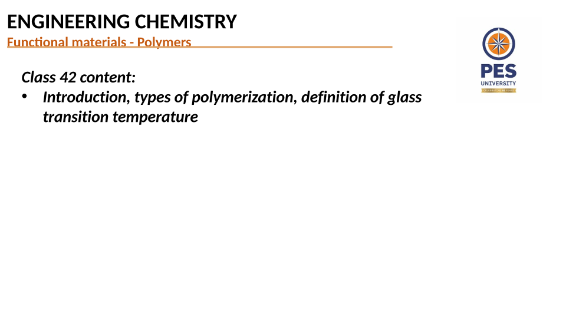
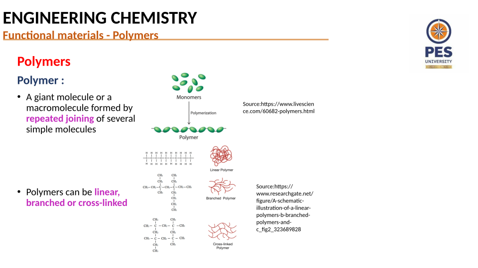
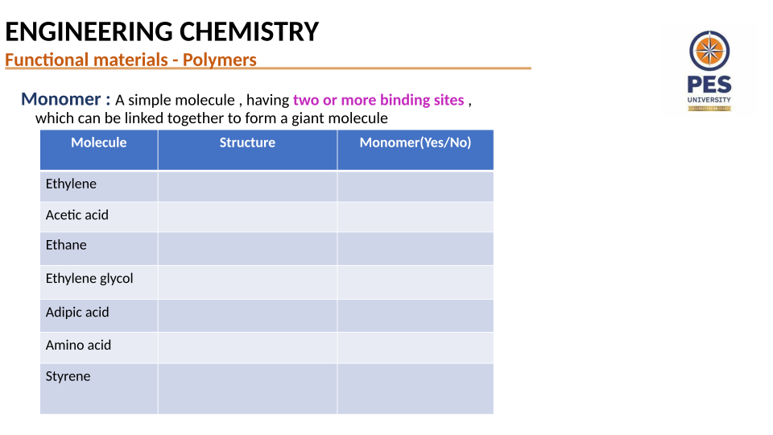
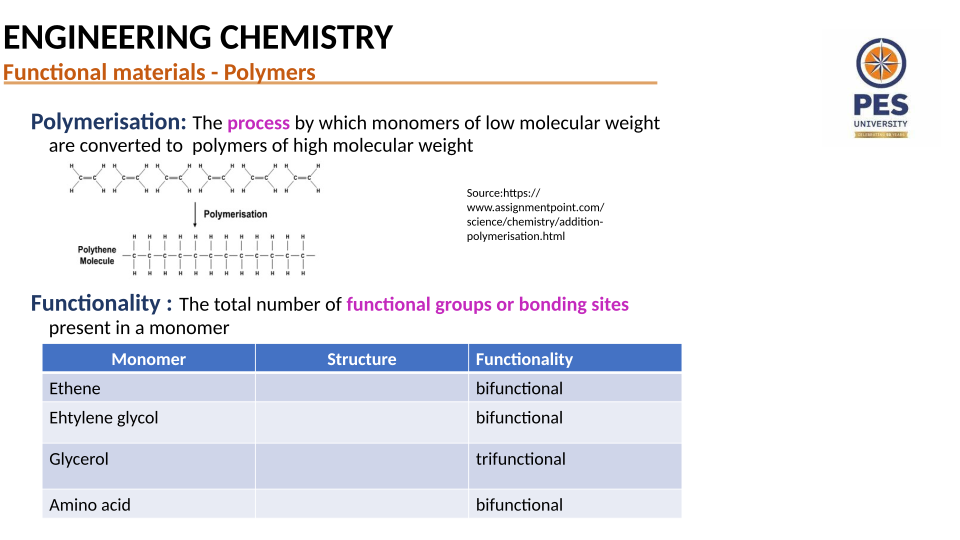
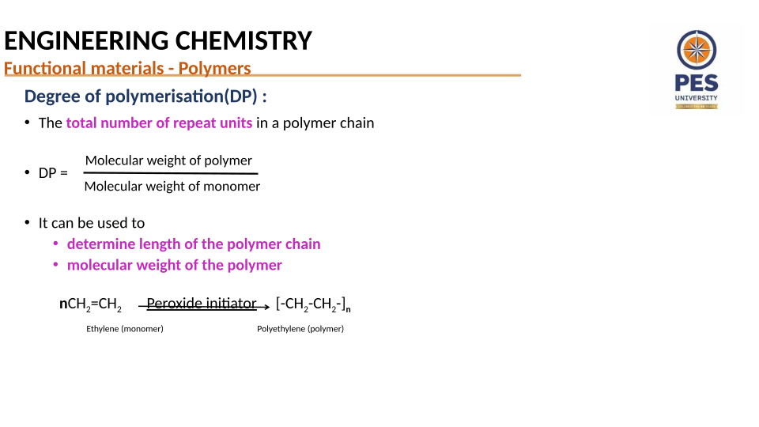
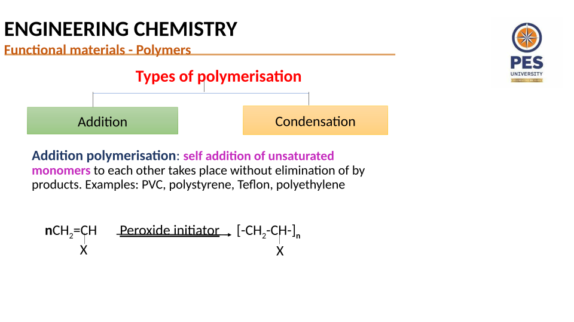
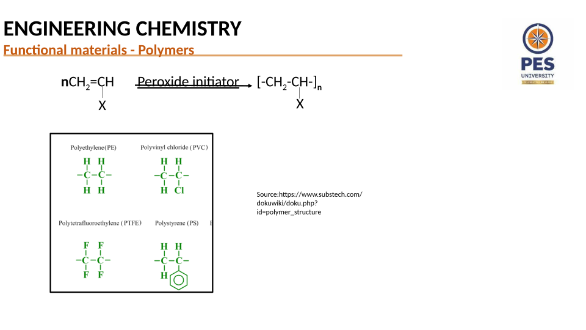
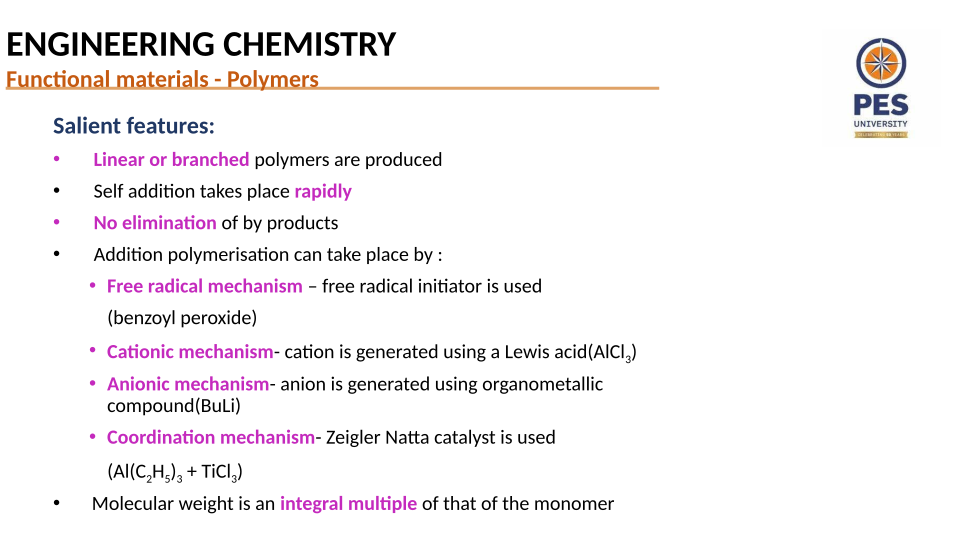
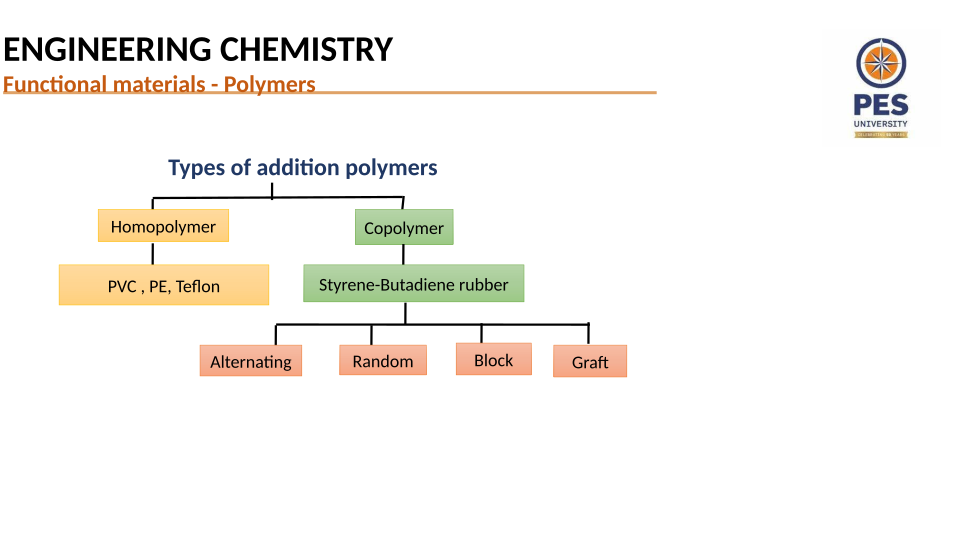
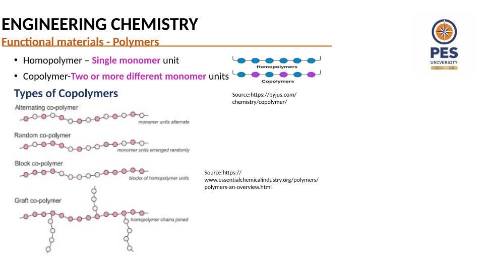
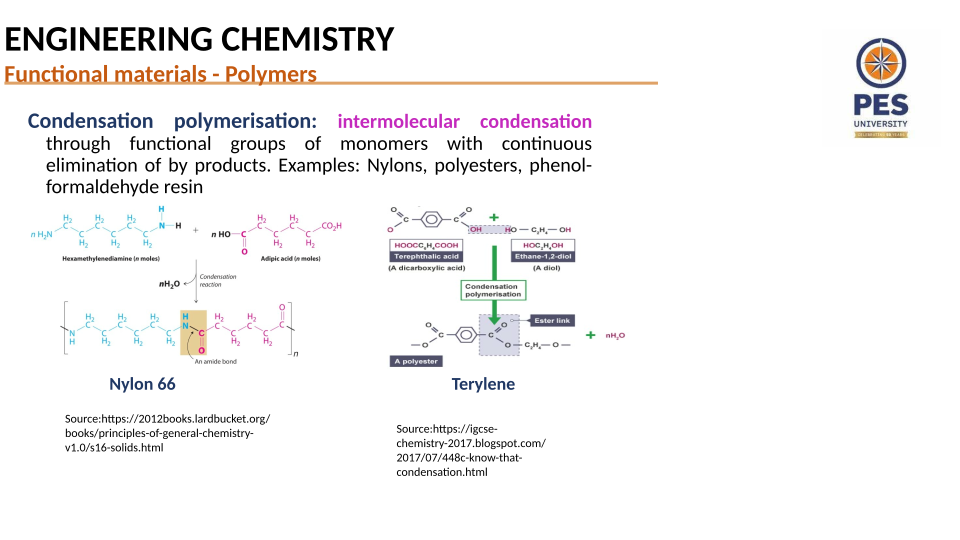
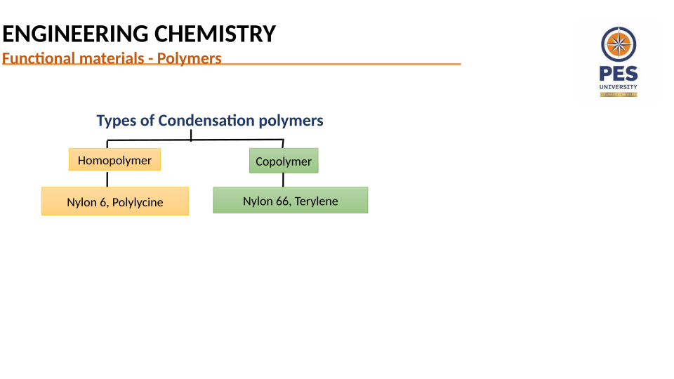
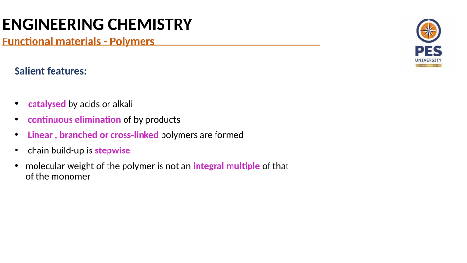
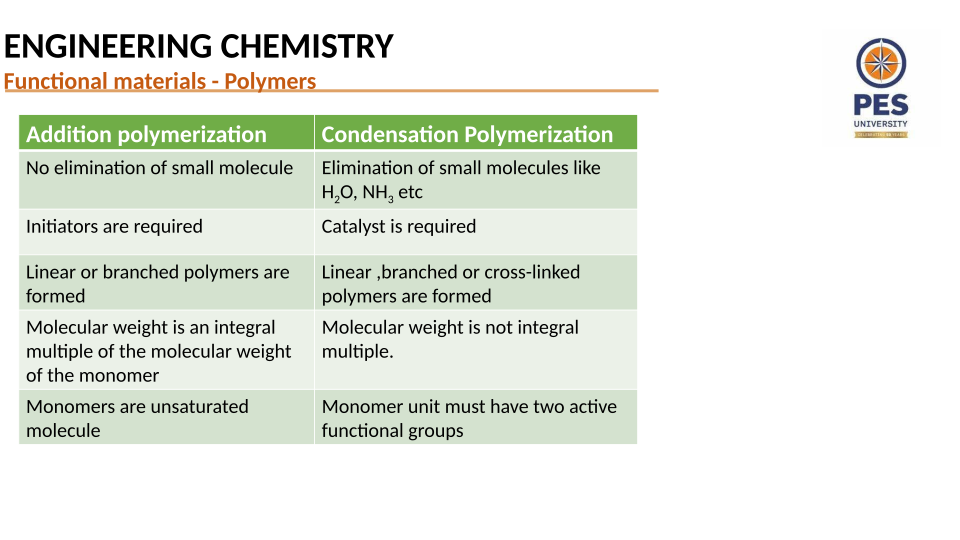
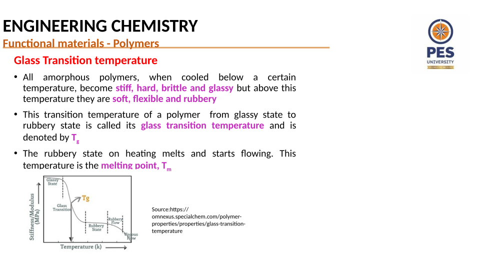
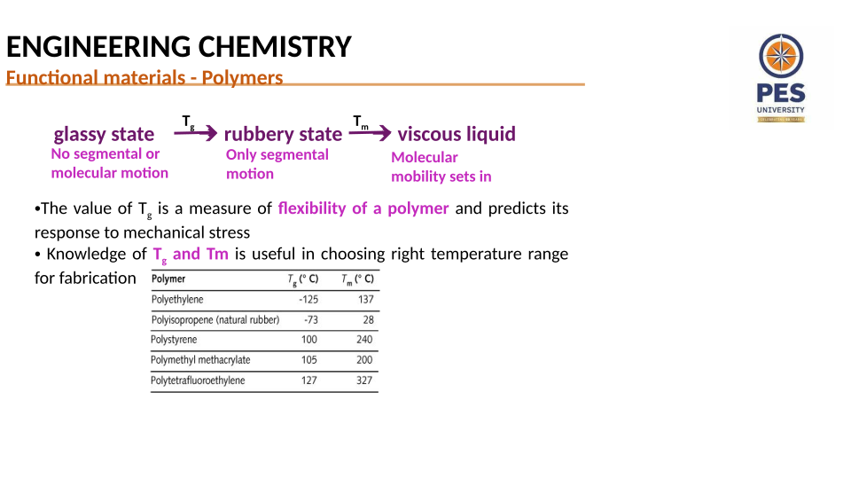
Important points and why
- Source slide page 1 (extracted text): ENGINEERING CHEMISTRY (UE26CY151 A,B) Department of Science and Humanities EV0000299 · EV0000300 · EV0000301
- Source slide page 2 (extracted text): ENGINEERING CHEMISTRY Functional materials - Polymers Class 42 content: Introduction, types of polymerization, definition of glass transition temperature EV0000302 · EV0000303 · EV0000304
- Source slide page 3 (extracted text): ENGINEERING CHEMISTRY Functional materials - Polymers Polymers Polymer : A giant molecule or a macromolecule formed by repeated joining of several simple molecules Polymers can be linear, branched or cross-linked Source:https://www.livescience.com/60682-polymers.html [Image text, OCR] H H H H H H H H (a) H H H H H H H H H Linear Polymer CH3 CH; CH2 CH2 (b) CH-CH2-C- CH-C-CH-CH; CH: CH2 CH2 Branched Polymer CH2 CH; CH; CH; CH;- C -CH2- C -CH; (c) 1 CH2 CH2 CH-C- CH-C- CH; CH2 CH3 Cross-linked Polymer CH3 Source:https://www.researchgate.net/figure/A-schematic-illustration-of-a-linear-polymers-b-branched-polymers-and-c_fig2_323689828 EV0000305 · EV0000306 · EV0000307
- Source slide page 4 (extracted text): ENGINEERING CHEMISTRY Functional materials - Polymers Monomer : A simple molecule , having two or more binding sites , which can be linked together to form a giant molecule Molecule | Structure | Monomer(Yes/No) Ethylene | | Acetic acid | | Ethane | | Ethylene glycol | | Adipic acid | | Amino acid | | Styrene | | EV0000308 · EV0000309 · EV0000310
- Source slide page 5 (extracted text): ENGINEERING CHEMISTRY Functional materials - Polymers Polymerisation: The process by which monomers of low molecular weight are converted to polymers of high molecular weight Functionality : The total number of functional groups or bonding sites present in a monomer [Image text, OCR] Polymerisation H H H H H H H H H H Polythene Molecule H H H H H Source:https://www.assignmentpoint.com/science/chemistry/addition-polymerisation.html Monomer | Structure | Functionality Ethene | | bifunctional Ehtylene glycol | | bifunctional Glycerol | | trifunctional Amino acid | | bifunctional EV0000311 · EV0000312 · EV0000313
- Source slide page 6 (extracted text): ENGINEERING CHEMISTRY Functional materials - Polymers Degree of polymerisation(DP) : The total number of repeat units in a polymer chain DP = It can be used to determine length of the polymer chain molecular weight of the polymer Molecular weight of polymer Molecular weight of monomer nCH2=CH2 Peroxide initiator [-CH2-CH2-]n Ethylene (monomer) Polyethylene (polymer) EV0000314 · EV0000315 · EV0000316
- Source slide page 7 (extracted text): ENGINEERING CHEMISTRY Functional materials - Polymers Types of polymerisation Addition polymerisation: self addition of unsaturated monomers to each other takes place without elimination of by products. Examples: PVC, polystyrene, Teflon, polyethylene Condensation Addition nCH2=CH Peroxide initiator [-CH2-CH-]n X X EV0000317 · EV0000318 · EV0000319
- Source slide page 8 (extracted text): ENGINEERING CHEMISTRY Functional materials - Polymers nCH2=CH Peroxide initiator [-CH2-CH-]n X X [Image text, OCR] Monomerstructures ofdifferentpolymers Polyethylene(PE) Polyvinyl chloride (PVC) Polypropylene(PP) HI HL H H H H C C C C C -C H H H Cl H CH3 Polytetrafluoroethylene(PTFE) Polystyrene (PS) Polymethyl metacrylate (PMMA) Ol H H H H C C -C-O-CH3 H CH3 www.substech.com Source:https://www.substech.com/dokuwiki/doku.php?id=polymer_structure EV0000320 · EV0000321 · EV0000322
- Source slide page 9 (extracted text): ENGINEERING CHEMISTRY Functional materials - Polymers Salient features: Linear or branched polymers are produced Self addition takes place rapidly No elimination of by products Addition polymerisation can take place by : Free radical mechanism – free radical initiator is used (benzoyl peroxide) Cationic mechanism- cation is generated using a Lewis acid(AlCl3) Anionic mechanism- anion is generated using organometallic compound(BuLi) Coordination mechanism- Zeigler Natta catalyst is used (Al(C2H5)3 + TiCl3) Molecular weight is an integral multiple of that of the monomer EV0000323 · EV0000324 · EV0000325
- Source slide page 10 (extracted text): ENGINEERING CHEMISTRY Functional materials - Polymers Types of addition polymers Homopolymer Copolymer PVC , PE, Teflon Styrene-Butadiene rubber Alternating Random Block Graft EV0000326 · EV0000327 · EV0000328
- Source slide page 11 (extracted text): ENGINEERING CHEMISTRY Functional materials - Polymers Homopolymer – Single monomer unit Copolymer-Two or more different monomer units Types of Copolymers Source:https://byjus.com/chemistry/copolymer/ [Image text, OCR] Alternating co=polymer -0-00-0- monomer unsits affemate Random co-polymer monomer units arsnged rardomy Block co=polymer blocks of horoopolymer unilts Graft co-polymer nomcpolymer etans jbihed Source:https://www.essentialchemicalindustry.org/polymers/polymers-an-overview.html EV0000329 · EV0000330 · EV0000331
- Source slide page 12 (extracted text): ENGINEERING CHEMISTRY Functional materials - Polymers Condensation polymerisation: intermolecular condensation through functional groups of monomers with continuous elimination of by products. Examples: Nylons, polyesters, phenol-formaldehyde resin [Image text, OCR] H H H H2N nHO H H H H Hexamethylenediamine(nmoles) Adipicacid (nmoles) Condensation nH2O reaction H N N C H H H H Anamidebond Nylon [Image text, OCR] OH HO-CH-OH HOOCC,H,COOH HOC,HOH Terephthalicacid Ethane-1,2-diol (A dicarboxylicacid) (A diol) Condensation polymerisation Esterlink nH,O CH-O- Apolyester Nylon 66 Terylene Source:https://2012books.lardbucket.org/books/principles-of-general-chemistry-v1.0/s16-solids.html Source:https://igcse-chemistry-2017.blogspot.com/2017/07/448c-know-that-condensation.html EV0000332 · EV0000333 · EV0000334
- Source slide page 13 (extracted text): ENGINEERING CHEMISTRY Functional materials - Polymers Types of Condensation polymers Homopolymer Copolymer Nylon 6, Polylycine Nylon 66, Terylene EV0000335 · EV0000336 · EV0000337
- Source slide page 14 (extracted text): ENGINEERING CHEMISTRY Functional materials - Polymers Salient features: catalysed by acids or alkali continuous elimination of by products Linear , branched or cross-linked polymers are formed chain build-up is stepwise molecular weight of the polymer is not an integral multiple of that of the monomer EV0000338 · EV0000339 · EV0000340
- Source slide page 15 (extracted text): ENGINEERING CHEMISTRY Functional materials - Polymers Addition polymerization | Condensation Polymerization No elimination of small molecule | Elimination of small molecules like H2O, NH3 etc Initiators are required | Catalyst is required Linear or branched polymers are formed | Linear ,branched or cross-linked polymers are formed Molecular weight is an integral multiple of the molecular weight of the monomer | Molecular weight is not integral multiple. Monomers are unsaturated molecule | Monomer unit must have two active functional groups EV0000341 · EV0000342 · EV0000343
- Source slide page 16 (extracted text): ENGINEERING CHEMISTRY Functional materials - Polymers Glass Transition temperature All amorphous polymers, when cooled below a certain temperature, become stiff, hard, brittle and glassy but above this temperature they are soft, flexible and rubbery This transition temperature of a polymer from glassy state to rubbery state is called its glass transition temperature and is denoted by Tg The rubbery state on heating melts and starts flowing. This temperature is the melting point, Tm [Image text, OCR] Glassy State Tg Transition Glass (ew) iRubbery Rubbery Flow State Wisdous OW Temperature (k) Source:https://omnexus.specialchem.com/polymer-properties/properties/glass-transition-temperature EV0000344 · EV0000345 · EV0000346
- Source slide page 17 (extracted text): ENGINEERING CHEMISTRY Functional materials - Polymers glassy state rubbery state viscous liquid The value of Tg is a measure of flexibility of a polymer and predicts its response to mechanical stress Knowledge of Tg and Tm is useful in choosing right temperature range for fabrication Tg Tm No segmental or molecular motion Only segmental motion Molecular mobility sets in EV0000347 · EV0000348 · EV0000349
- Source slide page 18 (extracted text): THANK YOU Department of Science and Humanities EV0000350 · EV0000351 · EV0000352
6Structure-property relationship
This lesson is indexed from the source video titled Structure-property relationship. Its complete timestamped transcript is preserved below in segment order. The original video path and content hash are recorded in datasets/lecture-corpus.json. Transcript text is source wording; it has not been silently corrected or rewritten. A candidate slide deck is grouped here according to the current matching score; the exact path and page locators are listed in the source evidence. EV0000078 · EV0000079
Graphs and diagrams

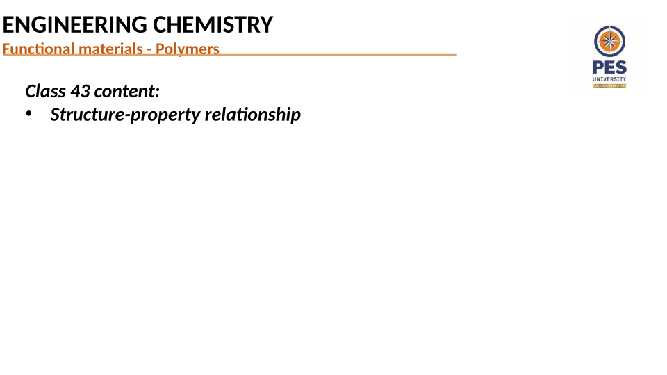
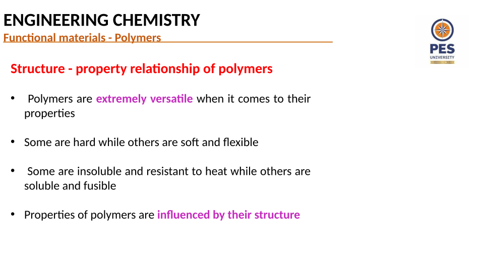
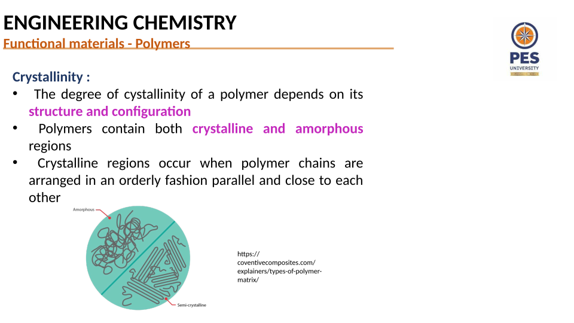
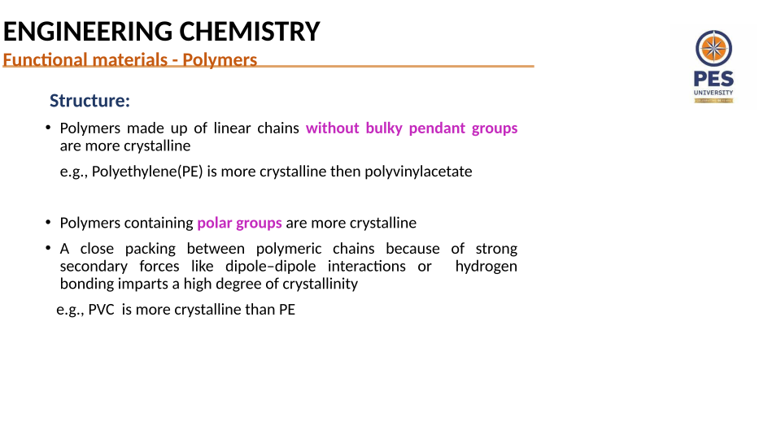
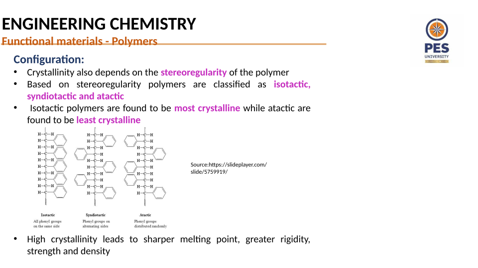

Important points and why
- Source slide page 1 (extracted text): ENGINEERING CHEMISTRY (UE26CY151 A,B) Department of Science and Humanities EV0000353 · EV0000354 · EV0000355
- Source slide page 2 (extracted text): ENGINEERING CHEMISTRY Functional materials - Polymers Class 43 content: Structure-property relationship EV0000356 · EV0000357 · EV0000358
- Source slide page 3 (extracted text): ENGINEERING CHEMISTRY Functional materials - Polymers Structure - property relationship of polymers Polymers are extremely versatile when it comes to their properties Some are hard while others are soft and flexible Some are insoluble and resistant to heat while others are soluble and fusible Properties of polymers are influenced by their structure EV0000359 · EV0000360 · EV0000361
- Source slide page 4 (extracted text): ENGINEERING CHEMISTRY Functional materials - Polymers Crystallinity : The degree of cystallinity of a polymer depends on its structure and configuration Polymers contain both crystalline and amorphous regions Crystalline regions occur when polymer chains are arranged in an orderly fashion parallel and close to each other [Image text, OCR] Amorphous LU https://coventivecomposites.com/explainers/types-of-polymer-matrix/ EV0000362 · EV0000363 · EV0000364
- Source slide page 5 (extracted text): ENGINEERING CHEMISTRY Functional materials - Polymers Structure: Polymers made up of linear chains without bulky pendant groups are more crystalline e.g., Polyethylene(PE) is more crystalline then polyvinylacetate Polymers containing polar groups are more crystalline A close packing between polymeric chains because of strong secondary forces like dipole–dipole interactions or hydrogen bonding imparts a high degree of crystallinity e.g., PVC is more crystalline than PE EV0000365 · EV0000366 · EV0000367
- Source slide page 6 (extracted text): ENGINEERING CHEMISTRY Functional materials - Polymers Configuration: Crystallinity also depends on the stereoregularity of the polymer Based on stereoregularity polymers are classified as isotactic, syndiotactic and atactic Isotactic polymers are found to be most crystalline while atactic are found to be least crystalline High crystallinity leads to sharper melting point, greater rigidity, strength and density [Image text, OCR] Polymer Structure V STEREOCHEMISTRY (Tacticity) +CH-CH+n Inthe previous picture you seeallthe phenyl groups arelocated onthe same sideofthe polymer chain.But they don't have to be this way.To illustrate let's look ata chain of polystyrene from above.You can see that thependant phenyl groups canbe either on the right or left side of the chain. Polystyrene! H H H- H H H H H H H H- H- H H H H H H H H H- H H- H H H H H H H H H H H Isotactic Syndiotactic Atactic All phenyl groups Phenyl groups on Phenyl groups on thesame side altemating sides distributedrandomly Source:https://slideplayer.com/slide/5759919/ EV0000368 · EV0000369 · EV0000370
- Source slide page 7 (extracted text): ENGINEERING CHEMISTRY Functional materials - Polymers Tensile strength: The amount of stress a polymer can take before undergoing permanent deformation Tensile strength depends on : Molecular mass - low molecular mass polymers are soft and gummy, high molecular mass polymers are tough and heat resistant By increasing molecular mass the tensile strength increases to a certain extent and then becomes constant Melt viscosity initially shows gradual increase then increases steeply with high molecular weight [Image text, OCR] Commercial polymers Tensile and mpact strength Viscosity 10,000 10,000,000 Molecularweight, degree of polymerization Source:https://polymerinnovationblog.com/polymer-composites-part-2-introduction-polymer-resins/ EV0000371 · EV0000372 · EV0000373
- Source slide page 8 (extracted text): ENGINEERING CHEMISTRY Functional materials - Polymers Tensile strength increases when polymer has polar groups Force of attraction between chains prevents polymer chains from slipping against each other e.g., PVC, Nylon Cross linking in a polymer also increases its tensile strength EV0000374 · EV0000375 · EV0000376
- Source slide page 9 (extracted text): ENGINEERING CHEMISTRY Functional materials - Polymers Elasticity : The property of a polymer by which it deforms on applying force and regains original shape on release of force is called elasticity Elastomers have long coiled and entangled chains which straighten and orient themselves on stretching. When stress is removed they go back to coiled form For a polymer to show elasticity the individual chains should not break on prolonged stretching [Image text, OCR] ELASTOMERS Elastomer is defined as a long chain polymer which under stress undergoes elongation by several times and regains its original shape when the stress is fully released Stretched Returnedto randomization Source:https://slideplayer.com/slide/8755303/ EV0000377 · EV0000378 · EV0000379
- Source slide page 10 (extracted text): ENGINEERING CHEMISTRY Functional materials - Polymers Presence of polar groups in the polymer chain results in strong secondary force of attraction between the chains making them stiff and inflexible Non polar groups have weak van der Waal’s attraction between them and hence they are more elastic Presence of bulky, aromatic and cyclic groups in the polymer decreases the elasticity of the polymer EV0000380 · EV0000381 · EV0000382
- Source slide page 11 (extracted text): ENGINEERING CHEMISTRY Functional materials - Polymers In elastic materials such as natural rubber, elasticity can be improved by introducing cross linking at suitable molecular positions like in vulcanisation In non-elastic materials, elasticity is achieved by using plasticisers , for example (Ph3PO4), which enter between the polymer chains and make a hard polymer more flexible Source:https://revision4gcses.wordpress.com/science/chemistry-2/polymers/ Source:https://www.diva-portal.org/smash/get/diva2:1312811/FULLTEXT01.pdf EV0000383 · EV0000384 · EV0000385
- Source slide page 12 (extracted text): ENGINEERING CHEMISTRY Functional materials - Polymers Chemical resistance: Resistance to swell, dissolve and get degraded in the presence of a solvent or chemical It depends on the chemical nature of monomeric units and their molecular arrangement Presence of polar and non-polar groups: Like dissolves like - A polymer is more soluble in a solvent of similar chemical structure Polymers having polar groups (–OH or –COOH groups) are usually attacked or dissolved by polar liquids such as water or alcohols. (e.g. PVA dissolves in water) Polymers with non-polar groups such as –CH3 and –C6H5 are not easily attacked by polar solvents but they easily swell and sometimes dissolve in non-polar solvents such as petrol, benzene and carbon tetrachloride EV0000386 · EV0000387 · EV0000388
- Source slide page 13 (extracted text): ENGINEERING CHEMISTRY Functional materials - Polymers Residual unsaturation leads to oxidative degradation: polymers with residual double bonds get attacked and degraded in air and UV light e.g.,natural rubber Source:https://www.embibe.com/study/natural-rubber-vulcanization-of-natural-rubber-concept?entity_code=KTBP50 Packing: Dense packing does not allow the solvent to penetrate between the layers hence resistance increases, for example Teflon Molecular mass: For a given polymer, the swelling character decreases with the increase in the molecular mass Degree of cross linking: Greater the degree of cross linking lesser is the solubility Source:https://pslc.ws/macrog/ptfe.htm EV0000389 · EV0000390 · EV0000391
- Source slide page 14 (extracted text): ENGINEERING CHEMISTRY Functional materials - Polymers Plastic deformation : Property of a polymer by which on application of heat it becomes soft and flexible and on cooling it becomes hard and brittle is called plasticity or plastic deformation Based on their response to heat two kinds of polymers are: Thermoplastic - A thermoplastic polymer is one which softens on heating and becomes hard on cooling. It can be remoulded into new shapes, e.g., Polyethylene, polypropylene, polystyrene Thermosetting - A thermosetting polymer becomes hard on heating. It cannot be remoulded, its structure instead undergoes a total degradation on heating, e.g.,Bakelite, Aniline aldehyde resin, urea formaldehyde resin EV0000392 · EV0000393 · EV0000394
- Source slide page 15 (extracted text): ENGINEERING CHEMISTRY Functional materials - Polymers The reason for the difference in the thermal behaviour is: Thermoplastics have relatively weak forces of attraction like van der Waals forces, dipole-dipole attraction or H-bonding between the chains, which are overcome when the material is heated Thermosetting plastics have the cross-linking between the chains is by strong covalent bonds cannot be broken easily. On strong heating will result in charring and degradation [Image text, OCR] hermoplastic temoseting degracaton Source:http://chemistry2.csudh.edu/rpendarvis/Polymer.html EV0000395 · EV0000396 · EV0000397
- Source slide page 16 (extracted text): THANK YOU Department of Science and Humanities EV0000398 · EV0000399 · EV0000400
7Synthesis and properties of epoxy resin
This lesson is indexed from the source video titled Synthesis and properties of epoxy resin. Its complete timestamped transcript is preserved below in segment order. The original video path and content hash are recorded in datasets/lecture-corpus.json. Transcript text is source wording; it has not been silently corrected or rewritten. A candidate slide deck is grouped here according to the current matching score; the exact path and page locators are listed in the source evidence. EV0000098 · EV0000099
Graphs and diagrams
Important points and why
- Source slide page 1 (extracted text): ENGINEERING CHEMISTRY (UE26CY151 A,B) Department of Science and Humanities EV0000419 · EV0000420 · EV0000421
- Source slide page 2 (extracted text): ENGINEERING CHEMISTRY Functional materials - Polymers Class 45 content: Synthesis and properties of epoxy resin EV0000422 · EV0000423 · EV0000424
- Source slide page 3 (extracted text): ENGINEERING CHEMISTRY Functional materials - Polymers Adhesives Substances used to bind two or more materials firmly by surface attachment due to penetration of adhesive into material and solidification leading to interfacial locking Natural adhesives- gum, glue, starch Synthetic adhesives - PF, UF, epoxides Adhesives are low molecular weight polymers which are dissolved in solvent. A curing agent is added which causes cross-linking to happen and a thermoset solid polymer is formed Preferred for bonding of selected group of materials PF - rubber UF-Wood Epoxy resin – metal, wood, glass, concrete, leather EV0000425 · EV0000426 · EV0000427
- Source slide page 4 (extracted text): ENGINEERING CHEMISTRY Functional materials - Polymers Source: https://www.oatext.com/bisphenol-a-in-odontology-recent-data.php#gsc.tab=0 Epoxy resins: They contain the epoxy group, which is a 3 membered ring of an O atom bonded to carbon atoms Commercially epoxy resins are known as Araldite or Epon Synthesis : Epoxy resins can be obtained by the condensation reaction between bisphenol A and epichlorohydrin EV0000428 · EV0000429 · EV0000430
- Source slide page 5 (extracted text): ENGINEERING CHEMISTRY Functional materials-Polymers Synthesis of epoxy resin: [Image text, OCR] HO OH NaOH CI-CH-CH- -CH Epichlorohydrin Bisphenol A CH; OH CH CH -CH O-CH CH CH, CH, O Source:https://link.springer.com/chapter/10.1007/978-3-662-54959-9_7 Excess of epichlorohydrin is used so that the end groups are epoxy groups which are very active When curing agents are added immediately three – dimensional crosslinked structure is formed Curing agents are diamines, dicarboxylic acids or acid anhydrides EV0000431 · EV0000432 · EV0000433
- Source slide page 6 (extracted text): ENGINEERING CHEMISTRY Functional materials - Polymers Properties : Excellent adhesion Excellent resistance to water, acid, alkali and other corrosive chemicals High mechanical strength Absorb less moisture Good insulation properties EV0000434 · EV0000435 · EV0000436
- Source slide page 7 (extracted text): ENGINEERING CHEMISTRY Functional materials - Polymers Applications: Cured epoxies are frequently used in aerospace and defence They can used to bind glass, metal, leather, wood, ceramic etc Coated on floor to give it an antiskid layer Laminating materials Crease and shrinkage resistance fabrics EV0000437 · EV0000438 · EV0000439
- Source slide page 8 (extracted text): THANK YOU Department of Science and Humanities EV0000440 · EV0000441 · EV0000442
8Polymer composites - synthesis, properties of Kevlar and Carbon fibers (Part 1)
This lesson is indexed from the source video titled Polymer composites - synthesis, properties of Kevlar and Carbon fibers (Part 1). Its complete timestamped transcript is preserved below in segment order. The original video path and content hash are recorded in datasets/lecture-corpus.json. Transcript text is source wording; it has not been silently corrected or rewritten. A candidate slide deck is grouped here according to the current matching score; the exact path and page locators are listed in the source evidence. EV0000110 · EV0000111
Graphs and diagrams
Important points and why
- Source slide page 1 (extracted text): ENGINEERING CHEMISTRY (UE26CY151 A,B) Department of Science and Humanities EV0000443 · EV0000444 · EV0000445
- Source slide page 2 (extracted text): ENGINEERING CHEMISTRY Functional materials - Polymers Class 46 content: Polymer composites - synthesis, properties of Kevlar and Carbon fibers EV0000446 · EV0000447 · EV0000448
- Source slide page 3 (extracted text): ENGINEERING CHEMISTRY Functional materials - Polymers Polymer composites Materials made from two or more constituent materials and their properties are not attainable by any individual component alone are called composites When one or more of the components are polymers they are called polymer composites Two components are fibre and matrix matrix: polyester, epoxy, phenolic, silicone, melamine, vinyl derivatives fibers: glass fiber, boron filaments, carbon/graphite fibers, aramid (aromatic polyamide), aluminum fiber Polymer composite are produced by suitably bonding a fiber material with a polymer resin matrix and curing the same under pressure and heat Composites have high strength / unit weight EV0000449 · EV0000450 · EV0000451
- Source slide page 4 (extracted text): ENGINEERING CHEMISTRY Functional materials - Polymers Kevlar An aramid fibre - Aromatic polyamide Chemical name is poly-paraphenyleneterepthalamide Synthesis : Condensation of 1,4 phenylene diamine and 1,4 benzenedicarbonyl chloride Source:https://mccord.cm.utexas.edu/chembook/page-nonav.php?chnum=8§=6 EV0000452 · EV0000453 · EV0000454
- Source slide page 5 (extracted text): ENGINEERING CHEMISTRY Functional materials - Polymers Kevlar is very strong material – about 5 times stronger than steel High strength is due to: Many inter chain hydrogen bonds. The inter-molecular hydrogen bonds formed between the carbonyl groups and NH centers Additional strength is derived from aromatic stacking interactions between adjacent strands [Image text, OCR] Figure3.Structureofpoly(p-phenyleneterephthalamide) Source:https://www.scielo.br/scielo.php?script=sci_arttext&pid=S1516-14392014000500012 Source:https://www.nanowerk.com/nanotechnology-news2/newsid=52521.php EV0000455 · EV0000456 · EV0000457
- Source slide page 6 (extracted text): ENGINEERING CHEMISTRY Functional materials - Polymers Properties : High tensile strength, high modulus of elasticity High strength to weight ratio High chemical inertness Low co-efficient of thermal expansion Flame resistance High impact and cut resistance Textile processibility EV0000458 · EV0000459 · EV0000460
- Source slide page 7 (extracted text): ENGINEERING CHEMISTRY Functional materials - Polymers Applications : Well known component of personal armor such as combat helmets, ballistic face mask and ballistic vest, bullet proof vest Gloves, sleeves, jackets and other articles Inner lining in bicycle tires Light weight boat hulls, aircraft panels, race cars, bridge structure, Roto blades, tennis, cricket bats, and hockey sticks Fiber is used in woven rope and in cable As reinforcement in car tires, in car brakes In the strings of archery bows Disadvantages: Special cutting scissors and drilling machines are required The fibre is hygroscopic- they absorb moisture EV0000461 · EV0000462 · EV0000463
- Source slide page 8 (extracted text): ENGINEERING CHEMISTRY Functional materials - Polymers Reinforced Kevlar composites Kevlar composite is made by combining Kevlar fibre with epoxy resin Applications : monocoque bodies of F1 racing cars, helicopter rotor blades, kayaks, tennis and squash rackets EV0000464 · EV0000465 · EV0000466
- Source slide page 9 (extracted text): ENGINEERING CHEMISTRY Functional materials - Polymers Carbon fibres Fibers about 5–10 micrometers in diameter and composed mostly of carbon atoms Several thousand Carbon fibres are twisted together to form a yarn which is used as such or woven into fabric [Image text, OCR] Carbon fibre 10m Human hair Source:https://www.racecar-engineering.com/tech-explained/how-are-composites-used-in-motorsport/attachment/composites-in-motorsport-carbon-fibre-vs-human-hair/ EV0000467 · EV0000468 · EV0000469
- Source slide page 10 (extracted text): ENGINEERING CHEMISTRY Functional materials - Polymers Synthesis: Each Carbon filament is produced from a precursor polymer like polyacrylonitrile(PAN), pitch blende etc. Synthesis of C fibre from polyacrylonitrile (PAN) polyacrylonitrile (PAN) is obtained from polymerisation of acrylonitrile [Image text, OCR] H C三N free radical H HH H vinylpolymerization +C-Ctn C=C H C=N H C=N acrylonitrile polyacrylonitrile Source:https://slideplayer.com/slide/8375801/ EV0000470 · EV0000471 · EV0000472
- Source slide page 11 (extracted text): ENGINEERING CHEMISTRY Functional materials - Polymers Steps involved in the synthesis of Carbon fibre [Image text, OCR] Polymerization Acrylonitrile Poly-acrylonitrile (PAN) Heat treatmest H2 Heat treatment 700°C Heat treatment 400-600°C +H Heat treatment + N 600-1300°C Source:https://link.springer.com/article/10.1007/s42114-018-0072-z Polymerisation Cyclisation at low temperature Oxidative treatment at high temperature Graphitisation at 2000oC in an inert atmosphere EV0000473 · EV0000474 · EV0000475
- Source slide page 12 (extracted text): ENGINEERING CHEMISTRY Functional materials - Polymers Structure: Consists of sheets of carbon arranged in a regular pattern like graphite but the sheets interlock In turbostratic carbon fibre the sheets of carbon fibre are haphazardly folded or crumpled together Source:https://www.researchgate.net/figure/Schematic-representation-of-chemical-structure-of-lignin-cellulose-PAN-and-mesophase_fig4_302483625 EV0000476 · EV0000477 · EV0000478
- Source slide page 13 (extracted text): ENGINEERING CHEMISTRY Functional materials - Polymers Properties : High strength to weight ratio Corrosion resistant and chemically stable Good Tensile Strength Non-poisonous, Biologically Inert Low Coefficient of Thermal Expansion EV0000479 · EV0000480 · EV0000481
- Source slide page 14 (extracted text): ENGINEERING CHEMISTRY Functional materials - Polymers Applications : Aerospace, road and marine transport, sporting goods Medical applications in prostheses, surgery and x-ray equipment, implants, tendon/ligament repair Automobile hoods, novel tooling, casings and bases for electronic equipments, EMI and RF shielding, brushes Audio equipment, loudspeakers for Hi-fi equipment, pickup arms, robot arms EV0000482 · EV0000483 · EV0000484
- Source slide page 15 (extracted text): ENGINEERING CHEMISTRY Functional materials - Polymers Disadvantages: Process of producing Carbon fibre is expensive due to large energy expenditure Volatile by products are formed which include HCN EV0000485 · EV0000486 · EV0000487
- Source slide page 16 (extracted text): ENGINEERING CHEMISTRY Functional materials - Polymers Carbon fibre reinforced polymer(CFRP) The composite is made by reinforcing carbon fibre with epoxy resin matrix Properties: light weight high strength to weight ratio low coefficient of thermal expansion high electrical conductivity EV0000488 · EV0000489 · EV0000490
- Source slide page 17 (extracted text): ENGINEERING CHEMISTRY Functional materials - Polymers [Image text, OCR] TextileandPaperIndustry Acoustics AerospaceandAircraftIndustry Application of polymerbased carbon fiber composites Portablepowersources AutomotiveParts EnergyProduction Civil Engineering SportsEquipment Source:https://link.springer.com/article/10.1007/s42114-018-0072-z EV0000491 · EV0000492 · EV0000493
- Source slide page 18 (extracted text): THANK YOU Department of Science and Humanities EV0000494 · EV0000495 · EV0000496
9Polymer composites - synthesis, properties of Kevlar and Carbon fibers (Part 2))
This lesson is indexed from the source video titled Polymer composites - synthesis, properties of Kevlar and Carbon fibers (Part 2)). Its complete timestamped transcript is preserved below in segment order. The original video path and content hash are recorded in datasets/lecture-corpus.json. Transcript text is source wording; it has not been silently corrected or rewritten. A candidate slide deck is grouped here according to the current matching score; the exact path and page locators are listed in the source evidence. EV0000122 · EV0000123
10Average molecular weight of polymers - number average, weight average, and viscosity average molecular weight; numerical problems based on the same
This lesson is indexed from the source video titled Average molecular weight of polymers - number average, weight average, and viscosity average molecular weight; numerical problems based on the same. Its complete timestamped transcript is preserved below in segment order. The original video path and content hash are recorded in datasets/lecture-corpus.json. Transcript text is source wording; it has not been silently corrected or rewritten. A candidate slide deck is grouped here according to the current matching score; the exact path and page locators are listed in the source evidence. EV0000134 · EV0000135
Graphs and diagrams
Important points and why
- Source slide page 1 (extracted text): ENGINEERING CHEMISTRY (UE26CY151 A,B) Department of Science and Humanities EV0000497 · EV0000498 · EV0000499
- Source slide page 2 (extracted text): ENGINEERING CHEMISTRY Functional materials - Polymers Class 47 content: Average molecular weight of polymers - number average, weight average, and viscosity average molecular weight; numerical problems EV0000500 · EV0000501 · EV0000502
- Source slide page 3 (extracted text): ENGINEERING CHEMISTRY Functional materials - Polymers Molecular weight of Polymers Polymers are a mix of chains of different lengths Weight of polymers is expressed as an average molecular weight The molecular weight is an important characteristic of a polymer sample as several properties of polymers depend on the molecular weight The entire range of mechanical properties like stress-strain, impact, fracture, fatigue, creep, stress relaxation and cracking are influenced by average molecular weight and molecular weight distribution EV0000503 · EV0000504 · EV0000505
- Source slide page 4 (extracted text): ENGINEERING CHEMISTRY Functional materials - Polymers Number average molecular weight Weight average molecular weight Average molecular weight Viscosity average molecular weight EV0000506 · EV0000507 · EV0000508
- Source slide page 5 (extracted text): ENGINEERING CHEMISTRY Functional materials - Polymers Number average molecular weight, Obtained by dividing the total weight of the dispersed material with the total number of polymer units present where n1, n2, n3 …. are number of polymer units having molecular weights M1, M2, M3,…. respectively where ni is the number of polymer units of molecular mass Mi It depends only on number of polymer units and not their size Colligative properties like osmotic pressure, elevation in boiling point or depression in melting point is used to determine number average molecular weight EV0000509 · EV0000510 · EV0000511
- Source slide page 6 (extracted text): ENGINEERING CHEMISTRY Functional materials - Polymers Weight average molecular weight, It gives representation to various molecular species in proportion to their masses in the given material In the averaging process, the molecular weight of each individual species is multiplied by its mass where m1, m2, m3 …. are masses of polymer units having molecular weights M1, M2, M3 respectively EV0000512 · EV0000513 · EV0000514
- Source slide page 7 (extracted text): ENGINEERING CHEMISTRY Functional materials - Polymers if n1, n2, n3 …. are number of polymer units having molecular weights M1, M2, M3 respectively then m1 = n1M1, m2 = n2 M2 …. Weight average molecular weight can be written as It depends on size of the polymer units Properties which depend on size like sedimentation velocity or light scattering are used to determine weight average molecular weight EV0000515 · EV0000516 · EV0000517
- Source slide page 8 (extracted text): ENGINEERING CHEMISTRY Functional materials - Polymers The ratio is called the polydispersity index (PDI) It is a measure for the broadness of a molecular weight distribution of a polymer, that is, the larger the polydispersity index, the broader the molecular weight distribution A monodisperse polymer where all the chain lengths are equal has PDI =1 PDI > 1, shows that the polymeric sample is less homogeneous and polydisperse [Image text, OCR] 8 888 8： Source:http://employees.csbsju.edu/cschaller/Advanced/Polymers/CPmw.html EV0000518 · EV0000519 · EV0000520
- Source slide page 9 (extracted text): ENGINEERING CHEMISTRY Functional materials - Polymers Viscosity average molecular weight, a is the Mark- Houwink parameter its value depends on the polymer- solvent system at a particular temperature and is 0.5≤ a ≤ 0.9 Viscosity average molecular weight is closer to weight average molecular weight as larger molecules contribute more to viscosity EV0000521 · EV0000522 · EV0000523
- Source slide page 10 (extracted text): ENGINEERING CHEMISTRY Functional materials - Polymers Molecular weight distribution curve [Image text, OCR] Molecularweight,M Source:https://link.springer.com/chapter/10.1007/978-3-642-38730-2_2 > > EV0000524 · EV0000525 · EV0000526
- Source slide page 11 (extracted text): ENGINEERING CHEMISTRY Functional materials - Polymers Numerical Problems A polymer sample consists of equal number of molecules 50 with molecular masses 10,000 g/mol and 50 with molecular mass 30,000 g/mol. Calculate the number and weight average molecular mass of the sample. = 20,000g/mol = 25,000g/mol EV0000527 · EV0000528 · EV0000529
- Source slide page 12 (extracted text): ENGINEERING CHEMISTRY Functional materials - Polymers 2. A polymer sample contains three distinct fractions: 20% of the molecules have a molecular mass of 20,000 g/mol, 50% of the molecules have a molecular mass of 40,000 g/mol and 30% of the molecules have a molecular mass of 60,000g/mol. Calculate the number average, mass average and the Polydispersity Index (PDI) of the sample = 42,000g/mol = 46,666 g/mol PDI = 1.11 EV0000530 · EV0000531 · EV0000532
- Source slide page 13 (extracted text): ENGINEERING CHEMISTRY Functional materials - Polymers 2. A polymer sample has the following fractions: 10 molecules have a molecular mass of 5000 g/mol, 20 molecules have a molecular mass of 7500 g/mol, 20 molecules have a molecular mass of 20,000, 20 molecules with a molecular mass of 10,000 g/mol, 5 molecules with molecular mass of 25,000 g/mol 25 molecules have a molecular mass of 15,000g/mol. Calculate the viscosity average molecular mass of the polymeric sample if the Mark-Houswink coefficient is 0.64 =13,809 g/mol EV0000533 · EV0000534 · EV0000535
- Source slide page 14 (extracted text): THANK YOU Department of Science and Humanities EV0000536 · EV0000537 · EV0000538
11Conducting polymers - examples, types of doping
This lesson is indexed from the source video titled Conducting polymers - examples, types of doping. Its complete timestamped transcript is preserved below in segment order. The original video path and content hash are recorded in datasets/lecture-corpus.json. Transcript text is source wording; it has not been silently corrected or rewritten. A candidate slide deck is grouped here according to the current matching score; the exact path and page locators are listed in the source evidence. EV0000146 · EV0000147
Graphs and diagrams
Important points and why
- Source slide page 1 (extracted text): ENGINEERING CHEMISTRY (UE26CY151 A,B) Department of Science and Humanities EV0000539 · EV0000540 · EV0000541
- Source slide page 2 (extracted text): ENGINEERING CHEMISTRY Functional materials - Polymers Class 48 content: Conducting polymers - examples, types of doping EV0000542 · EV0000543 · EV0000544
- Source slide page 3 (extracted text): ENGINEERING CHEMISTRY Functional materials - Polymers Conducting polymers Polymers are generally insulators because the organic molecules of which they are composed have no free electrons to carry current An organic polymer with highly delocalized pi-electron system, having electrical conductance of the order of an electrical conductor is called a conducting polymer Also known as synthetic metals EV0000545 · EV0000546 · EV0000547
- Source slide page 4 (extracted text): ENGINEERING CHEMISTRY Functional materials - Polymers Development : 1977 - Heeger, Macdiarmid & Shirakawa demonstrated conductivity of polyacetylene can be increased 13 times by doping with electron acceptors and donors Norman et. al - achieved conductance of polyacetylene equal to copper Doping with less than 10% of chemical species results in dramatic changes in electrical, electronic, magnetic and optical properties of polymers – hence it is a new class of polymers 2000 - Heeger, Macdiarmid & Shirakawa won the Nobel prize for Chemistry EV0000548 · EV0000549 · EV0000550
- Source slide page 5 (extracted text): ENGINEERING CHEMISTRY Functional materials - Polymers Examples of polymers which conduct after doping [Image text, OCR] Polyacetylene Polyphenylene Polyprrrole Polythiophene Polyaniline Poly(phenyl ene -vinylene) Source:https://www.researchgate.net/figure/3Molecular-structure-of-some-typical-conducting-polymers_fig2_304023062 EV0000551 · EV0000552 · EV0000553
- Source slide page 6 (extracted text): ENGINEERING CHEMISTRY Functional materials - Polymers Conducting polymers conduct electricity due to delocalization of π electrons An organic polymer can be converted into conducting polymer if it has : • linear structure • extensive conjugation in its polymeric back bone POLYACETYLENE POLYPHENYLENE Source:https://www.researchgate.net/figure/Some-Examples-for-Conducting-Polymers_fig4_269993677 EV0000554 · EV0000555 · EV0000556
- Source slide page 7 (extracted text): ENGINEERING CHEMISTRY Functional materials - Polymers These materials in pure form are not conductors but on doping (Introduction of charged chemical species) conduction increases Types of Doping Oxidative doping Reductive doping Proton doping EV0000557 · EV0000558 · EV0000559
- Source slide page 8 (extracted text): ENGINEERING CHEMISTRY Functional materials - Polymers Oxidative doping (p-doping) In this process, pi-backbone of a polymer is partially oxidized using a suitable oxidizing agent This creates positively charged sites on the polymer backbone which are the current carriers for conduction The oxidizing agents used are Iodine in CCl4, HBF4 etc. EV0000560 · EV0000561 · EV0000562
- Source slide page 9 (extracted text): ENGINEERING CHEMISTRY Functional materials - Polymers Reductive doping (n-doping) : In this process, pi-backbone of a polymer is partially reduced using a suitable reducing agent This creates negatively charged sites on the polymer backbone which are the current carriers for conduction The reducing agent used is sodium naphthalide in THF EV0000563 · EV0000564 · EV0000565
- Source slide page 10 (extracted text): ENGINEERING CHEMISTRY Functional materials - Polymers Protonic acid doping : In this technique, current carrying charged species (+ve and –ve) are created by using a protonic acid as dopant Doping of polyaniline is a typical example of this type of doping In polyaniline, current carrying charged species (+ve and –ve) are created by protonation of imine nitrogen EV0000566 · EV0000567 · EV0000568
- Source slide page 11 (extracted text): ENGINEERING CHEMISTRY Functional materials - Polymers Partial oxidation NH4S2O8 Source:https://www.indiamart.com/proddetail/polyaniline-pani-semi-flexible-rod-polymer-leucoemeraldine-emeraldine-21303398497.html Protonation HCl (1M) Cl- Cl- EV0000569 · EV0000570 · EV0000571
- Source slide page 12 (extracted text): ENGINEERING CHEMISTRY Functional materials - Polymers Applications : As electrode material for commercial rechargeable batteries, for higher power to weight ratio As conductive tracks on printed circuit boards As sensors-humidity sensor, gas sensor, radiation sensor, biosensor In electrochromic display windows In light emitting diodes EV0000572 · EV0000573 · EV0000574
- Source slide page 13 (extracted text): THANK YOU Department of Science and Humanities EV0000575 · EV0000576 · EV0000577
12Organic light-emitting diodes (OLEDs): Construction, working principle, and light emission mechanism
This lesson is indexed from the source video titled Organic light-emitting diodes (OLEDs): Construction, working principle, and light emission mechanism. Its complete timestamped transcript is preserved below in segment order. The original video path and content hash are recorded in datasets/lecture-corpus.json. Transcript text is source wording; it has not been silently corrected or rewritten. A candidate slide deck is grouped here according to the current matching score; the exact path and page locators are listed in the source evidence. EV0000158 · EV0000159
Graphs and diagrams
Important points and why
- Source slide page 1 (extracted text): ENGINEERING CHEMISTRY (UE26CY151 A,B) Department of Science and Humanities EV0000578 · EV0000579 · EV0000580
- Source slide page 2 (extracted text): ENGINEERING CHEMISTRY Functional materials - Polymers Class 49 content: Organic light-emitting diodes (OLEDs): Construction, working principle, and light emission mechanism EV0000581 · EV0000582 · EV0000583
- Source slide page 3 (extracted text): ENGINEERING CHEMISTRY Functional materials - Polymers Light Emitting Diodes (LEDs) [Image text, OCR] Light P-Type N-Type Semiconductor Semiconductor Source:https://www.rohm.com/electronics-basics/leds/what-are-leds Consists of a n - type and p-type semiconductor forming a p-n junction. Material like Gallium Arsenide(GaAs) is used . When voltage is applied across the junction , the electrons and holes combine in the depletion layer giving out photons EV0000584 · EV0000585 · EV0000586
- Source slide page 4 (extracted text): ENGINEERING CHEMISTRY Functional materials - Polymers Organic Light Emitting Diodes (OLEDs) Work in a similar way to conventional diodes and LEDs, but instead of using layers of n-type and p-type semiconductors, they use organic molecules OLEDs have an emissive electroluminescent layer which is a film of organic compound that emits light in response to an electric current Also known as organic EL (electroluminescent) diodes Solid-state devices made of thin films of organic molecules that emit light on application of electricity EV0000587 · EV0000588 · EV0000589
- Source slide page 5 (extracted text): ENGINEERING CHEMISTRY Functional materials - Polymers First OLED device was made by Eastman Kodak in the 1980’s Emerging technology for displays Displays which are flexible, very thin, light weight Less power consumption than conventional LEDs and LCDs Offer high contrast, brighter displays with wider viewing angle Source:https://www.techspot.com/news/48578-lg-preparing-flexible-oled-display-plant-for-production.html Source:https://www.geeky-gadgets.com/sonys-rollable-oled-display-more-details-26-05-2010/ EV0000590 · EV0000591 · EV0000592
- Source slide page 6 (extracted text): ENGINEERING CHEMISTRY Functional materials - Polymers Construction: Substrate: glass for support Anode : transparent usually made of Indium Tin Oxide(ITO) Conductive layer : Organic molecules or polymers – transports holes from the anode; polyaniline Emissive layer : organic molecules or polymers- transports electrons from the cathode, recombination of holes and electrons takes place here and light is emitted; polyfluorene, Alq3 Cathode : injects electrons ; metals like Mg [Image text, OCR] OLED Structure Cathode Emissive Layer(Organic Molecules or Polymers) Conductive Layer(Organic Molecules or Polymers) Anode Substrate 02005 HowStuffWorks Source:https://electronics.howstuffworks.com/oled1.htm EV0000593 · EV0000594 · EV0000595
- Source slide page 7 (extracted text): ENGINEERING CHEMISTRY Functional materials - Polymers Working: A voltage is applied across the anode and cathode of the OLED Electrons flows from cathode to anode through the organic layers Electrons are transported to the emissive layer from cathode Holes are transported to the conductive layer from anode Electrons combine with the holes thereby emitting light Recombination happens in the emissive layer Colour of light depends on the organic molecules used and intensity depends on current density [Image text, OCR] OLED Creating Light 2005HowSturtWorks ATL CATHODE CATHODE ANODE Conductive Emissive Layer Layer Electrical current flows from the cathode to the anode through the organic layers,giving electrons to the emissive layer andremoving electrons from the conductive layer. Electron Removing electrons from the conductive layer leaves holes that need to be filled with the electrons in the emissive layer. The holes jump to the emissive layerand recombine with the electrons.As the electrons drop into the holes,they release their extra energy as light. Light Photon Source:https://www.researchgate.net/figure/Basic-OLED-working_fig2_308332988 EV0000596 · EV0000597 · EV0000598
- Source slide page 8 (extracted text): ENGINEERING CHEMISTRY Functional materials - Polymers [Image text, OCR] Hole Electron Injectlon Layer Hole Transport + Cathode Layer Hole (HTL) EML ++ Electron Compostion transport Dopant layer Electron Anode Host (ETL) Injectlon layer Basic Design Emissive layer: Light is produced in the emitting layer. Photoluminescent (Fluorescent and phosphorescent) organic materials are used as the emitters The molecules are electrically conductive as a result of delocalization of pi-electrons caused by conjugation. [Image text, OCR] OLED Dopants 450nm 500nm 550nm 600nm DCM Coumarin545T TBP [D2849] [B4257] [T3053] Rubrene [T0561,T2233] DMQA Ir(piq)3 [D2687,D3227] [T2685] EV0000599 · EV0000600 · EV0000601
- Source slide page 9 (extracted text): ENGINEERING CHEMISTRY Functional materials - Polymers Bulk Molecules Emissive layer: These organic materials have electrical conductivity in the range of semiconductors. The concept of highest occupied and lowest unoccupied molecular orbitals (HOMO and LUMO) in molecules is analogous to the valence and conduction bands in bulk materials. We can choose the materials according to the band gap Blue-emitting materials have a larger band gap EV0000602 · EV0000603 · EV0000604
- Source slide page 10 (extracted text): ENGINEERING CHEMISTRY Functional materials - Polymers Why Multi-Layered Structure? Inorganic semiconductors have a higher conductivity than the organic materials, so a layered structure is not needed. Organic materials have a lower conductivity than the inorganic counterparts HOMOs and LUMOs of the materials in the layered structure act as small steps and guide the charge carriers to the emissive layer. The layered structure helps maintain a smoother carrier flow. [Image text, OCR] Hole Electron Injectlon Layer Hole Transport + Cathode Layer Hole (HTL) EML ++ Electron Compostion transport Dopant layer Electron Anode Host (ETL) Injectlon layer EV0000605 · EV0000606 · EV0000607
- Source slide page 11 (extracted text): ENGINEERING CHEMISTRY Functional materials - Polymers Advantages : The organic layers of an OLED are thinner, lighter and more flexible than the crystalline layers of LED or LCD. The organic layers are themselves emissive so no back light is required Consume much less power Easier to produce and can be made to larger sizes Have large fields of view; about 170 degrees High color contrast and faster response time EV0000608 · EV0000609 · EV0000610
- Source slide page 12 (extracted text): ENGINEERING CHEMISTRY Functional materials - Polymers Disadvantages: Have shorter life span Manufacturing process is expensive Water can easily damage them EV0000611 · EV0000612 · EV0000613
- Source slide page 13 (extracted text): ENGINEERING CHEMISTRY Functional materials - Polymers Applications: [Image text, OCR] applications Mobile phones AVplayers Mobile phoneswere the first Simple MP3players with small toadoptAMOLED displays characterdisplaysorA/V andis thelargestmarketfor players with large full-color OLEDs today. displays-manysuchdevices use OLEDpanels today. Digital cameras OLEDTVS Several compactandhigh- endcamerasuse AMOLED OLEDTVsaren'tavailableyet displays thatofferrich colors commercially-butsomehigh andhigh contrastand end small models are already brightness. shipping in small volumes. OLED lamps Other devices OLEDlampsare currently OLEDsarealsoused inwrist very expensive，but already watches,headsets,caraudio severalcompanies are systems,remote controllers, offering thesein the premium digitalphoto framesand lighting category. many otherkindsofdevices. 26May2014 23 Source:https://www.slideshare.net/ADRIJA_CHOWDHURY/performance-analysis-of-luminescent-materials-for-oled-applications EV0000614 · EV0000615 · EV0000616
- Source slide page 14 (extracted text): THANK YOU Department of Science and Humanities EV0000617 · EV0000618 · EV0000619
13Green chemistry: Introduction, twelve principles of green chemistry with examples
This lesson is indexed from the source video titled Green chemistry: Introduction, twelve principles of green chemistry with examples. Its complete timestamped transcript is preserved below in segment order. The original video path and content hash are recorded in datasets/lecture-corpus.json. Transcript text is source wording; it has not been silently corrected or rewritten. A candidate slide deck is grouped here according to the current matching score; the exact path and page locators are listed in the source evidence. EV0000174 · EV0000175
Graphs and diagrams
Important points and why
- Source slide page 1 (extracted text): ENGINEERING CHEMISTRY (UE26CY151 A,B) Department of Science and Humanities EV0000620 · EV0000621 · EV0000622
- Source slide page 2 (extracted text): ENGINEERING CHEMISTRY Green chemistry Class 50 content: Green chemistry: Introduction, twelve principles of green chemistry with examples EV0000623 · EV0000624 · EV0000625
- Source slide page 3 (extracted text): ENGINEERING CHEMISTRY Green chemistry Definition ‘Green Chemistry’ is the utilization of a set of principles that reduces or eliminates the use or generation of hazardous substances in the design, manufacture and application of products -Paul T. Anastas and John C. Warner EV0000626 · EV0000627 · EV0000628
- Source slide page 4 (extracted text): ENGINEERING CHEMISTRY Green chemistry Green Chemistry focuses on : Reduction, recycling and/or eliminating toxic substances Finding creative, alternative routes to minimize impact on the environment More eco-friendly green alternative to conventional chemistry practices Provides sustainable development, sustainable business and sustainable living practices EV0000629 · EV0000630 · EV0000631
- Source slide page 5 (extracted text): ENGINEERING CHEMISTRY Green chemistry Twelve Principles of Green Chemistry Prevent Waste | Use of renewable feedstocks Atom Economy | Reduce Derivatives Safer Synthesis | Catalysis Safe Products | Design for Degradation Design Benign Chemicals | Pollution prevention Design for Energy Efficiency | Accident Prevention EV0000632 · EV0000633 · EV0000634
- Source slide page 6 (extracted text): ENGINEERING CHEMISTRY Green chemistry Prevent Waste : Synthesis only targeted product with minimum or no by products/waste If waste is produced , it involves cost and time to treat and safely dispose it, as a result production cost increases EV0000635 · EV0000636 · EV0000637
- Source slide page 7 (extracted text): ENGINEERING CHEMISTRY Green chemistry Atom Economy : Synthetic methods should be designed to maximize the incorporation of all materials used into the final product The chemical processes should have maximum product yield Atom economy can be calculated using the relation % Atom Economy = (FW of atoms utilized/FW of all reactants) X 100 Atom Economy in a Substitution Reaction - moderate Atom Economy in Elimination Reactions - low Atom Economy in Addition Reactions -100% Atom Economy in Rearrangement Reactions -100% For a green synthesis atom economy must be maximum (100%) EV0000638 · EV0000639 · EV0000640
- Source slide page 8 (extracted text): ENGINEERING CHEMISTRY Green chemistry Safer Synthesis : The synthetic processes should be designed so as to minimize or prevent the production of hazardous substances Necessary safety precautions have to be taken while processing to protect human health and environment e.g., Polyurethane is manufactured conventionally using isocyanate and alcohol. However, isocyanate is produced using phosgene, a toxic gas The alternative method by green synthesis of polyurethane eliminates the use of phosgene and uses CO2 EV0000641 · EV0000642 · EV0000643
- Source slide page 9 (extracted text): ENGINEERING CHEMISTRY Green chemistry Safe Products : Chemical products should be designed to preserve efficacy of function while reducing toxicity Products should not have any side effects on the people using it and on the environment It is envisaged to produce the chemical products specially those being used in cosmetics, pharmaceuticals, etc. EV0000644 · EV0000645 · EV0000646
- Source slide page 10 (extracted text): ENGINEERING CHEMISTRY Green chemistry Design Benign Chemicals : Use safer solvents and reaction conditions Avoid using solvents, separation agents, or other auxiliary chemicals If these chemicals are necessary, use innocuous chemicals Chemical syntheses are assisted by solvent medium: recommended to use alternative solvents , greener in nature such as aqueous medium, liquid carbon-dioxide, ionic liquids(N-alkyl pyridinium cation with BF4- ) , or solvent free systems Avoid harmful solvents like chloroform, pyridine which are known to cause health hazard, are carcinogenic to human beings and animals or cause severe damage to environment EV0000647 · EV0000648 · EV0000649
- Source slide page 11 (extracted text): ENGINEERING CHEMISTRY Green chemistry Design for Energy efficiency : Chemical processes are to be designed in such a way that they are less energy intensive reactions occurring at mild conditions require less time to complete For this purpose it is worthwhile to utilize Bio-catalyst, homogeneous and heterogeneous catalyst which reduces the energy of activation Modern techniques such as solvent free synthesis, supercritical fluid systems, microwave irradiation, and ultrasound EV0000650 · EV0000651 · EV0000652
- Source slide page 12 (extracted text): ENGINEERING CHEMISTRY Green chemistry Use of renewable feedstock : Raw material or feedstock used as starting material should be renewable rather than depleting wherever technically and economically possible Use of renewable feedstock such as biomass and agricultural wastes are strongly recommended rather than using non-renewable resources such as coal, petroleum-based raw materials, etc. EV0000653 · EV0000654 · EV0000655
- Source slide page 13 (extracted text): ENGINEERING CHEMISTRY Green chemistry Reduce Derivatives : Avoid unnecessary derivatization temporary modification should be avoided whenever possible as they generate waste the atom efficiency is reduced as the protective group is not incorporated in the final product e.g. blocking group, protection/ deprotection EV0000656 · EV0000657 · EV0000658
- Source slide page 14 (extracted text): ENGINEERING CHEMISTRY Green chemistry Catalysis : Use catalytic reactions, as catalysts Speed up the reaction can be recycled and are highly selective less energy consumption during reaction obtaining high yield of product of high purity Unlike stiochiometric reactions which are energy intensive require excessive reagents EV0000659 · EV0000660 · EV0000661
- Source slide page 15 (extracted text): ENGINEERING CHEMISTRY Green chemistry Design for Degradation : Design chemicals and products to degrade after use to innocuous substances after use so that they do not accumulate in the environment Especially applicable to insecticides pesticides polymers which tend to persist in the environment and are known to cause bioaccumulations EV0000662 · EV0000663 · EV0000664
- Source slide page 16 (extracted text): ENGINEERING CHEMISTRY Green chemistry Biodegradable Polymers Every year we produce millions of tons of garbage which we dispose off in landfills Waste disposal problems of these traditional plastics which are resistant to microbial degradation causes them to accumulate in the environment which is a serious threat to global ecology Source:http://www.businessworld.in/article/-79-Of-Total-Plastic-Waste-Stored-In-Landfills-Or-Aquatic-Bodies-/26-07-2017-122920/ Source:https://steemit.com/oceans/@alchemylgc/every-minute-one-garbage-truck-of-plastic-is-dumped-into-our-oceans-this-has-to-stop EV0000665 · EV0000666 · EV0000667
- Source slide page 17 (extracted text): ENGINEERING CHEMISTRY Green chemistry [Image text, OCR] BananaPeel 2to10days Sugarcanewaste 1to2months HOWLONG Paperbags 2to5months DOESITTAKE TODECOMPOSE? Cotton 1to5months Orangepeel within6months Rope 3to14months Thread 3to14months Milkcartons around5year Cigrette 1 to12years Nylon clothings 30 to40years Leathershoes 25to40years Aluminium cans 80 to100years Diapers 500to800years Plasticbags 15to1000years Glassbottles Plasticbottles 10 3 2.7 27 275 2e750 27.500 BEESNPTSE days months Source:https://ahlaprsacks.com/faq/ EV0000668 · EV0000669 · EV0000670
- Source slide page 18 (extracted text): ENGINEERING CHEMISTRY Green chemistry Biodegradable polymers: Polymers that can be decomposed by the action of microorganisms into water, carbon dioxide, methane and biomass Biodegradation is a two step process: The first step is fragmentation where the polymer macromolecule is broken down into smaller chains or monomers by hydrolysis or oxidation The second step is mineralisation by microorganisms .The products are CO2, CH4, H2O or biomass depending on the structure of the fragmented polymer chains and the environment they are exposed to Source:https://onlinelibrary.wiley.com/doi/full/10.1002/macp.202000017 EV0000671 · EV0000672 · EV0000673
- Source slide page 19 (extracted text): ENGINEERING CHEMISTRY Green chemistry The susceptibility of a polymer to undergo degradation depends on : The structure of the polymer, molecular weight, degree of branching, crystallinity and solubility Usually polyesters, polyamides, polyurethanes are found to be biodegradable The environmental conditions like pH, availability of O2, light, temperature, humidity, microorganism etc. EV0000674 · EV0000675 · EV0000676
- Source slide page 20 (extracted text): ENGINEERING CHEMISTRY Green chemistry Examples of Biodegradable polymers Abbreviation | Name of the polymer PVOH | Polyvinyl Alcohol PLA | Polylactic acid PHB | Polyhydroxybutyrate PHBV | Poly(hydroxybutyrate-co-hydroxyvalerate) EV0000677 · EV0000678 · EV0000679
- Source slide page 21 (extracted text): ENGINEERING CHEMISTRY Green chemistry Pollution Prevention : Real-time analysis (quality control) Continuously monitor and control the formation of hazardous substances Any unreacted reactant can be recycled in order to minimize the use of chemicals EV0000680 · EV0000681 · EV0000682
- Source slide page 22 (extracted text): ENGINEERING CHEMISTRY Green chemistry Accident Prevention : Minimize the potential for accidents Chemicals chosen for processes should be such which minimise accidents in the form of fires, explosions, and toxic releases to the environment Manufacturing plants should be well equipped with safety mechanisms The Bhopal gas tragedy is one of the worst industrial disasters EV0000683 · EV0000684 · EV0000685
- Source slide page 23 (extracted text): ENGINEERING CHEMISTRY Green chemistry Green chemistry is a set of principles which emphasises on environmentally benign chemical synthesis with a view to devise pathways for the prevention of pollution bringing a paradigm shift in chemical processing to achieve sustainable development GO GREEN EV0000686 · EV0000687 · EV0000688
- Source slide page 24 (extracted text): THANK YOU Department of Science and Humanities EV0000689 · EV0000690 · EV0000691
14Source slide deck: Commercial polymers synthesis and properties of Plexiglass
This entry preserves the complete slide deck titled Commercial polymers synthesis and properties of Plexiglass as searchable extracted page text and page-faithful rendered images. Its association with a particular video is not confirmed; it remains a separate topic under Engineering Chemistry, Unit_04, to avoid an unsupported match. EV0000401 · EV0000402
Graphs and diagrams
Important points and why
- Source slide page 1 (extracted text): ENGINEERING CHEMISTRY (UE26CY151 A,B) Department of Science and Humanities EV0000401 · EV0000402 · EV0000403
- Source slide page 2 (extracted text): ENGINEERING CHEMISTRY Functional materials - Polymers Class 44 content: Commercial polymers: synthesis and properties of Plexiglass EV0000404 · EV0000405 · EV0000406
- Source slide page 3 (extracted text): ENGINEERING CHEMISTRY Functional materials - Polymers Polymethyl Methacrylate (PMMA) or Plexi Glass It is an addition polymer Plexi glass is obtained by radical polymerization in bulk, emulsion or suspension from the monomer methyl methacrylate (MMA) Hydrogen peroxide is used as initiator The monomer is obtained from acetone. EV0000407 · EV0000408 · EV0000409
- Source slide page 4 (extracted text): ENGINEERING CHEMISTRY Functional materials - Polymers Properties It’s Tg 1050 C, colourless, transparent hard solid at room temperature. Amorphous due the presence of bulky groups Resistant to many chemicals but soluble in organic solvent like acetone and chlorinated hydrocarbons and esters Higher the optical clarity (100% Transparent in visible light radiation) It has a good dimensional stability EV0000410 · EV0000411 · EV0000412
- Source slide page 5 (extracted text): ENGINEERING CHEMISTRY Functional materials - Polymers Applications Due to its optical clarity it is used to make aircraft windows, signal boards etc For Making artificial teeth and contact lens Used in paints and adhesives Making transparent bottles and wash basins. Good substitute for glass but has poor scratch resistance. EV0000413 · EV0000414 · EV0000415
- Source slide page 6 (extracted text): THANK YOU Department of Science and Humanities EV0000416 · EV0000417 · EV0000418
15Source slide deck: Experiential learning Based on nanomaterials
This entry preserves the complete slide deck titled Experiential learning Based on nanomaterials as searchable extracted page text and page-faithful rendered images. Its association with a particular video is not confirmed; it remains a separate topic under Engineering Chemistry, Unit_04, to avoid an unsupported match. EV0000692 · EV0000693
Graphs and diagrams
Important points and why
- Source slide page 1 (extracted text): ENGINEERING CHEMISTRY (UE26CY151 A,B) Department of Science and Humanities EV0000692 · EV0000693 · EV0000694
- Source slide page 2 (extracted text): Experiential Learning Applications of quantum dots [Image text, OCR] Bioimagingandmedicine Quantuminformation Brightand narrowbandemission Communications Wavelength 000o Sensors Biolabels Tunable states W Lasing Tunable Machinevision chemistry Heterostructures Drugdelivery Liquid manufacturing Quantumdot Chargetransport Large area Energyharvesting compatibility Size-dependent absorptionandemission Augmentedreality Photovoltaiccells Cameras Displays llumination Solar concentrators EV0000695 · EV0000696 · EV0000697
- Source slide page 3 (extracted text): THANK YOU Department of Science and Humanities EV0000698 · EV0000699 · EV0000700
16Historical question-source pages · unit mapping candidates
This section preserves historical paper/question-bank pages whose extracted terms matched Engineering Chemistry, Unit_04 (Functional materials and green chemistry) above the dataset's candidate threshold. The association has not been manually confirmed, source text/OCR may be incomplete, and the pages are not rewritten or presented as solved questions. EV0000701 · EV0000702
Important points and why
- Archive page 46 from Chem_Extra_Topics__1-HfOeZNwo.pdf; unit match candidate score 0.6667; source text/OCR may be partial. OCR/sparse page: visual confirmation is required. Overview of Hydrogen Storage Methods Form Advantages Disadvantages O Gaseous Form - Less infrastructure required - Needs extra energy for compression - More cost-effective - Occupies a large space - Can be compressed to high - Requires leak-proof tanks pressure Liquid Form - Exists at a very low temperature - Reinforced and insulated storage tank required (20K / -253°C) - Energy-intensive cooling and compression (~30% loss) - Stored in cryogenic tanks - Low volume Solid Form - Hydrogen can be released on - Currently under intensive Research & Development demand (e.g., by heat) (R&D) - Ease of handling - Enhanced safety s s s Key challenges of the materials and their solutions 1. Weak Binding Forces: Hydrogen storage materials have high specific surface areas but weak binding forces (e.g., Van der Waals forces). 2. Metal Decorations: Metal decorations are effective in increasing the bonding energy of hydrogen on sorption-based materials. 3. Hydrogen Spillover: e Hydrogen storage in carbon materials is enhanced by decorating these materials with transition metals. ¢ Definition: Hydrogen spillover refers to the migration of hydrogen atoms from the metal surface to anon-metal support or absorbent. EV0000701
- Archive page 1 from 10__1vFS6E1bKV.pdf; unit match candidate score 0.9167; source text/OCR may be partial. (4.0 Marks) (6.0 Marks) (4.0 Marks) PES University, Bengaluru (Established under Karnataka Act 16 of 2013) END SEMESTER ASSESSMENT (ESA) - JULY - 2023 UE22CY151B - Engineering Chemistry Total Marks : 100.0 1.a. State Frank-Condon principle. Draw the three possibilities of vibrational - electronic transitions energy level diagram and comment on the spectrum obtained by each of the transition. 1.b. i. "Nanomaterials are classified based on dimensions" mentions the types with suitable examples (4M) ii. What do you mean by Blue shift? In nanomaterials, engergy gap and blue shift are interelated. Illustrate with example (2M) 1.c. Comment on Scattering of light, Raman scattering, stokes lines and anti-stokes lines. (4M) EV0000702
- Archive page 7 from 10__1vFS6E1bKV.pdf; unit match candidate score 0.8333; source text/OCR may be partial. (4.0 Marks) (4.0 Marks) (5.0 Marks) 5.b. i. Write the reaction of synthesis of epoxy resine starting from Epichlorohydrin and Bisphenol A - 2M ii. Mention the curing agents added to epoxy resine, what is role played by it? - 2M 5.c. A polymer has the following molar mass distribution 1. 50 molecules of molecular weight 5000 g.mol 2. 75 molecules of molecular weight 6000 g.mole Calulate number average and weight average moleculare weight of the polymer. 4M 5.d. i. "PVC is more crystalline than PE" Justify the statement (2M) ii. Mention any three principles of Green Chemistry with example (3M) -1 -1 EV0000703
- Archive page 5 from 11__1zfeA5C-J7.pdf; unit match candidate score 0.8333; source text/OCR may be partial. (2.0 Marks) (6.0 Marks) (6.0 Marks) (5.0 Marks) 4.d. Why is viscometer placed in the water bath during flow rate measurements in viscosity avergage molecular mass determination experiment? 5.a. (i) Why is poly vinyl chloride more crystalline than polyethylene? (2 marks) (ii) How does the addition of triphenyl phosphate (Ph PO ) to a non elastic polymer affect its flexibilty? Why? (2 marks) (iii) Is PMMA an addition or condensation polymer? Mention one of its application. (2 marks) 5.b. (i) Name the monomeric units from which epoxy resin is synthesised and give the reaction corresponding to the synthesis of epoxy resin from these monomers (reaction depicting the synthesis of monomeric units is not required). 3 Marks (ii) Which of the two monomeric units is used in excess during the synthesis of epoxy resin? Why? (2 Marks) (iii) Give one important application of epoxy resin. (1 Mark) 5.c. (i) Calculate the viscosity average molecular mass of the polymer sample which has 70 molecules of molecular mass 800, 100 molecles of molecular mass 2500 and 130 molecules of molecular mass 3500. Given the Mark Houwink coefficient in the viscosity measurements is 0.65. Mention of formula and final answer is required) (3 marks) (ii) As per the principles of Green Chemistry, why should derivatization be reduced during a chemical synthesis? (2 marks) 3 4 EV0000704
- Archive page 5 from 1__1rBrYYqw3s.pdf; unit match candidate score 1.4167; source text/OCR may be partial. (6.0 Marks) (6.0 Marks) (6.0 Marks) (4.0 Marks) 4.a. i) Explain how the structure of polymer affects its crystallinity. ii) What are the monomers used in the synthesis of Butyl rubber ? iii) Write any two principles of Green chemistry. 4.b. i) Give the synthesis of kevlar from 1, 4 phenylene diamine. ii) "Kevlar is 5 times stronger than steel", justify the statement. iii) Give any one application and one disadvantage of kevlar. 4.c. Calculate the number average, weight average and viscosity average molecular weight of a polymer having 10 molecules of molecular weight 3000, 15 molecules of molecular weight 3500 and 25 molecules of molecular weight 4000. (Given : a = 0.65). 4.d. The optical properties of nano materials change with size of the nanopartcles. Explain using i) Quantum confinement ii) Surface plasmon resonance EV0000705
- Archive page 5 from 2__11pj9jsL0V.pdf; unit match candidate score 1.3333; source text/OCR may be partial. (6.0 Marks) (6.0 Marks) (6.0 Marks) (4.0 Marks) 4.a. Using acetone and hydrogen cyanide as the starting materials, outline the reactions involved in the synthesis of PMMA. Give any two applications of PMMA. 4.b. i) What are Biodegradable polymers? Explain with a suitable example. ii) Write the steps involved in the biodegradation of polymers. Give any two advantages. 4.c. What are Organic Light Emitting Diodes? Explain the construction, working principle, and applications of OLEDs. 4.d. Account for the following i) The strength of nanomaterials is greater than bulk material. ii) Design for Degradation and Catalysis. ( Green Chemistry Principles) EV0000706
- Archive page 6 from 3__1MwY1CTl_j.pdf; unit match candidate score 1.1667; source text/OCR may be partial. 3/25/25, 3:51 PM ESA - Dec 2024 - UE23CY151B/UE23CY151A (set- 1) about:blank 6/7 (4.0 Marks) (6.0 Marks) (8.0 Marks) 4.a. Classify the nanomaterials based on their dimensions with suitable examples 4.b. (a) Write the differences between addition and condensation polymerization processes (2M) (b) Discuss the chemical synthesis of polymethyl methacrylate with proper reactants and reagents (4M) 4.c. (a) Discuss the construction and working principles of organic light emitting diodes (4M) (b) Describe the various doping processes of conducting polymers (4M) EV0000707
- Archive page 6 from 4__1eKMFaJ2lx.pdf; unit match candidate score 1.0; source text/OCR may be partial. 3/27/25, 11:47 AM ESA June 2024 - UE23CY151B/UE23CY151A (set- 1) about:blank 6/7 (6.0 Marks) (6.0 Marks) (6.0 Marks) 4.a. i) Explain how the structure of polymer affects its crystallinity. ii) What are the monomers used in the synthesis of Butyl rubber ? iii) Write any two principles of Green chemistry. 4.b. i) Give the synthesis of kevlar from 1, 4 phenylene diamine. ii) "Kevlar is 5 times stronger than steel", justify the statement. iii) Give any one application and one disadvantage of kevlar. 4.c. Calculate the number average, weight average and viscosity average molecular weight of a polymer having 10 molecules of molecular weight 3000, 15 molecules of molecular weight 3500 and 25 molecules of molecular weight 4000. (Given : a = 0.65). EV0000708
- Archive page 7 from 4__1eKMFaJ2lx.pdf; unit match candidate score 0.5; source text/OCR may be partial. 3/27/25, 11:47 AM ESA June 2024 - UE23CY151B/UE23CY151A (set- 1) about:blank 7/7 (4.0 Marks) (3.0 Marks) 4.d. The optical properties of nano materials change with size of the nanopartcles. Explain using i) Quantum confinement ii) Surface plasmon resonance 4.e. i) Define viscosity co-efficient. ii) Write expression of Lambert- Beer's law and explain the terms. EV0000709
- Archive page 6 from 5__1pIeTzocnU.pdf; unit match candidate score 0.9167; source text/OCR may be partial. 11/11/24, 11:34 AM ESA -JAN 2024 - UE23CY151A (set- 2) about:blank 6/7 Discuss the structure-property relationship with regard to the following properties of polymers (i) Stereoregularity (ii) Tensile strength (6.0 Marks) (6.0 Marks) (6.0 Marks) 4.a. 4.b. Give the synthesis of epoxy resin by the polymerization of monomers. How does curing impart a high degree of hardness to the polymer? Give any two applications of epoxy resin. 4.c. Complete the following table for OLEDs : Anode Cathode Emissive layer Conductive layer Advantage Application EV0000710
- Archive page 7 from 5__1pIeTzocnU.pdf; unit match candidate score 0.5; source text/OCR may be partial. 11/11/24, 11:34 AM ESA -JAN 2024 - UE23CY151A (set- 2) about:blank 7/7 (i) When the particle size is of nano order there is a decrease in the conductance of the species when compared to bulk materials. Give reasons. (ii)State any one principle of Green Chemistry and give relevant examples. (4.0 Marks) (3.0 Marks) 4.d. 4.e. 25 ml of sewage water sample is mixed with 25 ml of K Cr O solution and the unreacted K Cr O consumed 9 ml of 0.25N FAS to give the colour change with ferroin indicator. Under similar conditions, in blank titration 15ml of FAS is used up. Calculate the COD (Chemical Oxygen Demand) of the sample in mg/L (ppm). EV0000711
- Archive page 6 from 6__1H6QH_PVNf.pdf; unit match candidate score 1.0; source text/OCR may be partial. 3/27/25, 11:47 AM ESA June 2024 - UE23CY151B/UE23CY151A (set- 1) about:blank 6/7 (6.0 Marks) (6.0 Marks) (6.0 Marks) 4.a. i) Explain how the structure of polymer affects its crystallinity. ii) What are the monomers used in the synthesis of Butyl rubber ? iii) Write any two principles of Green chemistry. 4.b. i) Give the synthesis of kevlar from 1, 4 phenylene diamine. ii) "Kevlar is 5 times stronger than steel", justify the statement. iii) Give any one application and one disadvantage of kevlar. 4.c. Calculate the number average, weight average and viscosity average molecular weight of a polymer having 10 molecules of molecular weight 3000, 15 molecules of molecular weight 3500 and 25 molecules of molecular weight 4000. (Given : a = 0.65). EV0000712
- Archive page 7 from 6__1H6QH_PVNf.pdf; unit match candidate score 0.5; source text/OCR may be partial. 3/27/25, 11:47 AM ESA June 2024 - UE23CY151B/UE23CY151A (set- 1) about:blank 7/7 (4.0 Marks) (3.0 Marks) 4.d. The optical properties of nano materials change with size of the nanopartcles. Explain using i) Quantum confinement ii) Surface plasmon resonance 4.e. i) Define viscosity co-efficient. ii) Write expression of Lambert- Beer's law and explain the terms. EV0000713
- Archive page 5 from 7__16pEjcSTVO.pdf; unit match candidate score 1.0833; source text/OCR may be partial. (2.0 Marks) (6.0 Marks) (6.0 Marks) (6.0 Marks) 4.d. Why should viscometer be placed in water bath during flow rate measurements in viscosity average molecular mass determination experiment. 5.a. (i) Define Glass transition temperature of a polymer? What does it indicate about the polymer. (ii) Give any three points of difference between addition and condensation polymer. 5.b. (i) Give the reaction of synthesis of Kevlar from the monomeric units. (ii) What is the reason for the high strength of kevlar (iii) Give one application of kevlar. 5.c. (i) Explain any one principle of Green Chemistry with suitable example. (ii) If a polymeric sample has 100 molecules of molecular mass 1000g/mol, 200 molecules of molecular mass 2000 g/mol and 500 molecules of molecular mass 5000g/mol. Calculate the number average and mass average molecular mass of the sample. EV0000714
- Archive page 6 from 8__1015pA2nzY.pdf; unit match candidate score 0.5; source text/OCR may be partial. 3/25/25, 4:03 PM ESA - Dec 2024 - UE22CY151B/UE22CY151A (set- 1) about:blank 6/7 (5.0 Marks) (6.0 Marks) (6.0 Marks) 4.d. Describe the process of tinning. Mention one advantage of tinning. 5.a. i)Distinguish between addition and condensation polymerization. ii)write the relevent reaction of Nylon 6,6. 5.b. Calculate the number average, weight average and viscosity average of a polymer having 10 molecules of molecular weight is 3000, 15 molecules of molecular weight is 3500 and 25 molecules of molecular weight is 4000. (Given a=0.65) EV0000715
- Archive page 7 from 8__1015pA2nzY.pdf; unit match candidate score 0.5833; source text/OCR may be partial. 3/25/25, 4:03 PM ESA - Dec 2024 - UE22CY151B/UE22CY151A (set- 1) about:blank 7/7 (6.0 Marks) (2.0 Marks) 5.c. i) Explain how the structure of polymer affects its crystallinity. ii) What are the monomers used in the synthesis of Butyl rubber? iii) Write any two principles of Green chemistry. 5.d. "Kevlar is 5 times stronger than steel" justify the statement. EV0000716
- Archive page 8 from 9__14fBQb1-hv.pdf; unit match candidate score 0.75; source text/OCR may be partial. 11/8/24, 1:02 PM ESA - DEC 2023 - UE22CY151B/UE22CY151A (set- 1) about:blank 8/9 (4.0 Marks) (4.0 Marks) (5.0 Marks) 5.b. i. Kevlar is very strong material – about 5 times stronger than steel- Justify the statement ii. Mention any two disadvantages of Kevlar 5.c. A polymer has the following molar mass distribution 1. 50 molecules of molecular weight 5000 g/mole 2. 75 molecules of molecular weight 6000 g/mole Calculate number average and weight average molecular weigt of the polyymer (4M) 5.d. i. Polyethylene(PE) is more crystalline then polyvinylacetate Justify the statement (2M) ii. Mention any three green chemistry Principles with example (2M) EV0000717
- Archive page 5 from Chem-EC[2025]__1ZtWpoG9Dv.pdf; unit match candidate score 0.5; source text/OCR may be partial. 3/25/25, 10:57 AM ESA - Jan 2025 - UE24CY151A (set- 2) about:blank 5/6 (6.0 Marks) (6.0 Marks) (6.0 Marks) 4.a. Account for the following- (i) Polyvinylchloride is more crystalline than polyethene. (2marks) (ii) During the synthesis of butyl rubber, 5-10% isoprene is used. (2marks) (iii) Bakelite and polypropylene differ completely in the way they respond to heat. (2marks) 4.b. Give a polymer as an example for the below mentioned applications - (i) A polymer used to impart shrinkage/crease resistance to fabrics (Ii) A polymer used in making seals for vacuum applications (iii) A polymer used in manufacture of aquariums and aircraft canopies. (iv) A polymer used in the conductive layer of an OLED (Organic Light Emitting Diode) (v) A polymer used in applications in prostheses, implants, tendon/ligament repair. (v) A polymer that is a component of personal armor such as combat helmets. 4.c. Account for the following (i) Bending of bulk Cu happens readily but nano sized Cu particles are super hard. (2marks) (ii) Gold spheres of > 50 nm absorb at λ = 575 nm whereas gold spheres of 2-5 nm absorb at λ = 517 nm. (2marks) (iii) Bulk gold is catalytically inactive but gold nanoparticles are catalytically active. (2marks) EV0000718
- Archive page 6 from Chem-EC[2025]__1ZtWpoG9Dv.pdf; unit match candidate score 0.5; source text/OCR may be partial. 3/25/25, 10:57 AM ESA - Jan 2025 - UE24CY151A (set- 2) about:blank 6/6 (7.0 Marks) 4.d. (i) Why should the use of blocking group and unnecessary derivatization be avoided during a chemical reaction. (2 marks) (ii) Elaborate on 'Safer Synthesis' principle of 'Green Chemistry'. (2 marks) (iii) 4 g of Ferrous ammonium sulphate (FAS) is accurately weighed out, half a test tube conc. H SO is added to it and it is made upto mark in a 250 ml standard flask and taken in the burette. 25 ml of waste paper is mixed with acidified dichromate and this consumes 12.5 ml of the standard FAS for complete reaction in the estimation of COD of waste water sample. If the blank titre value when no waste water sample is taken is 45ml of the same standard FAS, Calculate the COD of one litre of water sample . Given the Gram equivalent weight of FAS is 392.13. (3 marks) 2 4 EV0000719
- Archive page 6 from Chem-RR[2025]__1xN30tqzNj.pdf; unit match candidate score 1.25; source text/OCR may be partial. 3/25/25, 10:57 AM ESA - Jan 2025 - UE24CY151A (set- 1) about:blank 6/7 (6.0 Marks) (6.0 Marks) (6.0 Marks) 4.a. Account for, i) High strength of kevlar fibre. (2M) ii) High electrical conductance of conducting polyaniline. (4M) Explain the above with suitable structures. 4.b. i)Give the synthesis of carbon fibre from polyacrylonitrile (with reactions). (4M) ii) Calculate the weight average molecular weight of a polymer having 10 molecules of molecular weight is 3000, 15 molecules of molecular weight is 3500 and 25 molecules of molecular weight is 4000. (2M) 4.c. i) Describe the construction and working of OLEDs. (4M) ii) Write any two principles of green chemistry. (2M) EV0000720
ASymbol glossary
| Symbol | Name | Meaning | Appears in |
|---|
BSources, coverage and gaps
| Source | Path | Use |
|---|---|---|
| Official unit catalogue | https://huggingface.co/buckets/alvin3y10/data/tree/pesuc/PESU_Materials/units.json | Official course/unit title and index. |
| Nanomaterials: Introduction, classification, size-dependent properties: surface area (adsorption), surface energy (reactivity), optical properties -blue shift (Part 2) transcript (JSON) | https://huggingface.co/buckets/alvin3y10/data/tree/pesuc/PESU_Materials/Sem-1/UE26CY151A_Engineering_Chemistry/Unit_04/AV_Summaries/040_Nanomaterials_Introduction_classification_size-dependent_properties_surface_area_adsorption_surface_energy_rea__2c483373ae696940.transcript.json | Full JSON sidecar. Normalized text similarity to canonical JSON: 1.0000; only the JSON segmentation supplies the displayed timestamps. |
| Nanomaterials: Introduction, classification, size-dependent properties: surface area (adsorption), surface energy (reactivity), optical properties -blue shift (Part 2) transcript (Markdown) | https://huggingface.co/buckets/alvin3y10/data/tree/pesuc/PESU_Materials/Sem-1/UE26CY151A_Engineering_Chemistry/Unit_04/AV_Summaries/040_Nanomaterials_Introduction_classification_size-dependent_properties_surface_area_adsorption_surface_energy_rea__2c483373ae696940.transcript.md | Full Markdown sidecar. Normalized text similarity to canonical JSON: 1.0000; only the JSON segmentation supplies the displayed timestamps. |
| Nanomaterials: Introduction, classification, size-dependent properties: surface area (adsorption), surface energy (reactivity), optical properties -blue shift (Part 2) transcript (plain text) | https://huggingface.co/buckets/alvin3y10/data/tree/pesuc/PESU_Materials/Sem-1/UE26CY151A_Engineering_Chemistry/Unit_04/AV_Summaries/040_Nanomaterials_Introduction_classification_size-dependent_properties_surface_area_adsorption_surface_energy_rea__2c483373ae696940.transcript.txt | Full plain text sidecar. Normalized text similarity to canonical JSON: 0.9960; only the JSON segmentation supplies the displayed timestamps. |
| Nanomaterials: Introduction, classification, size-dependent properties: surface area (adsorption), surface energy (reactivity), optical properties -blue shift (Part 2) transcript (SRT) | https://huggingface.co/buckets/alvin3y10/data/tree/pesuc/PESU_Materials/Sem-1/UE26CY151A_Engineering_Chemistry/Unit_04/AV_Summaries/040_Nanomaterials_Introduction_classification_size-dependent_properties_surface_area_adsorption_surface_energy_rea__2c483373ae696940.srt | Full SRT sidecar. Normalized text similarity to canonical JSON: 1.0000; only the JSON segmentation supplies the displayed timestamps. |
| Nanomaterials: Introduction, classification, size-dependent properties: surface area (adsorption), surface energy (reactivity), optical properties -blue shift (Part 1) transcript (JSON) | https://huggingface.co/buckets/alvin3y10/data/tree/pesuc/PESU_Materials/Sem-1/UE26CY151A_Engineering_Chemistry/Unit_04/AV_Summaries/040_Nanomaterials_Introduction_classification_size-dependent_properties_surface_area_adsorption_surface_energy_rea__2d33abc42be29800.transcript.json | Full JSON sidecar. Normalized text similarity to canonical JSON: 1.0000; only the JSON segmentation supplies the displayed timestamps. |
| Nanomaterials: Introduction, classification, size-dependent properties: surface area (adsorption), surface energy (reactivity), optical properties -blue shift (Part 1) transcript (Markdown) | https://huggingface.co/buckets/alvin3y10/data/tree/pesuc/PESU_Materials/Sem-1/UE26CY151A_Engineering_Chemistry/Unit_04/AV_Summaries/040_Nanomaterials_Introduction_classification_size-dependent_properties_surface_area_adsorption_surface_energy_rea__2d33abc42be29800.transcript.md | Full Markdown sidecar. Normalized text similarity to canonical JSON: 1.0000; only the JSON segmentation supplies the displayed timestamps. |
| Nanomaterials: Introduction, classification, size-dependent properties: surface area (adsorption), surface energy (reactivity), optical properties -blue shift (Part 1) transcript (plain text) | https://huggingface.co/buckets/alvin3y10/data/tree/pesuc/PESU_Materials/Sem-1/UE26CY151A_Engineering_Chemistry/Unit_04/AV_Summaries/040_Nanomaterials_Introduction_classification_size-dependent_properties_surface_area_adsorption_surface_energy_rea__2d33abc42be29800.transcript.txt | Full plain text sidecar. Normalized text similarity to canonical JSON: 0.9969; only the JSON segmentation supplies the displayed timestamps. |
| Nanomaterials: Introduction, classification, size-dependent properties: surface area (adsorption), surface energy (reactivity), optical properties -blue shift (Part 1) transcript (SRT) | https://huggingface.co/buckets/alvin3y10/data/tree/pesuc/PESU_Materials/Sem-1/UE26CY151A_Engineering_Chemistry/Unit_04/AV_Summaries/040_Nanomaterials_Introduction_classification_size-dependent_properties_surface_area_adsorption_surface_energy_rea__2d33abc42be29800.srt | Full SRT sidecar. Normalized text similarity to canonical JSON: 1.0000; only the JSON segmentation supplies the displayed timestamps. |
| Thermal properties (melting point), electrical properties, and magnetic properties (superparamagnetism), Graphene - structure and synthesis; applications of nanomaterials transcript (JSON) | https://huggingface.co/buckets/alvin3y10/data/tree/pesuc/PESU_Materials/Sem-1/UE26CY151A_Engineering_Chemistry/Unit_04/AV_Summaries/041_Thermal_properties_melting_point_electrical_properties_and_magnetic_properties_superparamagnetism_Graphene_-_s__3ce99088727d358f.transcript.json | Full JSON sidecar. Normalized text similarity to canonical JSON: 1.0000; only the JSON segmentation supplies the displayed timestamps. |
| Thermal properties (melting point), electrical properties, and magnetic properties (superparamagnetism), Graphene - structure and synthesis; applications of nanomaterials transcript (Markdown) | https://huggingface.co/buckets/alvin3y10/data/tree/pesuc/PESU_Materials/Sem-1/UE26CY151A_Engineering_Chemistry/Unit_04/AV_Summaries/041_Thermal_properties_melting_point_electrical_properties_and_magnetic_properties_superparamagnetism_Graphene_-_s__3ce99088727d358f.transcript.md | Full Markdown sidecar. Normalized text similarity to canonical JSON: 1.0000; only the JSON segmentation supplies the displayed timestamps. |
| Thermal properties (melting point), electrical properties, and magnetic properties (superparamagnetism), Graphene - structure and synthesis; applications of nanomaterials transcript (plain text) | https://huggingface.co/buckets/alvin3y10/data/tree/pesuc/PESU_Materials/Sem-1/UE26CY151A_Engineering_Chemistry/Unit_04/AV_Summaries/041_Thermal_properties_melting_point_electrical_properties_and_magnetic_properties_superparamagnetism_Graphene_-_s__3ce99088727d358f.transcript.txt | Full plain text sidecar. Normalized text similarity to canonical JSON: 0.9970; only the JSON segmentation supplies the displayed timestamps. |
| Thermal properties (melting point), electrical properties, and magnetic properties (superparamagnetism), Graphene - structure and synthesis; applications of nanomaterials transcript (SRT) | https://huggingface.co/buckets/alvin3y10/data/tree/pesuc/PESU_Materials/Sem-1/UE26CY151A_Engineering_Chemistry/Unit_04/AV_Summaries/041_Thermal_properties_melting_point_electrical_properties_and_magnetic_properties_superparamagnetism_Graphene_-_s__3ce99088727d358f.srt | Full SRT sidecar. Normalized text similarity to canonical JSON: 1.0000; only the JSON segmentation supplies the displayed timestamps. |
| Polymers: Introduction, types of polymerizations, definition of glass transition temperature transcript (JSON) | https://huggingface.co/buckets/alvin3y10/data/tree/pesuc/PESU_Materials/Sem-1/UE26CY151A_Engineering_Chemistry/Unit_04/AV_Summaries/042_Polymers_Introduction_types_of_polymerizations_definition_of_glass_transition_temperature__6749a5eae673dbbc.transcript.json | Full JSON sidecar. Normalized text similarity to canonical JSON: 1.0000; only the JSON segmentation supplies the displayed timestamps. |
| Polymers: Introduction, types of polymerizations, definition of glass transition temperature transcript (Markdown) | https://huggingface.co/buckets/alvin3y10/data/tree/pesuc/PESU_Materials/Sem-1/UE26CY151A_Engineering_Chemistry/Unit_04/AV_Summaries/042_Polymers_Introduction_types_of_polymerizations_definition_of_glass_transition_temperature__6749a5eae673dbbc.transcript.md | Full Markdown sidecar. Normalized text similarity to canonical JSON: 1.0000; only the JSON segmentation supplies the displayed timestamps. |
| Polymers: Introduction, types of polymerizations, definition of glass transition temperature transcript (plain text) | https://huggingface.co/buckets/alvin3y10/data/tree/pesuc/PESU_Materials/Sem-1/UE26CY151A_Engineering_Chemistry/Unit_04/AV_Summaries/042_Polymers_Introduction_types_of_polymerizations_definition_of_glass_transition_temperature__6749a5eae673dbbc.transcript.txt | Full plain text sidecar. Normalized text similarity to canonical JSON: 0.9986; only the JSON segmentation supplies the displayed timestamps. |
| Polymers: Introduction, types of polymerizations, definition of glass transition temperature transcript (SRT) | https://huggingface.co/buckets/alvin3y10/data/tree/pesuc/PESU_Materials/Sem-1/UE26CY151A_Engineering_Chemistry/Unit_04/AV_Summaries/042_Polymers_Introduction_types_of_polymerizations_definition_of_glass_transition_temperature__6749a5eae673dbbc.srt | Full SRT sidecar. Normalized text similarity to canonical JSON: 1.0000; only the JSON segmentation supplies the displayed timestamps. |
| Structure-property relationship transcript (JSON) | https://huggingface.co/buckets/alvin3y10/data/tree/pesuc/PESU_Materials/Sem-1/UE26CY151A_Engineering_Chemistry/Unit_04/AV_Summaries/043_Structure-property_relationship__e79c2e83734020ae.transcript.json | Full JSON sidecar. Normalized text similarity to canonical JSON: 1.0000; only the JSON segmentation supplies the displayed timestamps. |
| Structure-property relationship transcript (Markdown) | https://huggingface.co/buckets/alvin3y10/data/tree/pesuc/PESU_Materials/Sem-1/UE26CY151A_Engineering_Chemistry/Unit_04/AV_Summaries/043_Structure-property_relationship__e79c2e83734020ae.transcript.md | Full Markdown sidecar. Normalized text similarity to canonical JSON: 1.0000; only the JSON segmentation supplies the displayed timestamps. |
| Structure-property relationship transcript (plain text) | https://huggingface.co/buckets/alvin3y10/data/tree/pesuc/PESU_Materials/Sem-1/UE26CY151A_Engineering_Chemistry/Unit_04/AV_Summaries/043_Structure-property_relationship__e79c2e83734020ae.transcript.txt | Full plain text sidecar. Normalized text similarity to canonical JSON: 0.9995; only the JSON segmentation supplies the displayed timestamps. |
| Structure-property relationship transcript (SRT) | https://huggingface.co/buckets/alvin3y10/data/tree/pesuc/PESU_Materials/Sem-1/UE26CY151A_Engineering_Chemistry/Unit_04/AV_Summaries/043_Structure-property_relationship__e79c2e83734020ae.srt | Full SRT sidecar. Normalized text similarity to canonical JSON: 1.0000; only the JSON segmentation supplies the displayed timestamps. |
| Synthesis and properties of epoxy resin transcript (JSON) | https://huggingface.co/buckets/alvin3y10/data/tree/pesuc/PESU_Materials/Sem-1/UE26CY151A_Engineering_Chemistry/Unit_04/AV_Summaries/045_Synthesis_and_properties_of_epoxy_resin__7c6d59e1128dc6e8.transcript.json | Full JSON sidecar. Normalized text similarity to canonical JSON: 1.0000; only the JSON segmentation supplies the displayed timestamps. |
| Synthesis and properties of epoxy resin transcript (Markdown) | https://huggingface.co/buckets/alvin3y10/data/tree/pesuc/PESU_Materials/Sem-1/UE26CY151A_Engineering_Chemistry/Unit_04/AV_Summaries/045_Synthesis_and_properties_of_epoxy_resin__7c6d59e1128dc6e8.transcript.md | Full Markdown sidecar. Normalized text similarity to canonical JSON: 1.0000; only the JSON segmentation supplies the displayed timestamps. |
| Synthesis and properties of epoxy resin transcript (plain text) | https://huggingface.co/buckets/alvin3y10/data/tree/pesuc/PESU_Materials/Sem-1/UE26CY151A_Engineering_Chemistry/Unit_04/AV_Summaries/045_Synthesis_and_properties_of_epoxy_resin__7c6d59e1128dc6e8.transcript.txt | Full plain text sidecar. Normalized text similarity to canonical JSON: 0.9981; only the JSON segmentation supplies the displayed timestamps. |
| Synthesis and properties of epoxy resin transcript (SRT) | https://huggingface.co/buckets/alvin3y10/data/tree/pesuc/PESU_Materials/Sem-1/UE26CY151A_Engineering_Chemistry/Unit_04/AV_Summaries/045_Synthesis_and_properties_of_epoxy_resin__7c6d59e1128dc6e8.srt | Full SRT sidecar. Normalized text similarity to canonical JSON: 1.0000; only the JSON segmentation supplies the displayed timestamps. |
| Polymer composites - synthesis, properties of Kevlar and Carbon fibers (Part 1) transcript (JSON) | https://huggingface.co/buckets/alvin3y10/data/tree/pesuc/PESU_Materials/Sem-1/UE26CY151A_Engineering_Chemistry/Unit_04/AV_Summaries/046_Polymer_composites_-_synthesis_properties_of_Kevlar_and_Carbon_fibers_Part_1__3d41b078ed8e32dd.transcript.json | Full JSON sidecar. Normalized text similarity to canonical JSON: 1.0000; only the JSON segmentation supplies the displayed timestamps. |
| Polymer composites - synthesis, properties of Kevlar and Carbon fibers (Part 1) transcript (Markdown) | https://huggingface.co/buckets/alvin3y10/data/tree/pesuc/PESU_Materials/Sem-1/UE26CY151A_Engineering_Chemistry/Unit_04/AV_Summaries/046_Polymer_composites_-_synthesis_properties_of_Kevlar_and_Carbon_fibers_Part_1__3d41b078ed8e32dd.transcript.md | Full Markdown sidecar. Normalized text similarity to canonical JSON: 1.0000; only the JSON segmentation supplies the displayed timestamps. |
| Polymer composites - synthesis, properties of Kevlar and Carbon fibers (Part 1) transcript (plain text) | https://huggingface.co/buckets/alvin3y10/data/tree/pesuc/PESU_Materials/Sem-1/UE26CY151A_Engineering_Chemistry/Unit_04/AV_Summaries/046_Polymer_composites_-_synthesis_properties_of_Kevlar_and_Carbon_fibers_Part_1__3d41b078ed8e32dd.transcript.txt | Full plain text sidecar. Normalized text similarity to canonical JSON: 0.9971; only the JSON segmentation supplies the displayed timestamps. |
| Polymer composites - synthesis, properties of Kevlar and Carbon fibers (Part 1) transcript (SRT) | https://huggingface.co/buckets/alvin3y10/data/tree/pesuc/PESU_Materials/Sem-1/UE26CY151A_Engineering_Chemistry/Unit_04/AV_Summaries/046_Polymer_composites_-_synthesis_properties_of_Kevlar_and_Carbon_fibers_Part_1__3d41b078ed8e32dd.srt | Full SRT sidecar. Normalized text similarity to canonical JSON: 1.0000; only the JSON segmentation supplies the displayed timestamps. |
| Polymer composites - synthesis, properties of Kevlar and Carbon fibers (Part 2)) transcript (JSON) | https://huggingface.co/buckets/alvin3y10/data/tree/pesuc/PESU_Materials/Sem-1/UE26CY151A_Engineering_Chemistry/Unit_04/AV_Summaries/046_Polymer_composites_-_synthesis_properties_of_Kevlar_and_Carbon_fibers_Part_2__73d1b9e68bb92928.transcript.json | Full JSON sidecar. Normalized text similarity to canonical JSON: 1.0000; only the JSON segmentation supplies the displayed timestamps. |
| Polymer composites - synthesis, properties of Kevlar and Carbon fibers (Part 2)) transcript (Markdown) | https://huggingface.co/buckets/alvin3y10/data/tree/pesuc/PESU_Materials/Sem-1/UE26CY151A_Engineering_Chemistry/Unit_04/AV_Summaries/046_Polymer_composites_-_synthesis_properties_of_Kevlar_and_Carbon_fibers_Part_2__73d1b9e68bb92928.transcript.md | Full Markdown sidecar. Normalized text similarity to canonical JSON: 1.0000; only the JSON segmentation supplies the displayed timestamps. |
| Polymer composites - synthesis, properties of Kevlar and Carbon fibers (Part 2)) transcript (plain text) | https://huggingface.co/buckets/alvin3y10/data/tree/pesuc/PESU_Materials/Sem-1/UE26CY151A_Engineering_Chemistry/Unit_04/AV_Summaries/046_Polymer_composites_-_synthesis_properties_of_Kevlar_and_Carbon_fibers_Part_2__73d1b9e68bb92928.transcript.txt | Full plain text sidecar. Normalized text similarity to canonical JSON: 0.9975; only the JSON segmentation supplies the displayed timestamps. |
| Polymer composites - synthesis, properties of Kevlar and Carbon fibers (Part 2)) transcript (SRT) | https://huggingface.co/buckets/alvin3y10/data/tree/pesuc/PESU_Materials/Sem-1/UE26CY151A_Engineering_Chemistry/Unit_04/AV_Summaries/046_Polymer_composites_-_synthesis_properties_of_Kevlar_and_Carbon_fibers_Part_2__73d1b9e68bb92928.srt | Full SRT sidecar. Normalized text similarity to canonical JSON: 1.0000; only the JSON segmentation supplies the displayed timestamps. |
| Average molecular weight of polymers - number average, weight average, and viscosity average molecular weight; numerical problems based on the same transcript (JSON) | https://huggingface.co/buckets/alvin3y10/data/tree/pesuc/PESU_Materials/Sem-1/UE26CY151A_Engineering_Chemistry/Unit_04/AV_Summaries/047_Average_molecular_weight_of_polymers_-_number_average_weight_average_and_viscosity_average_molecular_weight_nu__9f6f7b970d3fb69d.transcript.json | Full JSON sidecar. Normalized text similarity to canonical JSON: 1.0000; only the JSON segmentation supplies the displayed timestamps. |
| Average molecular weight of polymers - number average, weight average, and viscosity average molecular weight; numerical problems based on the same transcript (Markdown) | https://huggingface.co/buckets/alvin3y10/data/tree/pesuc/PESU_Materials/Sem-1/UE26CY151A_Engineering_Chemistry/Unit_04/AV_Summaries/047_Average_molecular_weight_of_polymers_-_number_average_weight_average_and_viscosity_average_molecular_weight_nu__9f6f7b970d3fb69d.transcript.md | Full Markdown sidecar. Normalized text similarity to canonical JSON: 1.0000; only the JSON segmentation supplies the displayed timestamps. |
| Average molecular weight of polymers - number average, weight average, and viscosity average molecular weight; numerical problems based on the same transcript (plain text) | https://huggingface.co/buckets/alvin3y10/data/tree/pesuc/PESU_Materials/Sem-1/UE26CY151A_Engineering_Chemistry/Unit_04/AV_Summaries/047_Average_molecular_weight_of_polymers_-_number_average_weight_average_and_viscosity_average_molecular_weight_nu__9f6f7b970d3fb69d.transcript.txt | Full plain text sidecar. Normalized text similarity to canonical JSON: 0.9955; only the JSON segmentation supplies the displayed timestamps. |
| Average molecular weight of polymers - number average, weight average, and viscosity average molecular weight; numerical problems based on the same transcript (SRT) | https://huggingface.co/buckets/alvin3y10/data/tree/pesuc/PESU_Materials/Sem-1/UE26CY151A_Engineering_Chemistry/Unit_04/AV_Summaries/047_Average_molecular_weight_of_polymers_-_number_average_weight_average_and_viscosity_average_molecular_weight_nu__9f6f7b970d3fb69d.srt | Full SRT sidecar. Normalized text similarity to canonical JSON: 1.0000; only the JSON segmentation supplies the displayed timestamps. |
| Conducting polymers - examples, types of doping transcript (JSON) | https://huggingface.co/buckets/alvin3y10/data/tree/pesuc/PESU_Materials/Sem-1/UE26CY151A_Engineering_Chemistry/Unit_04/AV_Summaries/048_Conducting_polymers_-_examples_types_of_doping__64decc463863d8a0.transcript.json | Full JSON sidecar. Normalized text similarity to canonical JSON: 1.0000; only the JSON segmentation supplies the displayed timestamps. |
| Conducting polymers - examples, types of doping transcript (Markdown) | https://huggingface.co/buckets/alvin3y10/data/tree/pesuc/PESU_Materials/Sem-1/UE26CY151A_Engineering_Chemistry/Unit_04/AV_Summaries/048_Conducting_polymers_-_examples_types_of_doping__64decc463863d8a0.transcript.md | Full Markdown sidecar. Normalized text similarity to canonical JSON: 1.0000; only the JSON segmentation supplies the displayed timestamps. |
| Conducting polymers - examples, types of doping transcript (plain text) | https://huggingface.co/buckets/alvin3y10/data/tree/pesuc/PESU_Materials/Sem-1/UE26CY151A_Engineering_Chemistry/Unit_04/AV_Summaries/048_Conducting_polymers_-_examples_types_of_doping__64decc463863d8a0.transcript.txt | Full plain text sidecar. Normalized text similarity to canonical JSON: 0.9985; only the JSON segmentation supplies the displayed timestamps. |
| Conducting polymers - examples, types of doping transcript (SRT) | https://huggingface.co/buckets/alvin3y10/data/tree/pesuc/PESU_Materials/Sem-1/UE26CY151A_Engineering_Chemistry/Unit_04/AV_Summaries/048_Conducting_polymers_-_examples_types_of_doping__64decc463863d8a0.srt | Full SRT sidecar. Normalized text similarity to canonical JSON: 1.0000; only the JSON segmentation supplies the displayed timestamps. |
| Organic light-emitting diodes (OLEDs): Construction, working principle, and light emission mechanism transcript (JSON) | https://huggingface.co/buckets/alvin3y10/data/tree/pesuc/PESU_Materials/Sem-1/UE26CY151A_Engineering_Chemistry/Unit_04/AV_Summaries/049_Organic_light-emitting_diodes_OLEDs_Construction_working_principle_and_light_emission_mechanism__d329dc2c82435f24.transcript.json | Full JSON sidecar. Normalized text similarity to canonical JSON: 1.0000; only the JSON segmentation supplies the displayed timestamps. |
| Organic light-emitting diodes (OLEDs): Construction, working principle, and light emission mechanism transcript (Markdown) | https://huggingface.co/buckets/alvin3y10/data/tree/pesuc/PESU_Materials/Sem-1/UE26CY151A_Engineering_Chemistry/Unit_04/AV_Summaries/049_Organic_light-emitting_diodes_OLEDs_Construction_working_principle_and_light_emission_mechanism__d329dc2c82435f24.transcript.md | Full Markdown sidecar. Normalized text similarity to canonical JSON: 1.0000; only the JSON segmentation supplies the displayed timestamps. |
| Organic light-emitting diodes (OLEDs): Construction, working principle, and light emission mechanism transcript (plain text) | https://huggingface.co/buckets/alvin3y10/data/tree/pesuc/PESU_Materials/Sem-1/UE26CY151A_Engineering_Chemistry/Unit_04/AV_Summaries/049_Organic_light-emitting_diodes_OLEDs_Construction_working_principle_and_light_emission_mechanism__d329dc2c82435f24.transcript.txt | Full plain text sidecar. Normalized text similarity to canonical JSON: 0.9971; only the JSON segmentation supplies the displayed timestamps. |
| Organic light-emitting diodes (OLEDs): Construction, working principle, and light emission mechanism transcript (SRT) | https://huggingface.co/buckets/alvin3y10/data/tree/pesuc/PESU_Materials/Sem-1/UE26CY151A_Engineering_Chemistry/Unit_04/AV_Summaries/049_Organic_light-emitting_diodes_OLEDs_Construction_working_principle_and_light_emission_mechanism__d329dc2c82435f24.srt | Full SRT sidecar. Normalized text similarity to canonical JSON: 1.0000; only the JSON segmentation supplies the displayed timestamps. |
| Green chemistry: Introduction, twelve principles of green chemistry with examples transcript (JSON) | https://huggingface.co/buckets/alvin3y10/data/tree/pesuc/PESU_Materials/Sem-1/UE26CY151A_Engineering_Chemistry/Unit_04/AV_Summaries/050_Green_chemistry_Introduction_twelve_principles_of_green_chemistry_with_examples__65cb11f75f072aae.transcript.json | Full JSON sidecar. Normalized text similarity to canonical JSON: 1.0000; only the JSON segmentation supplies the displayed timestamps. |
| Green chemistry: Introduction, twelve principles of green chemistry with examples transcript (Markdown) | https://huggingface.co/buckets/alvin3y10/data/tree/pesuc/PESU_Materials/Sem-1/UE26CY151A_Engineering_Chemistry/Unit_04/AV_Summaries/050_Green_chemistry_Introduction_twelve_principles_of_green_chemistry_with_examples__65cb11f75f072aae.transcript.md | Full Markdown sidecar. Normalized text similarity to canonical JSON: 1.0000; only the JSON segmentation supplies the displayed timestamps. |
| Green chemistry: Introduction, twelve principles of green chemistry with examples transcript (plain text) | https://huggingface.co/buckets/alvin3y10/data/tree/pesuc/PESU_Materials/Sem-1/UE26CY151A_Engineering_Chemistry/Unit_04/AV_Summaries/050_Green_chemistry_Introduction_twelve_principles_of_green_chemistry_with_examples__65cb11f75f072aae.transcript.txt | Full plain text sidecar. Normalized text similarity to canonical JSON: 0.9983; only the JSON segmentation supplies the displayed timestamps. |
| Green chemistry: Introduction, twelve principles of green chemistry with examples transcript (SRT) | https://huggingface.co/buckets/alvin3y10/data/tree/pesuc/PESU_Materials/Sem-1/UE26CY151A_Engineering_Chemistry/Unit_04/AV_Summaries/050_Green_chemistry_Introduction_twelve_principles_of_green_chemistry_with_examples__65cb11f75f072aae.srt | Full SRT sidecar. Normalized text similarity to canonical JSON: 1.0000; only the JSON segmentation supplies the displayed timestamps. |
| Slide page text: Nanomaterials Introduction classification size dependent properties surface area adsorption surface energy rea | https://huggingface.co/buckets/alvin3y10/data/tree/pesuc/PESU_Materials/Sem-1/UE26CY151A_Engineering_Chemistry/Unit_04/Slides/040_Nanomaterials_Introduction_classification_size-dependent_properties_surface_area_adsorption_surface_energy_rea__9542b34cc2143aa3.slides.md | Complete extracted page text from the bucket's .slides.md sidecar. |
| Alternate extracted slide page text: Nanomaterials Introduction classification size dependent properties surface area adsorption surface energy rea | https://huggingface.co/buckets/alvin3y10/data/tree/pesuc/PESU_Materials/Sem-1/UE26CY151A_Engineering_Chemistry/Unit_04/Slides/040_Nanomaterials_Introduction_classification_size-dependent_properties_surface_area_adsorption_surface_energy_rea__9542b34cc2143aa3.slides.txt | The bucket's alternate .slides.txt text sidecar; content differences are kept as separate page points. |
| Page-render source for Nanomaterials Introduction classification size dependent properties surface area adsorption surface energy rea (converted PDF; original hash ae5d11c83d7ee0572e21b2a94bbb3623e085fa917470c7d72dff1a365eb13c76) | https://huggingface.co/buckets/alvin3y10/data/tree/pesuc/PESU_Materials/Sem-1/UE26CY151A_Engineering_Chemistry/Unit_04/Slides/040_Nanomaterials_Introduction_classification_size-dependent_properties_surface_area_adsorption_surface_energy_rea__9542b34cc2143aa3.pptx | Page inventory and visual source for the rendered original deck; figure pages are derived from this local PDF. The original bucket path/hash are retained in datasets/content-index.json. |
| Slide page text: Thermal properties melting point electrical properties and magnetic properties superparamagnetism Graphene s | https://huggingface.co/buckets/alvin3y10/data/tree/pesuc/PESU_Materials/Sem-1/UE26CY151A_Engineering_Chemistry/Unit_04/Slides/041_Thermal_properties_melting_point_electrical_properties_and_magnetic_properties_superparamagnetism_Graphene_-_s__1c09b2e51011f2db.slides.md | Complete extracted page text from the bucket's .slides.md sidecar. |
| Alternate extracted slide page text: Thermal properties melting point electrical properties and magnetic properties superparamagnetism Graphene s | https://huggingface.co/buckets/alvin3y10/data/tree/pesuc/PESU_Materials/Sem-1/UE26CY151A_Engineering_Chemistry/Unit_04/Slides/041_Thermal_properties_melting_point_electrical_properties_and_magnetic_properties_superparamagnetism_Graphene_-_s__1c09b2e51011f2db.slides.txt | The bucket's alternate .slides.txt text sidecar; content differences are kept as separate page points. |
| Page-render source for Thermal properties melting point electrical properties and magnetic properties superparamagnetism Graphene s (converted PDF; original hash b05ecebc066c8c1af6db2b16f0d65865d70cbadf9ab0b7c9ab61c058936838cb) | https://huggingface.co/buckets/alvin3y10/data/tree/pesuc/PESU_Materials/Sem-1/UE26CY151A_Engineering_Chemistry/Unit_04/Slides/041_Thermal_properties_melting_point_electrical_properties_and_magnetic_properties_superparamagnetism_Graphene_-_s__1c09b2e51011f2db.pptx | Page inventory and visual source for the rendered original deck; figure pages are derived from this local PDF. The original bucket path/hash are retained in datasets/content-index.json. |
| Slide page text: Polymers Introduction types of polymerizations definition of glass transition temperature | https://huggingface.co/buckets/alvin3y10/data/tree/pesuc/PESU_Materials/Sem-1/UE26CY151A_Engineering_Chemistry/Unit_04/Slides/042_Polymers_Introduction_types_of_polymerizations_definition_of_glass_transition_temperature__fb4b07d3ff4fffb9.slides.md | Complete extracted page text from the bucket's .slides.md sidecar. |
| Alternate extracted slide page text: Polymers Introduction types of polymerizations definition of glass transition temperature | https://huggingface.co/buckets/alvin3y10/data/tree/pesuc/PESU_Materials/Sem-1/UE26CY151A_Engineering_Chemistry/Unit_04/Slides/042_Polymers_Introduction_types_of_polymerizations_definition_of_glass_transition_temperature__fb4b07d3ff4fffb9.slides.txt | The bucket's alternate .slides.txt text sidecar; content differences are kept as separate page points. |
| Page-render source for Polymers Introduction types of polymerizations definition of glass transition temperature (converted PDF; original hash 1ad6fc41336a211ac5c12645b0d6b7c0ef8d13c9f0d4bdd2502112a3c03b4f12) | https://huggingface.co/buckets/alvin3y10/data/tree/pesuc/PESU_Materials/Sem-1/UE26CY151A_Engineering_Chemistry/Unit_04/Slides/042_Polymers_Introduction_types_of_polymerizations_definition_of_glass_transition_temperature__fb4b07d3ff4fffb9.pptx | Page inventory and visual source for the rendered original deck; figure pages are derived from this local PDF. The original bucket path/hash are retained in datasets/content-index.json. |
| Slide page text: Structure property relationship | https://huggingface.co/buckets/alvin3y10/data/tree/pesuc/PESU_Materials/Sem-1/UE26CY151A_Engineering_Chemistry/Unit_04/Slides/043_Structure-property_relationship__ac30080565c6d4d9.slides.md | Complete extracted page text from the bucket's .slides.md sidecar. |
| Alternate extracted slide page text: Structure property relationship | https://huggingface.co/buckets/alvin3y10/data/tree/pesuc/PESU_Materials/Sem-1/UE26CY151A_Engineering_Chemistry/Unit_04/Slides/043_Structure-property_relationship__ac30080565c6d4d9.slides.txt | The bucket's alternate .slides.txt text sidecar; content differences are kept as separate page points. |
| Page-render source for Structure property relationship (converted PDF; original hash 93190733cb7dd6e8fc21d21da279c07476ce73574251c19ef48cef845c3a81cd) | https://huggingface.co/buckets/alvin3y10/data/tree/pesuc/PESU_Materials/Sem-1/UE26CY151A_Engineering_Chemistry/Unit_04/Slides/043_Structure-property_relationship__ac30080565c6d4d9.pptx | Page inventory and visual source for the rendered original deck; figure pages are derived from this local PDF. The original bucket path/hash are retained in datasets/content-index.json. |
| Slide page text: Commercial polymers synthesis and properties of Plexiglass | https://huggingface.co/buckets/alvin3y10/data/tree/pesuc/PESU_Materials/Sem-1/UE26CY151A_Engineering_Chemistry/Unit_04/Slides/044_Commercial_polymers_synthesis_and_properties_of_Plexiglass__ebc28a1781fd1fb2.slides.md | Complete extracted page text from the bucket's .slides.md sidecar. |
| Alternate extracted slide page text: Commercial polymers synthesis and properties of Plexiglass | https://huggingface.co/buckets/alvin3y10/data/tree/pesuc/PESU_Materials/Sem-1/UE26CY151A_Engineering_Chemistry/Unit_04/Slides/044_Commercial_polymers_synthesis_and_properties_of_Plexiglass__ebc28a1781fd1fb2.slides.txt | The bucket's alternate .slides.txt text sidecar; content differences are kept as separate page points. |
| Page-render source for Commercial polymers synthesis and properties of Plexiglass (converted PDF; original hash 57bca0020e382c0b12e473ceb72e9250bfa79c292485bd1c1968ef1349466906) | https://huggingface.co/buckets/alvin3y10/data/tree/pesuc/PESU_Materials/Sem-1/UE26CY151A_Engineering_Chemistry/Unit_04/Slides/044_Commercial_polymers_synthesis_and_properties_of_Plexiglass__ebc28a1781fd1fb2.pptx | Page inventory and visual source for the rendered original deck; figure pages are derived from this local PDF. The original bucket path/hash are retained in datasets/content-index.json. |
| Slide page text: Synthesis and properties of epoxy resin | https://huggingface.co/buckets/alvin3y10/data/tree/pesuc/PESU_Materials/Sem-1/UE26CY151A_Engineering_Chemistry/Unit_04/Slides/045_Synthesis_and_properties_of_epoxy_resin__dfd57a34168c7f3e.slides.md | Complete extracted page text from the bucket's .slides.md sidecar. |
| Alternate extracted slide page text: Synthesis and properties of epoxy resin | https://huggingface.co/buckets/alvin3y10/data/tree/pesuc/PESU_Materials/Sem-1/UE26CY151A_Engineering_Chemistry/Unit_04/Slides/045_Synthesis_and_properties_of_epoxy_resin__dfd57a34168c7f3e.slides.txt | The bucket's alternate .slides.txt text sidecar; content differences are kept as separate page points. |
| Page-render source for Synthesis and properties of epoxy resin (converted PDF; original hash 19fbeebb19cb44c83573666f8878a6a091c1664eec36ee1544b0d9df00364b9d) | https://huggingface.co/buckets/alvin3y10/data/tree/pesuc/PESU_Materials/Sem-1/UE26CY151A_Engineering_Chemistry/Unit_04/Slides/045_Synthesis_and_properties_of_epoxy_resin__dfd57a34168c7f3e.pptx | Page inventory and visual source for the rendered original deck; figure pages are derived from this local PDF. The original bucket path/hash are retained in datasets/content-index.json. |
| Slide page text: Polymer composites synthesis properties of Kevlar and Carbon fibers | https://huggingface.co/buckets/alvin3y10/data/tree/pesuc/PESU_Materials/Sem-1/UE26CY151A_Engineering_Chemistry/Unit_04/Slides/046_Polymer_composites_-_synthesis_properties_of_Kevlar_and_Carbon_fibers__d89075783b33c052.slides.md | Complete extracted page text from the bucket's .slides.md sidecar. |
| Alternate extracted slide page text: Polymer composites synthesis properties of Kevlar and Carbon fibers | https://huggingface.co/buckets/alvin3y10/data/tree/pesuc/PESU_Materials/Sem-1/UE26CY151A_Engineering_Chemistry/Unit_04/Slides/046_Polymer_composites_-_synthesis_properties_of_Kevlar_and_Carbon_fibers__d89075783b33c052.slides.txt | The bucket's alternate .slides.txt text sidecar; content differences are kept as separate page points. |
| Page-render source for Polymer composites synthesis properties of Kevlar and Carbon fibers (converted PDF; original hash 2560c8f6143cbf4231c5c6dfa9794b01a13c27aa4e20369f322f680e0b94a93b) | https://huggingface.co/buckets/alvin3y10/data/tree/pesuc/PESU_Materials/Sem-1/UE26CY151A_Engineering_Chemistry/Unit_04/Slides/046_Polymer_composites_-_synthesis_properties_of_Kevlar_and_Carbon_fibers__d89075783b33c052.pptx | Page inventory and visual source for the rendered original deck; figure pages are derived from this local PDF. The original bucket path/hash are retained in datasets/content-index.json. |
| Slide page text: Average molecular weight of polymers number average weight average and viscosity average molecular weight nu | https://huggingface.co/buckets/alvin3y10/data/tree/pesuc/PESU_Materials/Sem-1/UE26CY151A_Engineering_Chemistry/Unit_04/Slides/047_Average_molecular_weight_of_polymers_-_number_average_weight_average_and_viscosity_average_molecular_weight_nu__57e6e9198a641301.slides.md | Complete extracted page text from the bucket's .slides.md sidecar. |
| Alternate extracted slide page text: Average molecular weight of polymers number average weight average and viscosity average molecular weight nu | https://huggingface.co/buckets/alvin3y10/data/tree/pesuc/PESU_Materials/Sem-1/UE26CY151A_Engineering_Chemistry/Unit_04/Slides/047_Average_molecular_weight_of_polymers_-_number_average_weight_average_and_viscosity_average_molecular_weight_nu__57e6e9198a641301.slides.txt | The bucket's alternate .slides.txt text sidecar; content differences are kept as separate page points. |
| Page-render source for Average molecular weight of polymers number average weight average and viscosity average molecular weight nu (converted PDF; original hash ae4d397b497d8ca2e63777121805fdc0902e941301d0376f18ab85c8238855d1) | https://huggingface.co/buckets/alvin3y10/data/tree/pesuc/PESU_Materials/Sem-1/UE26CY151A_Engineering_Chemistry/Unit_04/Slides/047_Average_molecular_weight_of_polymers_-_number_average_weight_average_and_viscosity_average_molecular_weight_nu__57e6e9198a641301.pptx | Page inventory and visual source for the rendered original deck; figure pages are derived from this local PDF. The original bucket path/hash are retained in datasets/content-index.json. |
| Slide page text: Conducting polymers examples types of doping | https://huggingface.co/buckets/alvin3y10/data/tree/pesuc/PESU_Materials/Sem-1/UE26CY151A_Engineering_Chemistry/Unit_04/Slides/048_Conducting_polymers_-_examples_types_of_doping__cf4e1fdbc1c9b41c.slides.md | Complete extracted page text from the bucket's .slides.md sidecar. |
| Alternate extracted slide page text: Conducting polymers examples types of doping | https://huggingface.co/buckets/alvin3y10/data/tree/pesuc/PESU_Materials/Sem-1/UE26CY151A_Engineering_Chemistry/Unit_04/Slides/048_Conducting_polymers_-_examples_types_of_doping__cf4e1fdbc1c9b41c.slides.txt | The bucket's alternate .slides.txt text sidecar; content differences are kept as separate page points. |
| Page-render source for Conducting polymers examples types of doping (converted PDF; original hash ca326f637ca66e6900f3cf0d5fd9e089f7a5e25ff2ec2719b20b860aa87aa94f) | https://huggingface.co/buckets/alvin3y10/data/tree/pesuc/PESU_Materials/Sem-1/UE26CY151A_Engineering_Chemistry/Unit_04/Slides/048_Conducting_polymers_-_examples_types_of_doping__cf4e1fdbc1c9b41c.pptx | Page inventory and visual source for the rendered original deck; figure pages are derived from this local PDF. The original bucket path/hash are retained in datasets/content-index.json. |
| Slide page text: Organic light emitting diodes OLEDs Construction working principle and light emission mechanism | https://huggingface.co/buckets/alvin3y10/data/tree/pesuc/PESU_Materials/Sem-1/UE26CY151A_Engineering_Chemistry/Unit_04/Slides/049_Organic_light-emitting_diodes_OLEDs_Construction_working_principle_and_light_emission_mechanism__82258b2fc2e2ddf9.slides.md | Complete extracted page text from the bucket's .slides.md sidecar. |
| Alternate extracted slide page text: Organic light emitting diodes OLEDs Construction working principle and light emission mechanism | https://huggingface.co/buckets/alvin3y10/data/tree/pesuc/PESU_Materials/Sem-1/UE26CY151A_Engineering_Chemistry/Unit_04/Slides/049_Organic_light-emitting_diodes_OLEDs_Construction_working_principle_and_light_emission_mechanism__82258b2fc2e2ddf9.slides.txt | The bucket's alternate .slides.txt text sidecar; content differences are kept as separate page points. |
| Page-render source for Organic light emitting diodes OLEDs Construction working principle and light emission mechanism (converted PDF; original hash a9b807e70297b390226c96b5b111ec2155b7d8d040bb5fb99cf1fc594aa8b61d) | https://huggingface.co/buckets/alvin3y10/data/tree/pesuc/PESU_Materials/Sem-1/UE26CY151A_Engineering_Chemistry/Unit_04/Slides/049_Organic_light-emitting_diodes_OLEDs_Construction_working_principle_and_light_emission_mechanism__82258b2fc2e2ddf9.pptx | Page inventory and visual source for the rendered original deck; figure pages are derived from this local PDF. The original bucket path/hash are retained in datasets/content-index.json. |
| Slide page text: Green chemistry Introduction twelve principles of green chemistry with examples | https://huggingface.co/buckets/alvin3y10/data/tree/pesuc/PESU_Materials/Sem-1/UE26CY151A_Engineering_Chemistry/Unit_04/Slides/050_Green_chemistry_Introduction_twelve_principles_of_green_chemistry_with_examples__43c3c6adb38e0a00.slides.md | Complete extracted page text from the bucket's .slides.md sidecar. |
| Alternate extracted slide page text: Green chemistry Introduction twelve principles of green chemistry with examples | https://huggingface.co/buckets/alvin3y10/data/tree/pesuc/PESU_Materials/Sem-1/UE26CY151A_Engineering_Chemistry/Unit_04/Slides/050_Green_chemistry_Introduction_twelve_principles_of_green_chemistry_with_examples__43c3c6adb38e0a00.slides.txt | The bucket's alternate .slides.txt text sidecar; content differences are kept as separate page points. |
| Page-render source for Green chemistry Introduction twelve principles of green chemistry with examples (converted PDF; original hash ec2cb5da0a96641aa41cc7de99dfe13473d90ebceb1004effb11919c74e3caf1) | https://huggingface.co/buckets/alvin3y10/data/tree/pesuc/PESU_Materials/Sem-1/UE26CY151A_Engineering_Chemistry/Unit_04/Slides/050_Green_chemistry_Introduction_twelve_principles_of_green_chemistry_with_examples__43c3c6adb38e0a00.pptx | Page inventory and visual source for the rendered original deck; figure pages are derived from this local PDF. The original bucket path/hash are retained in datasets/content-index.json. |
| Slide page text: Experiential learning Based on nanomaterials | https://huggingface.co/buckets/alvin3y10/data/tree/pesuc/PESU_Materials/Sem-1/UE26CY151A_Engineering_Chemistry/Unit_04/Slides/051_Experiential_learning-_Based_on_nanomaterials__de26aa31ff70371c.slides.md | Complete extracted page text from the bucket's .slides.md sidecar. |
| Alternate extracted slide page text: Experiential learning Based on nanomaterials | https://huggingface.co/buckets/alvin3y10/data/tree/pesuc/PESU_Materials/Sem-1/UE26CY151A_Engineering_Chemistry/Unit_04/Slides/051_Experiential_learning-_Based_on_nanomaterials__de26aa31ff70371c.slides.txt | The bucket's alternate .slides.txt text sidecar; content differences are kept as separate page points. |
| Page-render source for Experiential learning Based on nanomaterials (converted PDF; original hash a633a07de184f9133999395e1afcbe5124c4399b4824bea6778640e31355d34b) | https://huggingface.co/buckets/alvin3y10/data/tree/pesuc/PESU_Materials/Sem-1/UE26CY151A_Engineering_Chemistry/Unit_04/Slides/051_Experiential_learning-_Based_on_nanomaterials__de26aa31ff70371c.pptx | Page inventory and visual source for the rendered original deck; figure pages are derived from this local PDF. The original bucket path/hash are retained in datasets/content-index.json. |
| Extracted historical pages: Chem_Extra_Topics__1-HfOeZNwo.pdf | https://huggingface.co/buckets/alvin3y10/data/tree/pesuc/First_Year_8enterprise/Files/Chemistry/Extra/Chem_Extra_Topics__1-HfOeZNwo.pdf | Candidate-matched page text excerpt; original PDF bytes, hash and path remain in datasets/question-archive.json. |
| Extracted historical pages: 10__1vFS6E1bKV.pdf | https://huggingface.co/buckets/alvin3y10/data/tree/pesuc/First_Year_8enterprise/Files/Chemistry/Papers/ESA Papers/2024/10__1vFS6E1bKV.pdf | Candidate-matched page text excerpt; original PDF bytes, hash and path remain in datasets/question-archive.json. |
| Extracted historical pages: 11__1zfeA5C-J7.pdf | https://huggingface.co/buckets/alvin3y10/data/tree/pesuc/First_Year_8enterprise/Files/Chemistry/Papers/ESA Papers/2024/11__1zfeA5C-J7.pdf | Candidate-matched page text excerpt; original PDF bytes, hash and path remain in datasets/question-archive.json. |
| Extracted historical pages: 1__1rBrYYqw3s.pdf | https://huggingface.co/buckets/alvin3y10/data/tree/pesuc/First_Year_8enterprise/Files/Chemistry/Papers/ESA Papers/2024/1__1rBrYYqw3s.pdf | Candidate-matched page text excerpt; original PDF bytes, hash and path remain in datasets/question-archive.json. |
| Extracted historical pages: 2__11pj9jsL0V.pdf | https://huggingface.co/buckets/alvin3y10/data/tree/pesuc/First_Year_8enterprise/Files/Chemistry/Papers/ESA Papers/2024/2__11pj9jsL0V.pdf | Candidate-matched page text excerpt; original PDF bytes, hash and path remain in datasets/question-archive.json. |
| Extracted historical pages: 3__1MwY1CTl_j.pdf | https://huggingface.co/buckets/alvin3y10/data/tree/pesuc/First_Year_8enterprise/Files/Chemistry/Papers/ESA Papers/2024/3__1MwY1CTl_j.pdf | Candidate-matched page text excerpt; original PDF bytes, hash and path remain in datasets/question-archive.json. |
| Extracted historical pages: 4__1eKMFaJ2lx.pdf | https://huggingface.co/buckets/alvin3y10/data/tree/pesuc/First_Year_8enterprise/Files/Chemistry/Papers/ESA Papers/2024/4__1eKMFaJ2lx.pdf | Candidate-matched page text excerpt; original PDF bytes, hash and path remain in datasets/question-archive.json. |
| Extracted historical pages: 5__1pIeTzocnU.pdf | https://huggingface.co/buckets/alvin3y10/data/tree/pesuc/First_Year_8enterprise/Files/Chemistry/Papers/ESA Papers/2024/5__1pIeTzocnU.pdf | Candidate-matched page text excerpt; original PDF bytes, hash and path remain in datasets/question-archive.json. |
| Extracted historical pages: 6__1H6QH_PVNf.pdf | https://huggingface.co/buckets/alvin3y10/data/tree/pesuc/First_Year_8enterprise/Files/Chemistry/Papers/ESA Papers/2024/6__1H6QH_PVNf.pdf | Candidate-matched page text excerpt; original PDF bytes, hash and path remain in datasets/question-archive.json. |
| Extracted historical pages: 7__16pEjcSTVO.pdf | https://huggingface.co/buckets/alvin3y10/data/tree/pesuc/First_Year_8enterprise/Files/Chemistry/Papers/ESA Papers/2024/7__16pEjcSTVO.pdf | Candidate-matched page text excerpt; original PDF bytes, hash and path remain in datasets/question-archive.json. |
| Extracted historical pages: 8__1015pA2nzY.pdf | https://huggingface.co/buckets/alvin3y10/data/tree/pesuc/First_Year_8enterprise/Files/Chemistry/Papers/ESA Papers/2024/8__1015pA2nzY.pdf | Candidate-matched page text excerpt; original PDF bytes, hash and path remain in datasets/question-archive.json. |
| Extracted historical pages: 9__14fBQb1-hv.pdf | https://huggingface.co/buckets/alvin3y10/data/tree/pesuc/First_Year_8enterprise/Files/Chemistry/Papers/ESA Papers/2024/9__14fBQb1-hv.pdf | Candidate-matched page text excerpt; original PDF bytes, hash and path remain in datasets/question-archive.json. |
| Extracted historical pages: Chem-EC[2025]__1ZtWpoG9Dv.pdf | https://huggingface.co/buckets/alvin3y10/data/tree/pesuc/First_Year_8enterprise/Files/Chemistry/Papers/ESA Papers/2025/Chem-EC[2025]__1ZtWpoG9Dv.pdf | Candidate-matched page text excerpt; original PDF bytes, hash and path remain in datasets/question-archive.json. |
| Extracted historical pages: Chem-RR[2025]__1xN30tqzNj.pdf | https://huggingface.co/buckets/alvin3y10/data/tree/pesuc/First_Year_8enterprise/Files/Chemistry/Papers/ESA Papers/2025/Chem-RR[2025]__1xN30tqzNj.pdf | Candidate-matched page text excerpt; original PDF bytes, hash and path remain in datasets/question-archive.json. |
Historical question-source excerpts are shown only when a page has a strong text-based unit match. They are source references, not new solutions or exam predictions.
Known gaps, conflicts and corrections
- 1 transcript segments have low ASR confidence; they are flagged with timestamps in the transcript blocks and indexed in the corpus.
- This is a visibly labelled source-preservation draft. Human page-level semantic and visual review is not complete; no unsupported subject summary or formula correction is claimed.
- The 19.26 GiB MP4 files remain hosted on Hugging Face; the full video path/hash and transcript coverage are indexed. The full audio/video was not watched end-to-end.
- Formula candidates are machine-extracted text with source locators; use the adjacent original slide page and the formula index before treating a candidate as an authoritative equation.
Coverage
Every inventoried source unit has an explicit coverage decision. Covered means reviewed and mapped to content; exclusions and gaps remain visible.
| Evidence | Source unit | Status | Decision |
|---|---|---|---|
| EV0000001 | SRC00001/catalogue | covered | Unit title and index copied from the official units.json catalogue; human content review is pending. |
| EV0000002 | SRC00002/t000000-000299 | covered | Timestamp interval t000000-000299; canonical segment IDs s0001 to s0019. Sidecar variants compare at similarity 1.0000; verbatim transcript text is included in the linked note. This is a source-coverage check, not an audiovisual fact check. |
| EV0000003 | SRC00003/t000000-000299 | covered | Timestamp interval t000000-000299; canonical segment IDs s0001 to s0019. Sidecar variants compare at similarity 1.0000; verbatim transcript text is included in the linked note. This is a source-coverage check, not an audiovisual fact check. |
| EV0000004 | SRC00004/t000000-000299 | covered | Timestamp interval t000000-000299; canonical segment IDs s0001 to s0019. Sidecar variants compare at similarity 0.9960; verbatim transcript text is included in the linked note. This is a source-coverage check, not an audiovisual fact check. |
| EV0000005 | SRC00005/t000000-000299 | covered | Timestamp interval t000000-000299; canonical segment IDs s0001 to s0019. Sidecar variants compare at similarity 1.0000; verbatim transcript text is included in the linked note. This is a source-coverage check, not an audiovisual fact check. |
| EV0000006 | SRC00002/t000300-000599 | covered | Timestamp interval t000300-000599; canonical segment IDs s0020 to s0041. Sidecar variants compare at similarity 1.0000; verbatim transcript text is included in the linked note. This is a source-coverage check, not an audiovisual fact check. |
| EV0000007 | SRC00003/t000300-000599 | covered | Timestamp interval t000300-000599; canonical segment IDs s0020 to s0041. Sidecar variants compare at similarity 1.0000; verbatim transcript text is included in the linked note. This is a source-coverage check, not an audiovisual fact check. |
| EV0000008 | SRC00004/t000300-000599 | covered | Timestamp interval t000300-000599; canonical segment IDs s0020 to s0041. Sidecar variants compare at similarity 0.9960; verbatim transcript text is included in the linked note. This is a source-coverage check, not an audiovisual fact check. |
| EV0000009 | SRC00005/t000300-000599 | covered | Timestamp interval t000300-000599; canonical segment IDs s0020 to s0041. Sidecar variants compare at similarity 1.0000; verbatim transcript text is included in the linked note. This is a source-coverage check, not an audiovisual fact check. |
| EV0000010 | SRC00002/t000600-000899 | covered | Timestamp interval t000600-000899; canonical segment IDs s0042 to s0060. Sidecar variants compare at similarity 1.0000; verbatim transcript text is included in the linked note. This is a source-coverage check, not an audiovisual fact check. |
| EV0000011 | SRC00003/t000600-000899 | covered | Timestamp interval t000600-000899; canonical segment IDs s0042 to s0060. Sidecar variants compare at similarity 1.0000; verbatim transcript text is included in the linked note. This is a source-coverage check, not an audiovisual fact check. |
| EV0000012 | SRC00004/t000600-000899 | covered | Timestamp interval t000600-000899; canonical segment IDs s0042 to s0060. Sidecar variants compare at similarity 0.9960; verbatim transcript text is included in the linked note. This is a source-coverage check, not an audiovisual fact check. |
| EV0000013 | SRC00005/t000600-000899 | covered | Timestamp interval t000600-000899; canonical segment IDs s0042 to s0060. Sidecar variants compare at similarity 1.0000; verbatim transcript text is included in the linked note. This is a source-coverage check, not an audiovisual fact check. |
| EV0000014 | SRC00002/t000900-001199 | covered | Timestamp interval t000900-001199; canonical segment IDs s0061 to s0061. Sidecar variants compare at similarity 1.0000; verbatim transcript text is included in the linked note. This is a source-coverage check, not an audiovisual fact check. |
| EV0000015 | SRC00003/t000900-001199 | covered | Timestamp interval t000900-001199; canonical segment IDs s0061 to s0061. Sidecar variants compare at similarity 1.0000; verbatim transcript text is included in the linked note. This is a source-coverage check, not an audiovisual fact check. |
| EV0000016 | SRC00004/t000900-001199 | covered | Timestamp interval t000900-001199; canonical segment IDs s0061 to s0061. Sidecar variants compare at similarity 0.9960; verbatim transcript text is included in the linked note. This is a source-coverage check, not an audiovisual fact check. |
| EV0000017 | SRC00005/t000900-001199 | covered | Timestamp interval t000900-001199; canonical segment IDs s0061 to s0061. Sidecar variants compare at similarity 1.0000; verbatim transcript text is included in the linked note. This is a source-coverage check, not an audiovisual fact check. |
| EV0000018 | SRC00006/t000000-000299 | covered | Timestamp interval t000000-000299; canonical segment IDs s0001 to s0021. Sidecar variants compare at similarity 1.0000; verbatim transcript text is included in the linked note. This is a source-coverage check, not an audiovisual fact check. |
| EV0000019 | SRC00007/t000000-000299 | covered | Timestamp interval t000000-000299; canonical segment IDs s0001 to s0021. Sidecar variants compare at similarity 1.0000; verbatim transcript text is included in the linked note. This is a source-coverage check, not an audiovisual fact check. |
| EV0000020 | SRC00008/t000000-000299 | covered | Timestamp interval t000000-000299; canonical segment IDs s0001 to s0021. Sidecar variants compare at similarity 0.9969; verbatim transcript text is included in the linked note. This is a source-coverage check, not an audiovisual fact check. |
| EV0000021 | SRC00009/t000000-000299 | covered | Timestamp interval t000000-000299; canonical segment IDs s0001 to s0021. Sidecar variants compare at similarity 1.0000; verbatim transcript text is included in the linked note. This is a source-coverage check, not an audiovisual fact check. |
| EV0000022 | SRC00006/t000300-000599 | covered | Timestamp interval t000300-000599; canonical segment IDs s0022 to s0041. Sidecar variants compare at similarity 1.0000; verbatim transcript text is included in the linked note. This is a source-coverage check, not an audiovisual fact check. |
| EV0000023 | SRC00007/t000300-000599 | covered | Timestamp interval t000300-000599; canonical segment IDs s0022 to s0041. Sidecar variants compare at similarity 1.0000; verbatim transcript text is included in the linked note. This is a source-coverage check, not an audiovisual fact check. |
| EV0000024 | SRC00008/t000300-000599 | covered | Timestamp interval t000300-000599; canonical segment IDs s0022 to s0041. Sidecar variants compare at similarity 0.9969; verbatim transcript text is included in the linked note. This is a source-coverage check, not an audiovisual fact check. |
| EV0000025 | SRC00009/t000300-000599 | covered | Timestamp interval t000300-000599; canonical segment IDs s0022 to s0041. Sidecar variants compare at similarity 1.0000; verbatim transcript text is included in the linked note. This is a source-coverage check, not an audiovisual fact check. |
| EV0000026 | SRC00006/t000600-000899 | covered | Timestamp interval t000600-000899; canonical segment IDs s0042 to s0061. Sidecar variants compare at similarity 1.0000; verbatim transcript text is included in the linked note. This is a source-coverage check, not an audiovisual fact check. |
| EV0000027 | SRC00007/t000600-000899 | covered | Timestamp interval t000600-000899; canonical segment IDs s0042 to s0061. Sidecar variants compare at similarity 1.0000; verbatim transcript text is included in the linked note. This is a source-coverage check, not an audiovisual fact check. |
| EV0000028 | SRC00008/t000600-000899 | covered | Timestamp interval t000600-000899; canonical segment IDs s0042 to s0061. Sidecar variants compare at similarity 0.9969; verbatim transcript text is included in the linked note. This is a source-coverage check, not an audiovisual fact check. |
| EV0000029 | SRC00009/t000600-000899 | covered | Timestamp interval t000600-000899; canonical segment IDs s0042 to s0061. Sidecar variants compare at similarity 1.0000; verbatim transcript text is included in the linked note. This is a source-coverage check, not an audiovisual fact check. |
| EV0000030 | SRC00006/t000900-001199 | covered | Timestamp interval t000900-001199; canonical segment IDs s0062 to s0080. Sidecar variants compare at similarity 1.0000; verbatim transcript text is included in the linked note. This is a source-coverage check, not an audiovisual fact check. |
| EV0000031 | SRC00007/t000900-001199 | covered | Timestamp interval t000900-001199; canonical segment IDs s0062 to s0080. Sidecar variants compare at similarity 1.0000; verbatim transcript text is included in the linked note. This is a source-coverage check, not an audiovisual fact check. |
| EV0000032 | SRC00008/t000900-001199 | covered | Timestamp interval t000900-001199; canonical segment IDs s0062 to s0080. Sidecar variants compare at similarity 0.9969; verbatim transcript text is included in the linked note. This is a source-coverage check, not an audiovisual fact check. |
| EV0000033 | SRC00009/t000900-001199 | covered | Timestamp interval t000900-001199; canonical segment IDs s0062 to s0080. Sidecar variants compare at similarity 1.0000; verbatim transcript text is included in the linked note. This is a source-coverage check, not an audiovisual fact check. |
| EV0000034 | SRC00006/t001200-001499 | covered | Timestamp interval t001200-001499; canonical segment IDs s0081 to s0083. Sidecar variants compare at similarity 1.0000; verbatim transcript text is included in the linked note. This is a source-coverage check, not an audiovisual fact check. |
| EV0000035 | SRC00007/t001200-001499 | covered | Timestamp interval t001200-001499; canonical segment IDs s0081 to s0083. Sidecar variants compare at similarity 1.0000; verbatim transcript text is included in the linked note. This is a source-coverage check, not an audiovisual fact check. |
| EV0000036 | SRC00008/t001200-001499 | covered | Timestamp interval t001200-001499; canonical segment IDs s0081 to s0083. Sidecar variants compare at similarity 0.9969; verbatim transcript text is included in the linked note. This is a source-coverage check, not an audiovisual fact check. |
| EV0000037 | SRC00009/t001200-001499 | covered | Timestamp interval t001200-001499; canonical segment IDs s0081 to s0083. Sidecar variants compare at similarity 1.0000; verbatim transcript text is included in the linked note. This is a source-coverage check, not an audiovisual fact check. |
| EV0000038 | SRC00010/t000000-000299 | covered | Timestamp interval t000000-000299; canonical segment IDs s0001 to s0020. Sidecar variants compare at similarity 1.0000; verbatim transcript text is included in the linked note. This is a source-coverage check, not an audiovisual fact check. |
| EV0000039 | SRC00011/t000000-000299 | covered | Timestamp interval t000000-000299; canonical segment IDs s0001 to s0020. Sidecar variants compare at similarity 1.0000; verbatim transcript text is included in the linked note. This is a source-coverage check, not an audiovisual fact check. |
| EV0000040 | SRC00012/t000000-000299 | covered | Timestamp interval t000000-000299; canonical segment IDs s0001 to s0020. Sidecar variants compare at similarity 0.9970; verbatim transcript text is included in the linked note. This is a source-coverage check, not an audiovisual fact check. |
| EV0000041 | SRC00013/t000000-000299 | covered | Timestamp interval t000000-000299; canonical segment IDs s0001 to s0020. Sidecar variants compare at similarity 1.0000; verbatim transcript text is included in the linked note. This is a source-coverage check, not an audiovisual fact check. |
| EV0000042 | SRC00010/t000300-000599 | covered | Timestamp interval t000300-000599; canonical segment IDs s0021 to s0042. Sidecar variants compare at similarity 1.0000; verbatim transcript text is included in the linked note. This is a source-coverage check, not an audiovisual fact check. |
| EV0000043 | SRC00011/t000300-000599 | covered | Timestamp interval t000300-000599; canonical segment IDs s0021 to s0042. Sidecar variants compare at similarity 1.0000; verbatim transcript text is included in the linked note. This is a source-coverage check, not an audiovisual fact check. |
| EV0000044 | SRC00012/t000300-000599 | covered | Timestamp interval t000300-000599; canonical segment IDs s0021 to s0042. Sidecar variants compare at similarity 0.9970; verbatim transcript text is included in the linked note. This is a source-coverage check, not an audiovisual fact check. |
| EV0000045 | SRC00013/t000300-000599 | covered | Timestamp interval t000300-000599; canonical segment IDs s0021 to s0042. Sidecar variants compare at similarity 1.0000; verbatim transcript text is included in the linked note. This is a source-coverage check, not an audiovisual fact check. |
| EV0000046 | SRC00010/t000600-000899 | covered | Timestamp interval t000600-000899; canonical segment IDs s0043 to s0063. Sidecar variants compare at similarity 1.0000; verbatim transcript text is included in the linked note. This is a source-coverage check, not an audiovisual fact check. |
| EV0000047 | SRC00011/t000600-000899 | covered | Timestamp interval t000600-000899; canonical segment IDs s0043 to s0063. Sidecar variants compare at similarity 1.0000; verbatim transcript text is included in the linked note. This is a source-coverage check, not an audiovisual fact check. |
| EV0000048 | SRC00012/t000600-000899 | covered | Timestamp interval t000600-000899; canonical segment IDs s0043 to s0063. Sidecar variants compare at similarity 0.9970; verbatim transcript text is included in the linked note. This is a source-coverage check, not an audiovisual fact check. |
| EV0000049 | SRC00013/t000600-000899 | covered | Timestamp interval t000600-000899; canonical segment IDs s0043 to s0063. Sidecar variants compare at similarity 1.0000; verbatim transcript text is included in the linked note. This is a source-coverage check, not an audiovisual fact check. |
| EV0000050 | SRC00010/t000900-001199 | covered | Timestamp interval t000900-001199; canonical segment IDs s0064 to s0078. Sidecar variants compare at similarity 1.0000; verbatim transcript text is included in the linked note. This is a source-coverage check, not an audiovisual fact check. |
| EV0000051 | SRC00011/t000900-001199 | covered | Timestamp interval t000900-001199; canonical segment IDs s0064 to s0078. Sidecar variants compare at similarity 1.0000; verbatim transcript text is included in the linked note. This is a source-coverage check, not an audiovisual fact check. |
| EV0000052 | SRC00012/t000900-001199 | covered | Timestamp interval t000900-001199; canonical segment IDs s0064 to s0078. Sidecar variants compare at similarity 0.9970; verbatim transcript text is included in the linked note. This is a source-coverage check, not an audiovisual fact check. |
| EV0000053 | SRC00013/t000900-001199 | covered | Timestamp interval t000900-001199; canonical segment IDs s0064 to s0078. Sidecar variants compare at similarity 1.0000; verbatim transcript text is included in the linked note. This is a source-coverage check, not an audiovisual fact check. |
| EV0000054 | SRC00014/t000000-000299 | covered | Timestamp interval t000000-000299; canonical segment IDs s0001 to s0018. Sidecar variants compare at similarity 1.0000; verbatim transcript text is included in the linked note. This is a source-coverage check, not an audiovisual fact check. |
| EV0000055 | SRC00015/t000000-000299 | covered | Timestamp interval t000000-000299; canonical segment IDs s0001 to s0018. Sidecar variants compare at similarity 1.0000; verbatim transcript text is included in the linked note. This is a source-coverage check, not an audiovisual fact check. |
| EV0000056 | SRC00016/t000000-000299 | covered | Timestamp interval t000000-000299; canonical segment IDs s0001 to s0018. Sidecar variants compare at similarity 0.9986; verbatim transcript text is included in the linked note. This is a source-coverage check, not an audiovisual fact check. |
| EV0000057 | SRC00017/t000000-000299 | covered | Timestamp interval t000000-000299; canonical segment IDs s0001 to s0018. Sidecar variants compare at similarity 1.0000; verbatim transcript text is included in the linked note. This is a source-coverage check, not an audiovisual fact check. |
| EV0000058 | SRC00014/t000300-000599 | covered | Timestamp interval t000300-000599; canonical segment IDs s0019 to s0037. Sidecar variants compare at similarity 1.0000; verbatim transcript text is included in the linked note. This is a source-coverage check, not an audiovisual fact check. |
| EV0000059 | SRC00015/t000300-000599 | covered | Timestamp interval t000300-000599; canonical segment IDs s0019 to s0037. Sidecar variants compare at similarity 1.0000; verbatim transcript text is included in the linked note. This is a source-coverage check, not an audiovisual fact check. |
| EV0000060 | SRC00016/t000300-000599 | covered | Timestamp interval t000300-000599; canonical segment IDs s0019 to s0037. Sidecar variants compare at similarity 0.9986; verbatim transcript text is included in the linked note. This is a source-coverage check, not an audiovisual fact check. |
| EV0000061 | SRC00017/t000300-000599 | covered | Timestamp interval t000300-000599; canonical segment IDs s0019 to s0037. Sidecar variants compare at similarity 1.0000; verbatim transcript text is included in the linked note. This is a source-coverage check, not an audiovisual fact check. |
| EV0000062 | SRC00014/t000600-000899 | covered | Timestamp interval t000600-000899; canonical segment IDs s0038 to s0058. Sidecar variants compare at similarity 1.0000; verbatim transcript text is included in the linked note. This is a source-coverage check, not an audiovisual fact check. |
| EV0000063 | SRC00015/t000600-000899 | covered | Timestamp interval t000600-000899; canonical segment IDs s0038 to s0058. Sidecar variants compare at similarity 1.0000; verbatim transcript text is included in the linked note. This is a source-coverage check, not an audiovisual fact check. |
| EV0000064 | SRC00016/t000600-000899 | covered | Timestamp interval t000600-000899; canonical segment IDs s0038 to s0058. Sidecar variants compare at similarity 0.9986; verbatim transcript text is included in the linked note. This is a source-coverage check, not an audiovisual fact check. |
| EV0000065 | SRC00017/t000600-000899 | covered | Timestamp interval t000600-000899; canonical segment IDs s0038 to s0058. Sidecar variants compare at similarity 1.0000; verbatim transcript text is included in the linked note. This is a source-coverage check, not an audiovisual fact check. |
| EV0000066 | SRC00014/t000900-001199 | covered | Timestamp interval t000900-001199; canonical segment IDs s0059 to s0078. Sidecar variants compare at similarity 1.0000; verbatim transcript text is included in the linked note. This is a source-coverage check, not an audiovisual fact check. |
| EV0000067 | SRC00015/t000900-001199 | covered | Timestamp interval t000900-001199; canonical segment IDs s0059 to s0078. Sidecar variants compare at similarity 1.0000; verbatim transcript text is included in the linked note. This is a source-coverage check, not an audiovisual fact check. |
| EV0000068 | SRC00016/t000900-001199 | covered | Timestamp interval t000900-001199; canonical segment IDs s0059 to s0078. Sidecar variants compare at similarity 0.9986; verbatim transcript text is included in the linked note. This is a source-coverage check, not an audiovisual fact check. |
| EV0000069 | SRC00017/t000900-001199 | covered | Timestamp interval t000900-001199; canonical segment IDs s0059 to s0078. Sidecar variants compare at similarity 1.0000; verbatim transcript text is included in the linked note. This is a source-coverage check, not an audiovisual fact check. |
| EV0000070 | SRC00014/t001200-001499 | covered | Timestamp interval t001200-001499; canonical segment IDs s0079 to s0099. Sidecar variants compare at similarity 1.0000; verbatim transcript text is included in the linked note. This is a source-coverage check, not an audiovisual fact check. |
| EV0000071 | SRC00015/t001200-001499 | covered | Timestamp interval t001200-001499; canonical segment IDs s0079 to s0099. Sidecar variants compare at similarity 1.0000; verbatim transcript text is included in the linked note. This is a source-coverage check, not an audiovisual fact check. |
| EV0000072 | SRC00016/t001200-001499 | covered | Timestamp interval t001200-001499; canonical segment IDs s0079 to s0099. Sidecar variants compare at similarity 0.9986; verbatim transcript text is included in the linked note. This is a source-coverage check, not an audiovisual fact check. |
| EV0000073 | SRC00017/t001200-001499 | covered | Timestamp interval t001200-001499; canonical segment IDs s0079 to s0099. Sidecar variants compare at similarity 1.0000; verbatim transcript text is included in the linked note. This is a source-coverage check, not an audiovisual fact check. |
| EV0000074 | SRC00014/t001500-001799 | covered | Timestamp interval t001500-001799; canonical segment IDs s0100 to s0101. Sidecar variants compare at similarity 1.0000; verbatim transcript text is included in the linked note. This is a source-coverage check, not an audiovisual fact check. |
| EV0000075 | SRC00015/t001500-001799 | covered | Timestamp interval t001500-001799; canonical segment IDs s0100 to s0101. Sidecar variants compare at similarity 1.0000; verbatim transcript text is included in the linked note. This is a source-coverage check, not an audiovisual fact check. |
| EV0000076 | SRC00016/t001500-001799 | covered | Timestamp interval t001500-001799; canonical segment IDs s0100 to s0101. Sidecar variants compare at similarity 0.9986; verbatim transcript text is included in the linked note. This is a source-coverage check, not an audiovisual fact check. |
| EV0000077 | SRC00017/t001500-001799 | covered | Timestamp interval t001500-001799; canonical segment IDs s0100 to s0101. Sidecar variants compare at similarity 1.0000; verbatim transcript text is included in the linked note. This is a source-coverage check, not an audiovisual fact check. |
| EV0000078 | SRC00018/t000000-000299 | covered | Timestamp interval t000000-000299; canonical segment IDs s0001 to s0021. Sidecar variants compare at similarity 1.0000; verbatim transcript text is included in the linked note. This is a source-coverage check, not an audiovisual fact check. |
| EV0000079 | SRC00019/t000000-000299 | covered | Timestamp interval t000000-000299; canonical segment IDs s0001 to s0021. Sidecar variants compare at similarity 1.0000; verbatim transcript text is included in the linked note. This is a source-coverage check, not an audiovisual fact check. |
| EV0000080 | SRC00020/t000000-000299 | covered | Timestamp interval t000000-000299; canonical segment IDs s0001 to s0021. Sidecar variants compare at similarity 0.9995; verbatim transcript text is included in the linked note. This is a source-coverage check, not an audiovisual fact check. |
| EV0000081 | SRC00021/t000000-000299 | covered | Timestamp interval t000000-000299; canonical segment IDs s0001 to s0021. Sidecar variants compare at similarity 1.0000; verbatim transcript text is included in the linked note. This is a source-coverage check, not an audiovisual fact check. |
| EV0000082 | SRC00018/t000300-000599 | covered | Timestamp interval t000300-000599; canonical segment IDs s0022 to s0042. Sidecar variants compare at similarity 1.0000; verbatim transcript text is included in the linked note. This is a source-coverage check, not an audiovisual fact check. |
| EV0000083 | SRC00019/t000300-000599 | covered | Timestamp interval t000300-000599; canonical segment IDs s0022 to s0042. Sidecar variants compare at similarity 1.0000; verbatim transcript text is included in the linked note. This is a source-coverage check, not an audiovisual fact check. |
| EV0000084 | SRC00020/t000300-000599 | covered | Timestamp interval t000300-000599; canonical segment IDs s0022 to s0042. Sidecar variants compare at similarity 0.9995; verbatim transcript text is included in the linked note. This is a source-coverage check, not an audiovisual fact check. |
| EV0000085 | SRC00021/t000300-000599 | covered | Timestamp interval t000300-000599; canonical segment IDs s0022 to s0042. Sidecar variants compare at similarity 1.0000; verbatim transcript text is included in the linked note. This is a source-coverage check, not an audiovisual fact check. |
| EV0000086 | SRC00018/t000600-000899 | covered | Timestamp interval t000600-000899; canonical segment IDs s0043 to s0063. Sidecar variants compare at similarity 1.0000; verbatim transcript text is included in the linked note. This is a source-coverage check, not an audiovisual fact check. |
| EV0000087 | SRC00019/t000600-000899 | covered | Timestamp interval t000600-000899; canonical segment IDs s0043 to s0063. Sidecar variants compare at similarity 1.0000; verbatim transcript text is included in the linked note. This is a source-coverage check, not an audiovisual fact check. |
| EV0000088 | SRC00020/t000600-000899 | covered | Timestamp interval t000600-000899; canonical segment IDs s0043 to s0063. Sidecar variants compare at similarity 0.9995; verbatim transcript text is included in the linked note. This is a source-coverage check, not an audiovisual fact check. |
| EV0000089 | SRC00021/t000600-000899 | covered | Timestamp interval t000600-000899; canonical segment IDs s0043 to s0063. Sidecar variants compare at similarity 1.0000; verbatim transcript text is included in the linked note. This is a source-coverage check, not an audiovisual fact check. |
| EV0000090 | SRC00018/t000900-001199 | covered | Timestamp interval t000900-001199; canonical segment IDs s0064 to s0082. Sidecar variants compare at similarity 1.0000; verbatim transcript text is included in the linked note. This is a source-coverage check, not an audiovisual fact check. |
| EV0000091 | SRC00019/t000900-001199 | covered | Timestamp interval t000900-001199; canonical segment IDs s0064 to s0082. Sidecar variants compare at similarity 1.0000; verbatim transcript text is included in the linked note. This is a source-coverage check, not an audiovisual fact check. |
| EV0000092 | SRC00020/t000900-001199 | covered | Timestamp interval t000900-001199; canonical segment IDs s0064 to s0082. Sidecar variants compare at similarity 0.9995; verbatim transcript text is included in the linked note. This is a source-coverage check, not an audiovisual fact check. |
| EV0000093 | SRC00021/t000900-001199 | covered | Timestamp interval t000900-001199; canonical segment IDs s0064 to s0082. Sidecar variants compare at similarity 1.0000; verbatim transcript text is included in the linked note. This is a source-coverage check, not an audiovisual fact check. |
| EV0000094 | SRC00018/t001200-001499 | covered | Timestamp interval t001200-001499; canonical segment IDs s0083 to s0088. Sidecar variants compare at similarity 1.0000; verbatim transcript text is included in the linked note. This is a source-coverage check, not an audiovisual fact check. |
| EV0000095 | SRC00019/t001200-001499 | covered | Timestamp interval t001200-001499; canonical segment IDs s0083 to s0088. Sidecar variants compare at similarity 1.0000; verbatim transcript text is included in the linked note. This is a source-coverage check, not an audiovisual fact check. |
| EV0000096 | SRC00020/t001200-001499 | covered | Timestamp interval t001200-001499; canonical segment IDs s0083 to s0088. Sidecar variants compare at similarity 0.9995; verbatim transcript text is included in the linked note. This is a source-coverage check, not an audiovisual fact check. |
| EV0000097 | SRC00021/t001200-001499 | covered | Timestamp interval t001200-001499; canonical segment IDs s0083 to s0088. Sidecar variants compare at similarity 1.0000; verbatim transcript text is included in the linked note. This is a source-coverage check, not an audiovisual fact check. |
| EV0000098 | SRC00022/t000000-000299 | covered | Timestamp interval t000000-000299; canonical segment IDs s0001 to s0022. Sidecar variants compare at similarity 1.0000; verbatim transcript text is included in the linked note. This is a source-coverage check, not an audiovisual fact check. |
| EV0000099 | SRC00023/t000000-000299 | covered | Timestamp interval t000000-000299; canonical segment IDs s0001 to s0022. Sidecar variants compare at similarity 1.0000; verbatim transcript text is included in the linked note. This is a source-coverage check, not an audiovisual fact check. |
| EV0000100 | SRC00024/t000000-000299 | covered | Timestamp interval t000000-000299; canonical segment IDs s0001 to s0022. Sidecar variants compare at similarity 0.9981; verbatim transcript text is included in the linked note. This is a source-coverage check, not an audiovisual fact check. |
| EV0000101 | SRC00025/t000000-000299 | covered | Timestamp interval t000000-000299; canonical segment IDs s0001 to s0022. Sidecar variants compare at similarity 1.0000; verbatim transcript text is included in the linked note. This is a source-coverage check, not an audiovisual fact check. |
| EV0000102 | SRC00022/t000300-000599 | covered | Timestamp interval t000300-000599; canonical segment IDs s0023 to s0042. Sidecar variants compare at similarity 1.0000; verbatim transcript text is included in the linked note. This is a source-coverage check, not an audiovisual fact check. |
| EV0000103 | SRC00023/t000300-000599 | covered | Timestamp interval t000300-000599; canonical segment IDs s0023 to s0042. Sidecar variants compare at similarity 1.0000; verbatim transcript text is included in the linked note. This is a source-coverage check, not an audiovisual fact check. |
| EV0000104 | SRC00024/t000300-000599 | covered | Timestamp interval t000300-000599; canonical segment IDs s0023 to s0042. Sidecar variants compare at similarity 0.9981; verbatim transcript text is included in the linked note. This is a source-coverage check, not an audiovisual fact check. |
| EV0000105 | SRC00025/t000300-000599 | covered | Timestamp interval t000300-000599; canonical segment IDs s0023 to s0042. Sidecar variants compare at similarity 1.0000; verbatim transcript text is included in the linked note. This is a source-coverage check, not an audiovisual fact check. |
| EV0000106 | SRC00022/t000600-000899 | covered | Timestamp interval t000600-000899; canonical segment IDs s0043 to s0046. Sidecar variants compare at similarity 1.0000; verbatim transcript text is included in the linked note. This is a source-coverage check, not an audiovisual fact check. |
| EV0000107 | SRC00023/t000600-000899 | covered | Timestamp interval t000600-000899; canonical segment IDs s0043 to s0046. Sidecar variants compare at similarity 1.0000; verbatim transcript text is included in the linked note. This is a source-coverage check, not an audiovisual fact check. |
| EV0000108 | SRC00024/t000600-000899 | covered | Timestamp interval t000600-000899; canonical segment IDs s0043 to s0046. Sidecar variants compare at similarity 0.9981; verbatim transcript text is included in the linked note. This is a source-coverage check, not an audiovisual fact check. |
| EV0000109 | SRC00025/t000600-000899 | covered | Timestamp interval t000600-000899; canonical segment IDs s0043 to s0046. Sidecar variants compare at similarity 1.0000; verbatim transcript text is included in the linked note. This is a source-coverage check, not an audiovisual fact check. |
| EV0000110 | SRC00026/t000000-000299 | covered | Timestamp interval t000000-000299; canonical segment IDs s0001 to s0021. Sidecar variants compare at similarity 1.0000; verbatim transcript text is included in the linked note. This is a source-coverage check, not an audiovisual fact check. |
| EV0000111 | SRC00027/t000000-000299 | covered | Timestamp interval t000000-000299; canonical segment IDs s0001 to s0021. Sidecar variants compare at similarity 1.0000; verbatim transcript text is included in the linked note. This is a source-coverage check, not an audiovisual fact check. |
| EV0000112 | SRC00028/t000000-000299 | covered | Timestamp interval t000000-000299; canonical segment IDs s0001 to s0021. Sidecar variants compare at similarity 0.9971; verbatim transcript text is included in the linked note. This is a source-coverage check, not an audiovisual fact check. |
| EV0000113 | SRC00029/t000000-000299 | covered | Timestamp interval t000000-000299; canonical segment IDs s0001 to s0021. Sidecar variants compare at similarity 1.0000; verbatim transcript text is included in the linked note. This is a source-coverage check, not an audiovisual fact check. |
| EV0000114 | SRC00026/t000300-000599 | covered | Timestamp interval t000300-000599; canonical segment IDs s0022 to s0041. Sidecar variants compare at similarity 1.0000; verbatim transcript text is included in the linked note. This is a source-coverage check, not an audiovisual fact check. |
| EV0000115 | SRC00027/t000300-000599 | covered | Timestamp interval t000300-000599; canonical segment IDs s0022 to s0041. Sidecar variants compare at similarity 1.0000; verbatim transcript text is included in the linked note. This is a source-coverage check, not an audiovisual fact check. |
| EV0000116 | SRC00028/t000300-000599 | covered | Timestamp interval t000300-000599; canonical segment IDs s0022 to s0041. Sidecar variants compare at similarity 0.9971; verbatim transcript text is included in the linked note. This is a source-coverage check, not an audiovisual fact check. |
| EV0000117 | SRC00029/t000300-000599 | covered | Timestamp interval t000300-000599; canonical segment IDs s0022 to s0041. Sidecar variants compare at similarity 1.0000; verbatim transcript text is included in the linked note. This is a source-coverage check, not an audiovisual fact check. |
| EV0000118 | SRC00026/t000600-000899 | covered | Timestamp interval t000600-000899; canonical segment IDs s0042 to s0056. Sidecar variants compare at similarity 1.0000; verbatim transcript text is included in the linked note. This is a source-coverage check, not an audiovisual fact check. |
| EV0000119 | SRC00027/t000600-000899 | covered | Timestamp interval t000600-000899; canonical segment IDs s0042 to s0056. Sidecar variants compare at similarity 1.0000; verbatim transcript text is included in the linked note. This is a source-coverage check, not an audiovisual fact check. |
| EV0000120 | SRC00028/t000600-000899 | covered | Timestamp interval t000600-000899; canonical segment IDs s0042 to s0056. Sidecar variants compare at similarity 0.9971; verbatim transcript text is included in the linked note. This is a source-coverage check, not an audiovisual fact check. |
| EV0000121 | SRC00029/t000600-000899 | covered | Timestamp interval t000600-000899; canonical segment IDs s0042 to s0056. Sidecar variants compare at similarity 1.0000; verbatim transcript text is included in the linked note. This is a source-coverage check, not an audiovisual fact check. |
| EV0000122 | SRC00030/t000000-000299 | covered | Timestamp interval t000000-000299; canonical segment IDs s0001 to s0022. Sidecar variants compare at similarity 1.0000; verbatim transcript text is included in the linked note. This is a source-coverage check, not an audiovisual fact check. |
| EV0000123 | SRC00031/t000000-000299 | covered | Timestamp interval t000000-000299; canonical segment IDs s0001 to s0022. Sidecar variants compare at similarity 1.0000; verbatim transcript text is included in the linked note. This is a source-coverage check, not an audiovisual fact check. |
| EV0000124 | SRC00032/t000000-000299 | covered | Timestamp interval t000000-000299; canonical segment IDs s0001 to s0022. Sidecar variants compare at similarity 0.9975; verbatim transcript text is included in the linked note. This is a source-coverage check, not an audiovisual fact check. |
| EV0000125 | SRC00033/t000000-000299 | covered | Timestamp interval t000000-000299; canonical segment IDs s0001 to s0022. Sidecar variants compare at similarity 1.0000; verbatim transcript text is included in the linked note. This is a source-coverage check, not an audiovisual fact check. |
| EV0000126 | SRC00030/t000300-000599 | covered | Timestamp interval t000300-000599; canonical segment IDs s0023 to s0040. Sidecar variants compare at similarity 1.0000; verbatim transcript text is included in the linked note. This is a source-coverage check, not an audiovisual fact check. |
| EV0000127 | SRC00031/t000300-000599 | covered | Timestamp interval t000300-000599; canonical segment IDs s0023 to s0040. Sidecar variants compare at similarity 1.0000; verbatim transcript text is included in the linked note. This is a source-coverage check, not an audiovisual fact check. |
| EV0000128 | SRC00032/t000300-000599 | covered | Timestamp interval t000300-000599; canonical segment IDs s0023 to s0040. Sidecar variants compare at similarity 0.9975; verbatim transcript text is included in the linked note. This is a source-coverage check, not an audiovisual fact check. |
| EV0000129 | SRC00033/t000300-000599 | covered | Timestamp interval t000300-000599; canonical segment IDs s0023 to s0040. Sidecar variants compare at similarity 1.0000; verbatim transcript text is included in the linked note. This is a source-coverage check, not an audiovisual fact check. |
| EV0000130 | SRC00030/t000600-000899 | covered | Timestamp interval t000600-000899; canonical segment IDs s0041 to s0058. Sidecar variants compare at similarity 1.0000; verbatim transcript text is included in the linked note. This is a source-coverage check, not an audiovisual fact check. |
| EV0000131 | SRC00031/t000600-000899 | covered | Timestamp interval t000600-000899; canonical segment IDs s0041 to s0058. Sidecar variants compare at similarity 1.0000; verbatim transcript text is included in the linked note. This is a source-coverage check, not an audiovisual fact check. |
| EV0000132 | SRC00032/t000600-000899 | covered | Timestamp interval t000600-000899; canonical segment IDs s0041 to s0058. Sidecar variants compare at similarity 0.9975; verbatim transcript text is included in the linked note. This is a source-coverage check, not an audiovisual fact check. |
| EV0000133 | SRC00033/t000600-000899 | covered | Timestamp interval t000600-000899; canonical segment IDs s0041 to s0058. Sidecar variants compare at similarity 1.0000; verbatim transcript text is included in the linked note. This is a source-coverage check, not an audiovisual fact check. |
| EV0000134 | SRC00034/t000000-000299 | covered | Timestamp interval t000000-000299; canonical segment IDs s0001 to s0021. Sidecar variants compare at similarity 1.0000; verbatim transcript text is included in the linked note. This is a source-coverage check, not an audiovisual fact check. |
| EV0000135 | SRC00035/t000000-000299 | covered | Timestamp interval t000000-000299; canonical segment IDs s0001 to s0021. Sidecar variants compare at similarity 1.0000; verbatim transcript text is included in the linked note. This is a source-coverage check, not an audiovisual fact check. |
| EV0000136 | SRC00036/t000000-000299 | covered | Timestamp interval t000000-000299; canonical segment IDs s0001 to s0021. Sidecar variants compare at similarity 0.9955; verbatim transcript text is included in the linked note. This is a source-coverage check, not an audiovisual fact check. |
| EV0000137 | SRC00037/t000000-000299 | covered | Timestamp interval t000000-000299; canonical segment IDs s0001 to s0021. Sidecar variants compare at similarity 1.0000; verbatim transcript text is included in the linked note. This is a source-coverage check, not an audiovisual fact check. |
| EV0000138 | SRC00034/t000300-000599 | covered | Timestamp interval t000300-000599; canonical segment IDs s0022 to s0041. Sidecar variants compare at similarity 1.0000; verbatim transcript text is included in the linked note. This is a source-coverage check, not an audiovisual fact check. |
| EV0000139 | SRC00035/t000300-000599 | covered | Timestamp interval t000300-000599; canonical segment IDs s0022 to s0041. Sidecar variants compare at similarity 1.0000; verbatim transcript text is included in the linked note. This is a source-coverage check, not an audiovisual fact check. |
| EV0000140 | SRC00036/t000300-000599 | covered | Timestamp interval t000300-000599; canonical segment IDs s0022 to s0041. Sidecar variants compare at similarity 0.9955; verbatim transcript text is included in the linked note. This is a source-coverage check, not an audiovisual fact check. |
| EV0000141 | SRC00037/t000300-000599 | covered | Timestamp interval t000300-000599; canonical segment IDs s0022 to s0041. Sidecar variants compare at similarity 1.0000; verbatim transcript text is included in the linked note. This is a source-coverage check, not an audiovisual fact check. |
| EV0000142 | SRC00034/t000600-000899 | covered | Timestamp interval t000600-000899; canonical segment IDs s0042 to s0061. Sidecar variants compare at similarity 1.0000; verbatim transcript text is included in the linked note. This is a source-coverage check, not an audiovisual fact check. |
| EV0000143 | SRC00035/t000600-000899 | covered | Timestamp interval t000600-000899; canonical segment IDs s0042 to s0061. Sidecar variants compare at similarity 1.0000; verbatim transcript text is included in the linked note. This is a source-coverage check, not an audiovisual fact check. |
| EV0000144 | SRC00036/t000600-000899 | covered | Timestamp interval t000600-000899; canonical segment IDs s0042 to s0061. Sidecar variants compare at similarity 0.9955; verbatim transcript text is included in the linked note. This is a source-coverage check, not an audiovisual fact check. |
| EV0000145 | SRC00037/t000600-000899 | covered | Timestamp interval t000600-000899; canonical segment IDs s0042 to s0061. Sidecar variants compare at similarity 1.0000; verbatim transcript text is included in the linked note. This is a source-coverage check, not an audiovisual fact check. |
| EV0000146 | SRC00038/t000000-000299 | covered | Timestamp interval t000000-000299; canonical segment IDs s0001 to s0021. Sidecar variants compare at similarity 1.0000; verbatim transcript text is included in the linked note. This is a source-coverage check, not an audiovisual fact check. |
| EV0000147 | SRC00039/t000000-000299 | covered | Timestamp interval t000000-000299; canonical segment IDs s0001 to s0021. Sidecar variants compare at similarity 1.0000; verbatim transcript text is included in the linked note. This is a source-coverage check, not an audiovisual fact check. |
| EV0000148 | SRC00040/t000000-000299 | covered | Timestamp interval t000000-000299; canonical segment IDs s0001 to s0021. Sidecar variants compare at similarity 0.9985; verbatim transcript text is included in the linked note. This is a source-coverage check, not an audiovisual fact check. |
| EV0000149 | SRC00041/t000000-000299 | covered | Timestamp interval t000000-000299; canonical segment IDs s0001 to s0021. Sidecar variants compare at similarity 1.0000; verbatim transcript text is included in the linked note. This is a source-coverage check, not an audiovisual fact check. |
| EV0000150 | SRC00038/t000300-000599 | covered | Timestamp interval t000300-000599; canonical segment IDs s0022 to s0042. Sidecar variants compare at similarity 1.0000; verbatim transcript text is included in the linked note. This is a source-coverage check, not an audiovisual fact check. |
| EV0000151 | SRC00039/t000300-000599 | covered | Timestamp interval t000300-000599; canonical segment IDs s0022 to s0042. Sidecar variants compare at similarity 1.0000; verbatim transcript text is included in the linked note. This is a source-coverage check, not an audiovisual fact check. |
| EV0000152 | SRC00040/t000300-000599 | covered | Timestamp interval t000300-000599; canonical segment IDs s0022 to s0042. Sidecar variants compare at similarity 0.9985; verbatim transcript text is included in the linked note. This is a source-coverage check, not an audiovisual fact check. |
| EV0000153 | SRC00041/t000300-000599 | covered | Timestamp interval t000300-000599; canonical segment IDs s0022 to s0042. Sidecar variants compare at similarity 1.0000; verbatim transcript text is included in the linked note. This is a source-coverage check, not an audiovisual fact check. |
| EV0000154 | SRC00038/t000600-000899 | covered | Timestamp interval t000600-000899; canonical segment IDs s0043 to s0062. Sidecar variants compare at similarity 1.0000; verbatim transcript text is included in the linked note. This is a source-coverage check, not an audiovisual fact check. |
| EV0000155 | SRC00039/t000600-000899 | covered | Timestamp interval t000600-000899; canonical segment IDs s0043 to s0062. Sidecar variants compare at similarity 1.0000; verbatim transcript text is included in the linked note. This is a source-coverage check, not an audiovisual fact check. |
| EV0000156 | SRC00040/t000600-000899 | covered | Timestamp interval t000600-000899; canonical segment IDs s0043 to s0062. Sidecar variants compare at similarity 0.9985; verbatim transcript text is included in the linked note. This is a source-coverage check, not an audiovisual fact check. |
| EV0000157 | SRC00041/t000600-000899 | covered | Timestamp interval t000600-000899; canonical segment IDs s0043 to s0062. Sidecar variants compare at similarity 1.0000; verbatim transcript text is included in the linked note. This is a source-coverage check, not an audiovisual fact check. |
| EV0000158 | SRC00042/t000000-000299 | covered | Timestamp interval t000000-000299; canonical segment IDs s0001 to s0020. Sidecar variants compare at similarity 1.0000; verbatim transcript text is included in the linked note. This is a source-coverage check, not an audiovisual fact check. |
| EV0000159 | SRC00043/t000000-000299 | covered | Timestamp interval t000000-000299; canonical segment IDs s0001 to s0020. Sidecar variants compare at similarity 1.0000; verbatim transcript text is included in the linked note. This is a source-coverage check, not an audiovisual fact check. |
| EV0000160 | SRC00044/t000000-000299 | covered | Timestamp interval t000000-000299; canonical segment IDs s0001 to s0020. Sidecar variants compare at similarity 0.9971; verbatim transcript text is included in the linked note. This is a source-coverage check, not an audiovisual fact check. |
| EV0000161 | SRC00045/t000000-000299 | covered | Timestamp interval t000000-000299; canonical segment IDs s0001 to s0020. Sidecar variants compare at similarity 1.0000; verbatim transcript text is included in the linked note. This is a source-coverage check, not an audiovisual fact check. |
| EV0000162 | SRC00042/t000300-000599 | covered | Timestamp interval t000300-000599; canonical segment IDs s0021 to s0039. Sidecar variants compare at similarity 1.0000; verbatim transcript text is included in the linked note. This is a source-coverage check, not an audiovisual fact check. |
| EV0000163 | SRC00043/t000300-000599 | covered | Timestamp interval t000300-000599; canonical segment IDs s0021 to s0039. Sidecar variants compare at similarity 1.0000; verbatim transcript text is included in the linked note. This is a source-coverage check, not an audiovisual fact check. |
| EV0000164 | SRC00044/t000300-000599 | covered | Timestamp interval t000300-000599; canonical segment IDs s0021 to s0039. Sidecar variants compare at similarity 0.9971; verbatim transcript text is included in the linked note. This is a source-coverage check, not an audiovisual fact check. |
| EV0000165 | SRC00045/t000300-000599 | covered | Timestamp interval t000300-000599; canonical segment IDs s0021 to s0039. Sidecar variants compare at similarity 1.0000; verbatim transcript text is included in the linked note. This is a source-coverage check, not an audiovisual fact check. |
| EV0000166 | SRC00042/t000600-000899 | covered | Timestamp interval t000600-000899; canonical segment IDs s0040 to s0060. Sidecar variants compare at similarity 1.0000; verbatim transcript text is included in the linked note. This is a source-coverage check, not an audiovisual fact check. |
| EV0000167 | SRC00043/t000600-000899 | covered | Timestamp interval t000600-000899; canonical segment IDs s0040 to s0060. Sidecar variants compare at similarity 1.0000; verbatim transcript text is included in the linked note. This is a source-coverage check, not an audiovisual fact check. |
| EV0000168 | SRC00044/t000600-000899 | covered | Timestamp interval t000600-000899; canonical segment IDs s0040 to s0060. Sidecar variants compare at similarity 0.9971; verbatim transcript text is included in the linked note. This is a source-coverage check, not an audiovisual fact check. |
| EV0000169 | SRC00045/t000600-000899 | covered | Timestamp interval t000600-000899; canonical segment IDs s0040 to s0060. Sidecar variants compare at similarity 1.0000; verbatim transcript text is included in the linked note. This is a source-coverage check, not an audiovisual fact check. |
| EV0000170 | SRC00042/t000900-001199 | covered | Timestamp interval t000900-001199; canonical segment IDs s0061 to s0064. Sidecar variants compare at similarity 1.0000; verbatim transcript text is included in the linked note. This is a source-coverage check, not an audiovisual fact check. |
| EV0000171 | SRC00043/t000900-001199 | covered | Timestamp interval t000900-001199; canonical segment IDs s0061 to s0064. Sidecar variants compare at similarity 1.0000; verbatim transcript text is included in the linked note. This is a source-coverage check, not an audiovisual fact check. |
| EV0000172 | SRC00044/t000900-001199 | covered | Timestamp interval t000900-001199; canonical segment IDs s0061 to s0064. Sidecar variants compare at similarity 0.9971; verbatim transcript text is included in the linked note. This is a source-coverage check, not an audiovisual fact check. |
| EV0000173 | SRC00045/t000900-001199 | covered | Timestamp interval t000900-001199; canonical segment IDs s0061 to s0064. Sidecar variants compare at similarity 1.0000; verbatim transcript text is included in the linked note. This is a source-coverage check, not an audiovisual fact check. |
| EV0000174 | SRC00046/t000000-000299 | covered | Timestamp interval t000000-000299; canonical segment IDs s0001 to s0021. Sidecar variants compare at similarity 1.0000; verbatim transcript text is included in the linked note. This is a source-coverage check, not an audiovisual fact check. |
| EV0000175 | SRC00047/t000000-000299 | covered | Timestamp interval t000000-000299; canonical segment IDs s0001 to s0021. Sidecar variants compare at similarity 1.0000; verbatim transcript text is included in the linked note. This is a source-coverage check, not an audiovisual fact check. |
| EV0000176 | SRC00048/t000000-000299 | covered | Timestamp interval t000000-000299; canonical segment IDs s0001 to s0021. Sidecar variants compare at similarity 0.9983; verbatim transcript text is included in the linked note. This is a source-coverage check, not an audiovisual fact check. |
| EV0000177 | SRC00049/t000000-000299 | covered | Timestamp interval t000000-000299; canonical segment IDs s0001 to s0021. Sidecar variants compare at similarity 1.0000; verbatim transcript text is included in the linked note. This is a source-coverage check, not an audiovisual fact check. |
| EV0000178 | SRC00046/t000300-000599 | covered | Timestamp interval t000300-000599; canonical segment IDs s0022 to s0042. Sidecar variants compare at similarity 1.0000; verbatim transcript text is included in the linked note. This is a source-coverage check, not an audiovisual fact check. |
| EV0000179 | SRC00047/t000300-000599 | covered | Timestamp interval t000300-000599; canonical segment IDs s0022 to s0042. Sidecar variants compare at similarity 1.0000; verbatim transcript text is included in the linked note. This is a source-coverage check, not an audiovisual fact check. |
| EV0000180 | SRC00048/t000300-000599 | covered | Timestamp interval t000300-000599; canonical segment IDs s0022 to s0042. Sidecar variants compare at similarity 0.9983; verbatim transcript text is included in the linked note. This is a source-coverage check, not an audiovisual fact check. |
| EV0000181 | SRC00049/t000300-000599 | covered | Timestamp interval t000300-000599; canonical segment IDs s0022 to s0042. Sidecar variants compare at similarity 1.0000; verbatim transcript text is included in the linked note. This is a source-coverage check, not an audiovisual fact check. |
| EV0000182 | SRC00046/t000600-000899 | covered | Timestamp interval t000600-000899; canonical segment IDs s0043 to s0062. Sidecar variants compare at similarity 1.0000; verbatim transcript text is included in the linked note. This is a source-coverage check, not an audiovisual fact check. |
| EV0000183 | SRC00047/t000600-000899 | covered | Timestamp interval t000600-000899; canonical segment IDs s0043 to s0062. Sidecar variants compare at similarity 1.0000; verbatim transcript text is included in the linked note. This is a source-coverage check, not an audiovisual fact check. |
| EV0000184 | SRC00048/t000600-000899 | covered | Timestamp interval t000600-000899; canonical segment IDs s0043 to s0062. Sidecar variants compare at similarity 0.9983; verbatim transcript text is included in the linked note. This is a source-coverage check, not an audiovisual fact check. |
| EV0000185 | SRC00049/t000600-000899 | covered | Timestamp interval t000600-000899; canonical segment IDs s0043 to s0062. Sidecar variants compare at similarity 1.0000; verbatim transcript text is included in the linked note. This is a source-coverage check, not an audiovisual fact check. |
| EV0000186 | SRC00046/t000900-001199 | covered | Timestamp interval t000900-001199; canonical segment IDs s0063 to s0082. Sidecar variants compare at similarity 1.0000; verbatim transcript text is included in the linked note. This is a source-coverage check, not an audiovisual fact check. |
| EV0000187 | SRC00047/t000900-001199 | covered | Timestamp interval t000900-001199; canonical segment IDs s0063 to s0082. Sidecar variants compare at similarity 1.0000; verbatim transcript text is included in the linked note. This is a source-coverage check, not an audiovisual fact check. |
| EV0000188 | SRC00048/t000900-001199 | covered | Timestamp interval t000900-001199; canonical segment IDs s0063 to s0082. Sidecar variants compare at similarity 0.9983; verbatim transcript text is included in the linked note. This is a source-coverage check, not an audiovisual fact check. |
| EV0000189 | SRC00049/t000900-001199 | covered | Timestamp interval t000900-001199; canonical segment IDs s0063 to s0082. Sidecar variants compare at similarity 1.0000; verbatim transcript text is included in the linked note. This is a source-coverage check, not an audiovisual fact check. |
| EV0000190 | SRC00046/t001200-001499 | covered | Timestamp interval t001200-001499; canonical segment IDs s0083 to s0090. Sidecar variants compare at similarity 1.0000; verbatim transcript text is included in the linked note. This is a source-coverage check, not an audiovisual fact check. |
| EV0000191 | SRC00047/t001200-001499 | covered | Timestamp interval t001200-001499; canonical segment IDs s0083 to s0090. Sidecar variants compare at similarity 1.0000; verbatim transcript text is included in the linked note. This is a source-coverage check, not an audiovisual fact check. |
| EV0000192 | SRC00048/t001200-001499 | covered | Timestamp interval t001200-001499; canonical segment IDs s0083 to s0090. Sidecar variants compare at similarity 0.9983; verbatim transcript text is included in the linked note. This is a source-coverage check, not an audiovisual fact check. |
| EV0000193 | SRC00049/t001200-001499 | covered | Timestamp interval t001200-001499; canonical segment IDs s0083 to s0090. Sidecar variants compare at similarity 1.0000; verbatim transcript text is included in the linked note. This is a source-coverage check, not an audiovisual fact check. |
| EV0000194 | SRC00050/p1 | covered | Extracted slide page 1 from pesuc/PESU_Materials/Sem-1/UE26CY151A_Engineering_Chemistry/Unit_04/Slides/040_Nanomaterials_Introduction_classification_size-dependent_properties_surface_area_adsorption_surface_energy_rea__9542b34cc2143aa3.slides.md; original page is also embedded when the source render is available. Human subject review is pending. |
| EV0000195 | SRC00052/p1 | covered | Original slide page 1 rendered from pesuc/PESU_Materials/Sem-1/UE26CY151A_Engineering_Chemistry/Unit_04/Slides/040_Nanomaterials_Introduction_classification_size-dependent_properties_surface_area_adsorption_surface_energy_rea__9542b34cc2143aa3.pptx; visual page included as vector figure. Human layout/content review is pending. |
| EV0000196 | SRC00051/p1 | covered | Alternate extracted slide text page 1; normalized text matches the .slides.md page. Human comparison is pending. |
| EV0000197 | SRC00050/p2 | covered | Extracted slide page 2 from pesuc/PESU_Materials/Sem-1/UE26CY151A_Engineering_Chemistry/Unit_04/Slides/040_Nanomaterials_Introduction_classification_size-dependent_properties_surface_area_adsorption_surface_energy_rea__9542b34cc2143aa3.slides.md; original page is also embedded when the source render is available. Human subject review is pending. |
| EV0000198 | SRC00052/p2 | covered | Original slide page 2 rendered from pesuc/PESU_Materials/Sem-1/UE26CY151A_Engineering_Chemistry/Unit_04/Slides/040_Nanomaterials_Introduction_classification_size-dependent_properties_surface_area_adsorption_surface_energy_rea__9542b34cc2143aa3.pptx; visual page included as vector figure. Human layout/content review is pending. |
| EV0000199 | SRC00051/p2 | covered | Alternate extracted slide text page 2; normalized text matches the .slides.md page. Human comparison is pending. |
| EV0000200 | SRC00050/p3 | covered | Extracted slide page 3 from pesuc/PESU_Materials/Sem-1/UE26CY151A_Engineering_Chemistry/Unit_04/Slides/040_Nanomaterials_Introduction_classification_size-dependent_properties_surface_area_adsorption_surface_energy_rea__9542b34cc2143aa3.slides.md; original page is also embedded when the source render is available. Human subject review is pending. |
| EV0000201 | SRC00052/p3 | covered | Original slide page 3 rendered from pesuc/PESU_Materials/Sem-1/UE26CY151A_Engineering_Chemistry/Unit_04/Slides/040_Nanomaterials_Introduction_classification_size-dependent_properties_surface_area_adsorption_surface_energy_rea__9542b34cc2143aa3.pptx; visual page included as vector figure. Human layout/content review is pending. |
| EV0000202 | SRC00051/p3 | covered | Alternate extracted slide text page 3; normalized text matches the .slides.md page. Human comparison is pending. |
| EV0000203 | SRC00050/p4 | covered | Extracted slide page 4 from pesuc/PESU_Materials/Sem-1/UE26CY151A_Engineering_Chemistry/Unit_04/Slides/040_Nanomaterials_Introduction_classification_size-dependent_properties_surface_area_adsorption_surface_energy_rea__9542b34cc2143aa3.slides.md; original page is also embedded when the source render is available. Human subject review is pending. |
| EV0000204 | SRC00052/p4 | covered | Original slide page 4 rendered from pesuc/PESU_Materials/Sem-1/UE26CY151A_Engineering_Chemistry/Unit_04/Slides/040_Nanomaterials_Introduction_classification_size-dependent_properties_surface_area_adsorption_surface_energy_rea__9542b34cc2143aa3.pptx; visual page included as vector figure. Human layout/content review is pending. |
| EV0000205 | SRC00051/p4 | covered | Alternate extracted slide text page 4; normalized text matches the .slides.md page. Human comparison is pending. |
| EV0000206 | SRC00050/p5 | covered | Extracted slide page 5 from pesuc/PESU_Materials/Sem-1/UE26CY151A_Engineering_Chemistry/Unit_04/Slides/040_Nanomaterials_Introduction_classification_size-dependent_properties_surface_area_adsorption_surface_energy_rea__9542b34cc2143aa3.slides.md; original page is also embedded when the source render is available. Human subject review is pending. |
| EV0000207 | SRC00052/p5 | covered | Original slide page 5 rendered from pesuc/PESU_Materials/Sem-1/UE26CY151A_Engineering_Chemistry/Unit_04/Slides/040_Nanomaterials_Introduction_classification_size-dependent_properties_surface_area_adsorption_surface_energy_rea__9542b34cc2143aa3.pptx; visual page included as vector figure. Human layout/content review is pending. |
| EV0000208 | SRC00051/p5 | covered | Alternate extracted slide text page 5; normalized text matches the .slides.md page. Human comparison is pending. |
| EV0000209 | SRC00050/p6 | covered | Extracted slide page 6 from pesuc/PESU_Materials/Sem-1/UE26CY151A_Engineering_Chemistry/Unit_04/Slides/040_Nanomaterials_Introduction_classification_size-dependent_properties_surface_area_adsorption_surface_energy_rea__9542b34cc2143aa3.slides.md; original page is also embedded when the source render is available. Human subject review is pending. |
| EV0000210 | SRC00052/p6 | covered | Original slide page 6 rendered from pesuc/PESU_Materials/Sem-1/UE26CY151A_Engineering_Chemistry/Unit_04/Slides/040_Nanomaterials_Introduction_classification_size-dependent_properties_surface_area_adsorption_surface_energy_rea__9542b34cc2143aa3.pptx; visual page included as vector figure. Human layout/content review is pending. |
| EV0000211 | SRC00051/p6 | covered | Alternate extracted slide text page 6; normalized text matches the .slides.md page. Human comparison is pending. |
| EV0000212 | SRC00050/p7 | covered | Extracted slide page 7 from pesuc/PESU_Materials/Sem-1/UE26CY151A_Engineering_Chemistry/Unit_04/Slides/040_Nanomaterials_Introduction_classification_size-dependent_properties_surface_area_adsorption_surface_energy_rea__9542b34cc2143aa3.slides.md; original page is also embedded when the source render is available. Human subject review is pending. |
| EV0000213 | SRC00052/p7 | covered | Original slide page 7 rendered from pesuc/PESU_Materials/Sem-1/UE26CY151A_Engineering_Chemistry/Unit_04/Slides/040_Nanomaterials_Introduction_classification_size-dependent_properties_surface_area_adsorption_surface_energy_rea__9542b34cc2143aa3.pptx; visual page included as vector figure. Human layout/content review is pending. |
| EV0000214 | SRC00051/p7 | covered | Alternate extracted slide text page 7; normalized text matches the .slides.md page. Human comparison is pending. |
| EV0000215 | SRC00050/p8 | covered | Extracted slide page 8 from pesuc/PESU_Materials/Sem-1/UE26CY151A_Engineering_Chemistry/Unit_04/Slides/040_Nanomaterials_Introduction_classification_size-dependent_properties_surface_area_adsorption_surface_energy_rea__9542b34cc2143aa3.slides.md; original page is also embedded when the source render is available. Human subject review is pending. |
| EV0000216 | SRC00052/p8 | covered | Original slide page 8 rendered from pesuc/PESU_Materials/Sem-1/UE26CY151A_Engineering_Chemistry/Unit_04/Slides/040_Nanomaterials_Introduction_classification_size-dependent_properties_surface_area_adsorption_surface_energy_rea__9542b34cc2143aa3.pptx; visual page included as vector figure. Human layout/content review is pending. |
| EV0000217 | SRC00051/p8 | covered | Alternate extracted slide text page 8; normalized text matches the .slides.md page. Human comparison is pending. |
| EV0000218 | SRC00050/p9 | covered | Extracted slide page 9 from pesuc/PESU_Materials/Sem-1/UE26CY151A_Engineering_Chemistry/Unit_04/Slides/040_Nanomaterials_Introduction_classification_size-dependent_properties_surface_area_adsorption_surface_energy_rea__9542b34cc2143aa3.slides.md; original page is also embedded when the source render is available. Human subject review is pending. |
| EV0000219 | SRC00052/p9 | covered | Original slide page 9 rendered from pesuc/PESU_Materials/Sem-1/UE26CY151A_Engineering_Chemistry/Unit_04/Slides/040_Nanomaterials_Introduction_classification_size-dependent_properties_surface_area_adsorption_surface_energy_rea__9542b34cc2143aa3.pptx; visual page included as vector figure. Human layout/content review is pending. |
| EV0000220 | SRC00051/p9 | covered | Alternate extracted slide text page 9; normalized text matches the .slides.md page. Human comparison is pending. |
| EV0000221 | SRC00050/p10 | covered | Extracted slide page 10 from pesuc/PESU_Materials/Sem-1/UE26CY151A_Engineering_Chemistry/Unit_04/Slides/040_Nanomaterials_Introduction_classification_size-dependent_properties_surface_area_adsorption_surface_energy_rea__9542b34cc2143aa3.slides.md; original page is also embedded when the source render is available. Human subject review is pending. |
| EV0000222 | SRC00052/p10 | covered | Original slide page 10 rendered from pesuc/PESU_Materials/Sem-1/UE26CY151A_Engineering_Chemistry/Unit_04/Slides/040_Nanomaterials_Introduction_classification_size-dependent_properties_surface_area_adsorption_surface_energy_rea__9542b34cc2143aa3.pptx; visual page included as vector figure. Human layout/content review is pending. |
| EV0000223 | SRC00051/p10 | covered | Alternate extracted slide text page 10; normalized text matches the .slides.md page. Human comparison is pending. |
| EV0000224 | SRC00050/p11 | covered | Extracted slide page 11 from pesuc/PESU_Materials/Sem-1/UE26CY151A_Engineering_Chemistry/Unit_04/Slides/040_Nanomaterials_Introduction_classification_size-dependent_properties_surface_area_adsorption_surface_energy_rea__9542b34cc2143aa3.slides.md; original page is also embedded when the source render is available. Human subject review is pending. |
| EV0000225 | SRC00052/p11 | covered | Original slide page 11 rendered from pesuc/PESU_Materials/Sem-1/UE26CY151A_Engineering_Chemistry/Unit_04/Slides/040_Nanomaterials_Introduction_classification_size-dependent_properties_surface_area_adsorption_surface_energy_rea__9542b34cc2143aa3.pptx; visual page included as vector figure. Human layout/content review is pending. |
| EV0000226 | SRC00051/p11 | covered | Alternate extracted slide text page 11; normalized text matches the .slides.md page. Human comparison is pending. |
| EV0000227 | SRC00050/p12 | covered | Extracted slide page 12 from pesuc/PESU_Materials/Sem-1/UE26CY151A_Engineering_Chemistry/Unit_04/Slides/040_Nanomaterials_Introduction_classification_size-dependent_properties_surface_area_adsorption_surface_energy_rea__9542b34cc2143aa3.slides.md; original page is also embedded when the source render is available. Human subject review is pending. |
| EV0000228 | SRC00052/p12 | covered | Original slide page 12 rendered from pesuc/PESU_Materials/Sem-1/UE26CY151A_Engineering_Chemistry/Unit_04/Slides/040_Nanomaterials_Introduction_classification_size-dependent_properties_surface_area_adsorption_surface_energy_rea__9542b34cc2143aa3.pptx; visual page included as vector figure. Human layout/content review is pending. |
| EV0000229 | SRC00051/p12 | covered | Alternate extracted slide text page 12; normalized text matches the .slides.md page. Human comparison is pending. |
| EV0000230 | SRC00050/p13 | covered | Extracted slide page 13 from pesuc/PESU_Materials/Sem-1/UE26CY151A_Engineering_Chemistry/Unit_04/Slides/040_Nanomaterials_Introduction_classification_size-dependent_properties_surface_area_adsorption_surface_energy_rea__9542b34cc2143aa3.slides.md; original page is also embedded when the source render is available. Human subject review is pending. |
| EV0000231 | SRC00052/p13 | covered | Original slide page 13 rendered from pesuc/PESU_Materials/Sem-1/UE26CY151A_Engineering_Chemistry/Unit_04/Slides/040_Nanomaterials_Introduction_classification_size-dependent_properties_surface_area_adsorption_surface_energy_rea__9542b34cc2143aa3.pptx; visual page included as vector figure. Human layout/content review is pending. |
| EV0000232 | SRC00051/p13 | covered | Alternate extracted slide text page 13; normalized text matches the .slides.md page. Human comparison is pending. |
| EV0000233 | SRC00050/p14 | covered | Extracted slide page 14 from pesuc/PESU_Materials/Sem-1/UE26CY151A_Engineering_Chemistry/Unit_04/Slides/040_Nanomaterials_Introduction_classification_size-dependent_properties_surface_area_adsorption_surface_energy_rea__9542b34cc2143aa3.slides.md; original page is also embedded when the source render is available. Human subject review is pending. |
| EV0000234 | SRC00052/p14 | covered | Original slide page 14 rendered from pesuc/PESU_Materials/Sem-1/UE26CY151A_Engineering_Chemistry/Unit_04/Slides/040_Nanomaterials_Introduction_classification_size-dependent_properties_surface_area_adsorption_surface_energy_rea__9542b34cc2143aa3.pptx; visual page included as vector figure. Human layout/content review is pending. |
| EV0000235 | SRC00051/p14 | covered | Alternate extracted slide text page 14; normalized text matches the .slides.md page. Human comparison is pending. |
| EV0000236 | SRC00053/p1 | covered | Extracted slide page 1 from pesuc/PESU_Materials/Sem-1/UE26CY151A_Engineering_Chemistry/Unit_04/Slides/041_Thermal_properties_melting_point_electrical_properties_and_magnetic_properties_superparamagnetism_Graphene_-_s__1c09b2e51011f2db.slides.md; original page is also embedded when the source render is available. Human subject review is pending. |
| EV0000237 | SRC00055/p1 | covered | Original slide page 1 rendered from pesuc/PESU_Materials/Sem-1/UE26CY151A_Engineering_Chemistry/Unit_04/Slides/041_Thermal_properties_melting_point_electrical_properties_and_magnetic_properties_superparamagnetism_Graphene_-_s__1c09b2e51011f2db.pptx; visual page included as vector figure. Human layout/content review is pending. |
| EV0000238 | SRC00054/p1 | covered | Alternate extracted slide text page 1; normalized text matches the .slides.md page. Human comparison is pending. |
| EV0000239 | SRC00053/p2 | covered | Extracted slide page 2 from pesuc/PESU_Materials/Sem-1/UE26CY151A_Engineering_Chemistry/Unit_04/Slides/041_Thermal_properties_melting_point_electrical_properties_and_magnetic_properties_superparamagnetism_Graphene_-_s__1c09b2e51011f2db.slides.md; original page is also embedded when the source render is available. Human subject review is pending. |
| EV0000240 | SRC00055/p2 | covered | Original slide page 2 rendered from pesuc/PESU_Materials/Sem-1/UE26CY151A_Engineering_Chemistry/Unit_04/Slides/041_Thermal_properties_melting_point_electrical_properties_and_magnetic_properties_superparamagnetism_Graphene_-_s__1c09b2e51011f2db.pptx; visual page included as vector figure. Human layout/content review is pending. |
| EV0000241 | SRC00054/p2 | covered | Alternate extracted slide text page 2; normalized text matches the .slides.md page. Human comparison is pending. |
| EV0000242 | SRC00053/p3 | covered | Extracted slide page 3 from pesuc/PESU_Materials/Sem-1/UE26CY151A_Engineering_Chemistry/Unit_04/Slides/041_Thermal_properties_melting_point_electrical_properties_and_magnetic_properties_superparamagnetism_Graphene_-_s__1c09b2e51011f2db.slides.md; original page is also embedded when the source render is available. Human subject review is pending. |
| EV0000243 | SRC00055/p3 | covered | Original slide page 3 rendered from pesuc/PESU_Materials/Sem-1/UE26CY151A_Engineering_Chemistry/Unit_04/Slides/041_Thermal_properties_melting_point_electrical_properties_and_magnetic_properties_superparamagnetism_Graphene_-_s__1c09b2e51011f2db.pptx; visual page included as vector figure. Human layout/content review is pending. |
| EV0000244 | SRC00054/p3 | covered | Alternate extracted slide text page 3; normalized text matches the .slides.md page. Human comparison is pending. |
| EV0000245 | SRC00053/p4 | covered | Extracted slide page 4 from pesuc/PESU_Materials/Sem-1/UE26CY151A_Engineering_Chemistry/Unit_04/Slides/041_Thermal_properties_melting_point_electrical_properties_and_magnetic_properties_superparamagnetism_Graphene_-_s__1c09b2e51011f2db.slides.md; original page is also embedded when the source render is available. Human subject review is pending. |
| EV0000246 | SRC00055/p4 | covered | Original slide page 4 rendered from pesuc/PESU_Materials/Sem-1/UE26CY151A_Engineering_Chemistry/Unit_04/Slides/041_Thermal_properties_melting_point_electrical_properties_and_magnetic_properties_superparamagnetism_Graphene_-_s__1c09b2e51011f2db.pptx; visual page included as vector figure. Human layout/content review is pending. |
| EV0000247 | SRC00054/p4 | covered | Alternate extracted slide text page 4; normalized text matches the .slides.md page. Human comparison is pending. |
| EV0000248 | SRC00053/p5 | covered | Extracted slide page 5 from pesuc/PESU_Materials/Sem-1/UE26CY151A_Engineering_Chemistry/Unit_04/Slides/041_Thermal_properties_melting_point_electrical_properties_and_magnetic_properties_superparamagnetism_Graphene_-_s__1c09b2e51011f2db.slides.md; original page is also embedded when the source render is available. Human subject review is pending. |
| EV0000249 | SRC00055/p5 | covered | Original slide page 5 rendered from pesuc/PESU_Materials/Sem-1/UE26CY151A_Engineering_Chemistry/Unit_04/Slides/041_Thermal_properties_melting_point_electrical_properties_and_magnetic_properties_superparamagnetism_Graphene_-_s__1c09b2e51011f2db.pptx; visual page included as vector figure. Human layout/content review is pending. |
| EV0000250 | SRC00054/p5 | covered | Alternate extracted slide text page 5; normalized text matches the .slides.md page. Human comparison is pending. |
| EV0000251 | SRC00053/p6 | covered | Extracted slide page 6 from pesuc/PESU_Materials/Sem-1/UE26CY151A_Engineering_Chemistry/Unit_04/Slides/041_Thermal_properties_melting_point_electrical_properties_and_magnetic_properties_superparamagnetism_Graphene_-_s__1c09b2e51011f2db.slides.md; original page is also embedded when the source render is available. Human subject review is pending. |
| EV0000252 | SRC00055/p6 | covered | Original slide page 6 rendered from pesuc/PESU_Materials/Sem-1/UE26CY151A_Engineering_Chemistry/Unit_04/Slides/041_Thermal_properties_melting_point_electrical_properties_and_magnetic_properties_superparamagnetism_Graphene_-_s__1c09b2e51011f2db.pptx; visual page included as vector figure. Human layout/content review is pending. |
| EV0000253 | SRC00054/p6 | covered | Alternate extracted slide text page 6; normalized text matches the .slides.md page. Human comparison is pending. |
| EV0000254 | SRC00053/p7 | covered | Extracted slide page 7 from pesuc/PESU_Materials/Sem-1/UE26CY151A_Engineering_Chemistry/Unit_04/Slides/041_Thermal_properties_melting_point_electrical_properties_and_magnetic_properties_superparamagnetism_Graphene_-_s__1c09b2e51011f2db.slides.md; original page is also embedded when the source render is available. Human subject review is pending. |
| EV0000255 | SRC00055/p7 | covered | Original slide page 7 rendered from pesuc/PESU_Materials/Sem-1/UE26CY151A_Engineering_Chemistry/Unit_04/Slides/041_Thermal_properties_melting_point_electrical_properties_and_magnetic_properties_superparamagnetism_Graphene_-_s__1c09b2e51011f2db.pptx; visual page included as vector figure. Human layout/content review is pending. |
| EV0000256 | SRC00054/p7 | covered | Alternate extracted slide text page 7; normalized text matches the .slides.md page. Human comparison is pending. |
| EV0000257 | SRC00053/p8 | covered | Extracted slide page 8 from pesuc/PESU_Materials/Sem-1/UE26CY151A_Engineering_Chemistry/Unit_04/Slides/041_Thermal_properties_melting_point_electrical_properties_and_magnetic_properties_superparamagnetism_Graphene_-_s__1c09b2e51011f2db.slides.md; original page is also embedded when the source render is available. Human subject review is pending. |
| EV0000258 | SRC00055/p8 | covered | Original slide page 8 rendered from pesuc/PESU_Materials/Sem-1/UE26CY151A_Engineering_Chemistry/Unit_04/Slides/041_Thermal_properties_melting_point_electrical_properties_and_magnetic_properties_superparamagnetism_Graphene_-_s__1c09b2e51011f2db.pptx; visual page included as vector figure. Human layout/content review is pending. |
| EV0000259 | SRC00054/p8 | covered | Alternate extracted slide text page 8; normalized text matches the .slides.md page. Human comparison is pending. |
| EV0000260 | SRC00053/p9 | covered | Extracted slide page 9 from pesuc/PESU_Materials/Sem-1/UE26CY151A_Engineering_Chemistry/Unit_04/Slides/041_Thermal_properties_melting_point_electrical_properties_and_magnetic_properties_superparamagnetism_Graphene_-_s__1c09b2e51011f2db.slides.md; original page is also embedded when the source render is available. Human subject review is pending. |
| EV0000261 | SRC00055/p9 | covered | Original slide page 9 rendered from pesuc/PESU_Materials/Sem-1/UE26CY151A_Engineering_Chemistry/Unit_04/Slides/041_Thermal_properties_melting_point_electrical_properties_and_magnetic_properties_superparamagnetism_Graphene_-_s__1c09b2e51011f2db.pptx; visual page included as vector figure. Human layout/content review is pending. |
| EV0000262 | SRC00054/p9 | covered | Alternate extracted slide text page 9; normalized text matches the .slides.md page. Human comparison is pending. |
| EV0000263 | SRC00053/p10 | covered | Extracted slide page 10 from pesuc/PESU_Materials/Sem-1/UE26CY151A_Engineering_Chemistry/Unit_04/Slides/041_Thermal_properties_melting_point_electrical_properties_and_magnetic_properties_superparamagnetism_Graphene_-_s__1c09b2e51011f2db.slides.md; original page is also embedded when the source render is available. Human subject review is pending. |
| EV0000264 | SRC00055/p10 | covered | Original slide page 10 rendered from pesuc/PESU_Materials/Sem-1/UE26CY151A_Engineering_Chemistry/Unit_04/Slides/041_Thermal_properties_melting_point_electrical_properties_and_magnetic_properties_superparamagnetism_Graphene_-_s__1c09b2e51011f2db.pptx; visual page included as vector figure. Human layout/content review is pending. |
| EV0000265 | SRC00054/p10 | covered | Alternate extracted slide text page 10; normalized text matches the .slides.md page. Human comparison is pending. |
| EV0000266 | SRC00053/p11 | covered | Extracted slide page 11 from pesuc/PESU_Materials/Sem-1/UE26CY151A_Engineering_Chemistry/Unit_04/Slides/041_Thermal_properties_melting_point_electrical_properties_and_magnetic_properties_superparamagnetism_Graphene_-_s__1c09b2e51011f2db.slides.md; original page is also embedded when the source render is available. Human subject review is pending. |
| EV0000267 | SRC00055/p11 | covered | Original slide page 11 rendered from pesuc/PESU_Materials/Sem-1/UE26CY151A_Engineering_Chemistry/Unit_04/Slides/041_Thermal_properties_melting_point_electrical_properties_and_magnetic_properties_superparamagnetism_Graphene_-_s__1c09b2e51011f2db.pptx; visual page included as vector figure. Human layout/content review is pending. |
| EV0000268 | SRC00054/p11 | covered | Alternate extracted slide text page 11; normalized text matches the .slides.md page. Human comparison is pending. |
| EV0000269 | SRC00053/p12 | covered | Extracted slide page 12 from pesuc/PESU_Materials/Sem-1/UE26CY151A_Engineering_Chemistry/Unit_04/Slides/041_Thermal_properties_melting_point_electrical_properties_and_magnetic_properties_superparamagnetism_Graphene_-_s__1c09b2e51011f2db.slides.md; original page is also embedded when the source render is available. Human subject review is pending. |
| EV0000270 | SRC00055/p12 | covered | Original slide page 12 rendered from pesuc/PESU_Materials/Sem-1/UE26CY151A_Engineering_Chemistry/Unit_04/Slides/041_Thermal_properties_melting_point_electrical_properties_and_magnetic_properties_superparamagnetism_Graphene_-_s__1c09b2e51011f2db.pptx; visual page included as vector figure. Human layout/content review is pending. |
| EV0000271 | SRC00054/p12 | covered | Alternate extracted slide text page 12; normalized text matches the .slides.md page. Human comparison is pending. |
| EV0000272 | SRC00053/p13 | covered | Extracted slide page 13 from pesuc/PESU_Materials/Sem-1/UE26CY151A_Engineering_Chemistry/Unit_04/Slides/041_Thermal_properties_melting_point_electrical_properties_and_magnetic_properties_superparamagnetism_Graphene_-_s__1c09b2e51011f2db.slides.md; original page is also embedded when the source render is available. Human subject review is pending. |
| EV0000273 | SRC00055/p13 | covered | Original slide page 13 rendered from pesuc/PESU_Materials/Sem-1/UE26CY151A_Engineering_Chemistry/Unit_04/Slides/041_Thermal_properties_melting_point_electrical_properties_and_magnetic_properties_superparamagnetism_Graphene_-_s__1c09b2e51011f2db.pptx; visual page included as vector figure. Human layout/content review is pending. |
| EV0000274 | SRC00054/p13 | covered | Alternate extracted slide text page 13; normalized text matches the .slides.md page. Human comparison is pending. |
| EV0000275 | SRC00053/p14 | covered | Extracted slide page 14 from pesuc/PESU_Materials/Sem-1/UE26CY151A_Engineering_Chemistry/Unit_04/Slides/041_Thermal_properties_melting_point_electrical_properties_and_magnetic_properties_superparamagnetism_Graphene_-_s__1c09b2e51011f2db.slides.md; original page is also embedded when the source render is available. Human subject review is pending. |
| EV0000276 | SRC00055/p14 | covered | Original slide page 14 rendered from pesuc/PESU_Materials/Sem-1/UE26CY151A_Engineering_Chemistry/Unit_04/Slides/041_Thermal_properties_melting_point_electrical_properties_and_magnetic_properties_superparamagnetism_Graphene_-_s__1c09b2e51011f2db.pptx; visual page included as vector figure. Human layout/content review is pending. |
| EV0000277 | SRC00054/p14 | covered | Alternate extracted slide text page 14; normalized text matches the .slides.md page. Human comparison is pending. |
| EV0000278 | SRC00053/p15 | covered | Extracted slide page 15 from pesuc/PESU_Materials/Sem-1/UE26CY151A_Engineering_Chemistry/Unit_04/Slides/041_Thermal_properties_melting_point_electrical_properties_and_magnetic_properties_superparamagnetism_Graphene_-_s__1c09b2e51011f2db.slides.md; original page is also embedded when the source render is available. Human subject review is pending. |
| EV0000279 | SRC00055/p15 | covered | Original slide page 15 rendered from pesuc/PESU_Materials/Sem-1/UE26CY151A_Engineering_Chemistry/Unit_04/Slides/041_Thermal_properties_melting_point_electrical_properties_and_magnetic_properties_superparamagnetism_Graphene_-_s__1c09b2e51011f2db.pptx; visual page included as vector figure. Human layout/content review is pending. |
| EV0000280 | SRC00054/p15 | covered | Alternate extracted slide text page 15; normalized text matches the .slides.md page. Human comparison is pending. |
| EV0000281 | SRC00053/p16 | covered | Extracted slide page 16 from pesuc/PESU_Materials/Sem-1/UE26CY151A_Engineering_Chemistry/Unit_04/Slides/041_Thermal_properties_melting_point_electrical_properties_and_magnetic_properties_superparamagnetism_Graphene_-_s__1c09b2e51011f2db.slides.md; original page is also embedded when the source render is available. Human subject review is pending. |
| EV0000282 | SRC00055/p16 | covered | Original slide page 16 rendered from pesuc/PESU_Materials/Sem-1/UE26CY151A_Engineering_Chemistry/Unit_04/Slides/041_Thermal_properties_melting_point_electrical_properties_and_magnetic_properties_superparamagnetism_Graphene_-_s__1c09b2e51011f2db.pptx; visual page included as vector figure. Human layout/content review is pending. |
| EV0000283 | SRC00054/p16 | covered | Alternate extracted slide text page 16; normalized text matches the .slides.md page. Human comparison is pending. |
| EV0000284 | SRC00053/p17 | covered | Extracted slide page 17 from pesuc/PESU_Materials/Sem-1/UE26CY151A_Engineering_Chemistry/Unit_04/Slides/041_Thermal_properties_melting_point_electrical_properties_and_magnetic_properties_superparamagnetism_Graphene_-_s__1c09b2e51011f2db.slides.md; original page is also embedded when the source render is available. Human subject review is pending. |
| EV0000285 | SRC00055/p17 | covered | Original slide page 17 rendered from pesuc/PESU_Materials/Sem-1/UE26CY151A_Engineering_Chemistry/Unit_04/Slides/041_Thermal_properties_melting_point_electrical_properties_and_magnetic_properties_superparamagnetism_Graphene_-_s__1c09b2e51011f2db.pptx; visual page included as vector figure. Human layout/content review is pending. |
| EV0000286 | SRC00054/p17 | covered | Alternate extracted slide text page 17; normalized text matches the .slides.md page. Human comparison is pending. |
| EV0000287 | SRC00053/p18 | covered | Extracted slide page 18 from pesuc/PESU_Materials/Sem-1/UE26CY151A_Engineering_Chemistry/Unit_04/Slides/041_Thermal_properties_melting_point_electrical_properties_and_magnetic_properties_superparamagnetism_Graphene_-_s__1c09b2e51011f2db.slides.md; original page is also embedded when the source render is available. Human subject review is pending. |
| EV0000288 | SRC00055/p18 | covered | Original slide page 18 rendered from pesuc/PESU_Materials/Sem-1/UE26CY151A_Engineering_Chemistry/Unit_04/Slides/041_Thermal_properties_melting_point_electrical_properties_and_magnetic_properties_superparamagnetism_Graphene_-_s__1c09b2e51011f2db.pptx; visual page included as vector figure. Human layout/content review is pending. |
| EV0000289 | SRC00054/p18 | covered | Alternate extracted slide text page 18; normalized text matches the .slides.md page. Human comparison is pending. |
| EV0000290 | SRC00053/p19 | covered | Extracted slide page 19 from pesuc/PESU_Materials/Sem-1/UE26CY151A_Engineering_Chemistry/Unit_04/Slides/041_Thermal_properties_melting_point_electrical_properties_and_magnetic_properties_superparamagnetism_Graphene_-_s__1c09b2e51011f2db.slides.md; original page is also embedded when the source render is available. Human subject review is pending. |
| EV0000291 | SRC00055/p19 | covered | Original slide page 19 rendered from pesuc/PESU_Materials/Sem-1/UE26CY151A_Engineering_Chemistry/Unit_04/Slides/041_Thermal_properties_melting_point_electrical_properties_and_magnetic_properties_superparamagnetism_Graphene_-_s__1c09b2e51011f2db.pptx; visual page included as vector figure. Human layout/content review is pending. |
| EV0000292 | SRC00054/p19 | covered | Alternate extracted slide text page 19; normalized text matches the .slides.md page. Human comparison is pending. |
| EV0000293 | SRC00053/p20 | covered | Extracted slide page 20 from pesuc/PESU_Materials/Sem-1/UE26CY151A_Engineering_Chemistry/Unit_04/Slides/041_Thermal_properties_melting_point_electrical_properties_and_magnetic_properties_superparamagnetism_Graphene_-_s__1c09b2e51011f2db.slides.md; original page is also embedded when the source render is available. Human subject review is pending. |
| EV0000294 | SRC00055/p20 | covered | Original slide page 20 rendered from pesuc/PESU_Materials/Sem-1/UE26CY151A_Engineering_Chemistry/Unit_04/Slides/041_Thermal_properties_melting_point_electrical_properties_and_magnetic_properties_superparamagnetism_Graphene_-_s__1c09b2e51011f2db.pptx; visual page included as vector figure. Human layout/content review is pending. |
| EV0000295 | SRC00054/p20 | covered | Alternate extracted slide text page 20; normalized text matches the .slides.md page. Human comparison is pending. |
| EV0000296 | SRC00053/p21 | covered | Extracted slide page 21 from pesuc/PESU_Materials/Sem-1/UE26CY151A_Engineering_Chemistry/Unit_04/Slides/041_Thermal_properties_melting_point_electrical_properties_and_magnetic_properties_superparamagnetism_Graphene_-_s__1c09b2e51011f2db.slides.md; original page is also embedded when the source render is available. Human subject review is pending. |
| EV0000297 | SRC00055/p21 | covered | Original slide page 21 rendered from pesuc/PESU_Materials/Sem-1/UE26CY151A_Engineering_Chemistry/Unit_04/Slides/041_Thermal_properties_melting_point_electrical_properties_and_magnetic_properties_superparamagnetism_Graphene_-_s__1c09b2e51011f2db.pptx; visual page included as vector figure. Human layout/content review is pending. |
| EV0000298 | SRC00054/p21 | covered | Alternate extracted slide text page 21; normalized text matches the .slides.md page. Human comparison is pending. |
| EV0000299 | SRC00056/p1 | covered | Extracted slide page 1 from pesuc/PESU_Materials/Sem-1/UE26CY151A_Engineering_Chemistry/Unit_04/Slides/042_Polymers_Introduction_types_of_polymerizations_definition_of_glass_transition_temperature__fb4b07d3ff4fffb9.slides.md; original page is also embedded when the source render is available. Human subject review is pending. |
| EV0000300 | SRC00058/p1 | covered | Original slide page 1 rendered from pesuc/PESU_Materials/Sem-1/UE26CY151A_Engineering_Chemistry/Unit_04/Slides/042_Polymers_Introduction_types_of_polymerizations_definition_of_glass_transition_temperature__fb4b07d3ff4fffb9.pptx; visual page included as vector figure. Human layout/content review is pending. |
| EV0000301 | SRC00057/p1 | covered | Alternate extracted slide text page 1; normalized text matches the .slides.md page. Human comparison is pending. |
| EV0000302 | SRC00056/p2 | covered | Extracted slide page 2 from pesuc/PESU_Materials/Sem-1/UE26CY151A_Engineering_Chemistry/Unit_04/Slides/042_Polymers_Introduction_types_of_polymerizations_definition_of_glass_transition_temperature__fb4b07d3ff4fffb9.slides.md; original page is also embedded when the source render is available. Human subject review is pending. |
| EV0000303 | SRC00058/p2 | covered | Original slide page 2 rendered from pesuc/PESU_Materials/Sem-1/UE26CY151A_Engineering_Chemistry/Unit_04/Slides/042_Polymers_Introduction_types_of_polymerizations_definition_of_glass_transition_temperature__fb4b07d3ff4fffb9.pptx; visual page included as vector figure. Human layout/content review is pending. |
| EV0000304 | SRC00057/p2 | covered | Alternate extracted slide text page 2; normalized text matches the .slides.md page. Human comparison is pending. |
| EV0000305 | SRC00056/p3 | covered | Extracted slide page 3 from pesuc/PESU_Materials/Sem-1/UE26CY151A_Engineering_Chemistry/Unit_04/Slides/042_Polymers_Introduction_types_of_polymerizations_definition_of_glass_transition_temperature__fb4b07d3ff4fffb9.slides.md; original page is also embedded when the source render is available. Human subject review is pending. |
| EV0000306 | SRC00058/p3 | covered | Original slide page 3 rendered from pesuc/PESU_Materials/Sem-1/UE26CY151A_Engineering_Chemistry/Unit_04/Slides/042_Polymers_Introduction_types_of_polymerizations_definition_of_glass_transition_temperature__fb4b07d3ff4fffb9.pptx; visual page included as vector figure. Human layout/content review is pending. |
| EV0000307 | SRC00057/p3 | covered | Alternate extracted slide text page 3; normalized text matches the .slides.md page. Human comparison is pending. |
| EV0000308 | SRC00056/p4 | covered | Extracted slide page 4 from pesuc/PESU_Materials/Sem-1/UE26CY151A_Engineering_Chemistry/Unit_04/Slides/042_Polymers_Introduction_types_of_polymerizations_definition_of_glass_transition_temperature__fb4b07d3ff4fffb9.slides.md; original page is also embedded when the source render is available. Human subject review is pending. |
| EV0000309 | SRC00058/p4 | covered | Original slide page 4 rendered from pesuc/PESU_Materials/Sem-1/UE26CY151A_Engineering_Chemistry/Unit_04/Slides/042_Polymers_Introduction_types_of_polymerizations_definition_of_glass_transition_temperature__fb4b07d3ff4fffb9.pptx; visual page included as vector figure. Human layout/content review is pending. |
| EV0000310 | SRC00057/p4 | covered | Alternate extracted slide text page 4; normalized text matches the .slides.md page. Human comparison is pending. |
| EV0000311 | SRC00056/p5 | covered | Extracted slide page 5 from pesuc/PESU_Materials/Sem-1/UE26CY151A_Engineering_Chemistry/Unit_04/Slides/042_Polymers_Introduction_types_of_polymerizations_definition_of_glass_transition_temperature__fb4b07d3ff4fffb9.slides.md; original page is also embedded when the source render is available. Human subject review is pending. |
| EV0000312 | SRC00058/p5 | covered | Original slide page 5 rendered from pesuc/PESU_Materials/Sem-1/UE26CY151A_Engineering_Chemistry/Unit_04/Slides/042_Polymers_Introduction_types_of_polymerizations_definition_of_glass_transition_temperature__fb4b07d3ff4fffb9.pptx; visual page included as vector figure. Human layout/content review is pending. |
| EV0000313 | SRC00057/p5 | covered | Alternate extracted slide text page 5; normalized text matches the .slides.md page. Human comparison is pending. |
| EV0000314 | SRC00056/p6 | covered | Extracted slide page 6 from pesuc/PESU_Materials/Sem-1/UE26CY151A_Engineering_Chemistry/Unit_04/Slides/042_Polymers_Introduction_types_of_polymerizations_definition_of_glass_transition_temperature__fb4b07d3ff4fffb9.slides.md; original page is also embedded when the source render is available. Human subject review is pending. |
| EV0000315 | SRC00058/p6 | covered | Original slide page 6 rendered from pesuc/PESU_Materials/Sem-1/UE26CY151A_Engineering_Chemistry/Unit_04/Slides/042_Polymers_Introduction_types_of_polymerizations_definition_of_glass_transition_temperature__fb4b07d3ff4fffb9.pptx; visual page included as vector figure. Human layout/content review is pending. |
| EV0000316 | SRC00057/p6 | covered | Alternate extracted slide text page 6; normalized text matches the .slides.md page. Human comparison is pending. |
| EV0000317 | SRC00056/p7 | covered | Extracted slide page 7 from pesuc/PESU_Materials/Sem-1/UE26CY151A_Engineering_Chemistry/Unit_04/Slides/042_Polymers_Introduction_types_of_polymerizations_definition_of_glass_transition_temperature__fb4b07d3ff4fffb9.slides.md; original page is also embedded when the source render is available. Human subject review is pending. |
| EV0000318 | SRC00058/p7 | covered | Original slide page 7 rendered from pesuc/PESU_Materials/Sem-1/UE26CY151A_Engineering_Chemistry/Unit_04/Slides/042_Polymers_Introduction_types_of_polymerizations_definition_of_glass_transition_temperature__fb4b07d3ff4fffb9.pptx; visual page included as vector figure. Human layout/content review is pending. |
| EV0000319 | SRC00057/p7 | covered | Alternate extracted slide text page 7; normalized text matches the .slides.md page. Human comparison is pending. |
| EV0000320 | SRC00056/p8 | covered | Extracted slide page 8 from pesuc/PESU_Materials/Sem-1/UE26CY151A_Engineering_Chemistry/Unit_04/Slides/042_Polymers_Introduction_types_of_polymerizations_definition_of_glass_transition_temperature__fb4b07d3ff4fffb9.slides.md; original page is also embedded when the source render is available. Human subject review is pending. |
| EV0000321 | SRC00058/p8 | covered | Original slide page 8 rendered from pesuc/PESU_Materials/Sem-1/UE26CY151A_Engineering_Chemistry/Unit_04/Slides/042_Polymers_Introduction_types_of_polymerizations_definition_of_glass_transition_temperature__fb4b07d3ff4fffb9.pptx; visual page included as vector figure. Human layout/content review is pending. |
| EV0000322 | SRC00057/p8 | covered | Alternate extracted slide text page 8; normalized text matches the .slides.md page. Human comparison is pending. |
| EV0000323 | SRC00056/p9 | covered | Extracted slide page 9 from pesuc/PESU_Materials/Sem-1/UE26CY151A_Engineering_Chemistry/Unit_04/Slides/042_Polymers_Introduction_types_of_polymerizations_definition_of_glass_transition_temperature__fb4b07d3ff4fffb9.slides.md; original page is also embedded when the source render is available. Human subject review is pending. |
| EV0000324 | SRC00058/p9 | covered | Original slide page 9 rendered from pesuc/PESU_Materials/Sem-1/UE26CY151A_Engineering_Chemistry/Unit_04/Slides/042_Polymers_Introduction_types_of_polymerizations_definition_of_glass_transition_temperature__fb4b07d3ff4fffb9.pptx; visual page included as vector figure. Human layout/content review is pending. |
| EV0000325 | SRC00057/p9 | covered | Alternate extracted slide text page 9; normalized text matches the .slides.md page. Human comparison is pending. |
| EV0000326 | SRC00056/p10 | covered | Extracted slide page 10 from pesuc/PESU_Materials/Sem-1/UE26CY151A_Engineering_Chemistry/Unit_04/Slides/042_Polymers_Introduction_types_of_polymerizations_definition_of_glass_transition_temperature__fb4b07d3ff4fffb9.slides.md; original page is also embedded when the source render is available. Human subject review is pending. |
| EV0000327 | SRC00058/p10 | covered | Original slide page 10 rendered from pesuc/PESU_Materials/Sem-1/UE26CY151A_Engineering_Chemistry/Unit_04/Slides/042_Polymers_Introduction_types_of_polymerizations_definition_of_glass_transition_temperature__fb4b07d3ff4fffb9.pptx; visual page included as vector figure. Human layout/content review is pending. |
| EV0000328 | SRC00057/p10 | covered | Alternate extracted slide text page 10; normalized text matches the .slides.md page. Human comparison is pending. |
| EV0000329 | SRC00056/p11 | covered | Extracted slide page 11 from pesuc/PESU_Materials/Sem-1/UE26CY151A_Engineering_Chemistry/Unit_04/Slides/042_Polymers_Introduction_types_of_polymerizations_definition_of_glass_transition_temperature__fb4b07d3ff4fffb9.slides.md; original page is also embedded when the source render is available. Human subject review is pending. |
| EV0000330 | SRC00058/p11 | covered | Original slide page 11 rendered from pesuc/PESU_Materials/Sem-1/UE26CY151A_Engineering_Chemistry/Unit_04/Slides/042_Polymers_Introduction_types_of_polymerizations_definition_of_glass_transition_temperature__fb4b07d3ff4fffb9.pptx; visual page included as vector figure. Human layout/content review is pending. |
| EV0000331 | SRC00057/p11 | covered | Alternate extracted slide text page 11; normalized text matches the .slides.md page. Human comparison is pending. |
| EV0000332 | SRC00056/p12 | covered | Extracted slide page 12 from pesuc/PESU_Materials/Sem-1/UE26CY151A_Engineering_Chemistry/Unit_04/Slides/042_Polymers_Introduction_types_of_polymerizations_definition_of_glass_transition_temperature__fb4b07d3ff4fffb9.slides.md; original page is also embedded when the source render is available. Human subject review is pending. |
| EV0000333 | SRC00058/p12 | covered | Original slide page 12 rendered from pesuc/PESU_Materials/Sem-1/UE26CY151A_Engineering_Chemistry/Unit_04/Slides/042_Polymers_Introduction_types_of_polymerizations_definition_of_glass_transition_temperature__fb4b07d3ff4fffb9.pptx; visual page included as vector figure. Human layout/content review is pending. |
| EV0000334 | SRC00057/p12 | covered | Alternate extracted slide text page 12; normalized text matches the .slides.md page. Human comparison is pending. |
| EV0000335 | SRC00056/p13 | covered | Extracted slide page 13 from pesuc/PESU_Materials/Sem-1/UE26CY151A_Engineering_Chemistry/Unit_04/Slides/042_Polymers_Introduction_types_of_polymerizations_definition_of_glass_transition_temperature__fb4b07d3ff4fffb9.slides.md; original page is also embedded when the source render is available. Human subject review is pending. |
| EV0000336 | SRC00058/p13 | covered | Original slide page 13 rendered from pesuc/PESU_Materials/Sem-1/UE26CY151A_Engineering_Chemistry/Unit_04/Slides/042_Polymers_Introduction_types_of_polymerizations_definition_of_glass_transition_temperature__fb4b07d3ff4fffb9.pptx; visual page included as vector figure. Human layout/content review is pending. |
| EV0000337 | SRC00057/p13 | covered | Alternate extracted slide text page 13; normalized text matches the .slides.md page. Human comparison is pending. |
| EV0000338 | SRC00056/p14 | covered | Extracted slide page 14 from pesuc/PESU_Materials/Sem-1/UE26CY151A_Engineering_Chemistry/Unit_04/Slides/042_Polymers_Introduction_types_of_polymerizations_definition_of_glass_transition_temperature__fb4b07d3ff4fffb9.slides.md; original page is also embedded when the source render is available. Human subject review is pending. |
| EV0000339 | SRC00058/p14 | covered | Original slide page 14 rendered from pesuc/PESU_Materials/Sem-1/UE26CY151A_Engineering_Chemistry/Unit_04/Slides/042_Polymers_Introduction_types_of_polymerizations_definition_of_glass_transition_temperature__fb4b07d3ff4fffb9.pptx; visual page included as vector figure. Human layout/content review is pending. |
| EV0000340 | SRC00057/p14 | covered | Alternate extracted slide text page 14; normalized text matches the .slides.md page. Human comparison is pending. |
| EV0000341 | SRC00056/p15 | covered | Extracted slide page 15 from pesuc/PESU_Materials/Sem-1/UE26CY151A_Engineering_Chemistry/Unit_04/Slides/042_Polymers_Introduction_types_of_polymerizations_definition_of_glass_transition_temperature__fb4b07d3ff4fffb9.slides.md; original page is also embedded when the source render is available. Human subject review is pending. |
| EV0000342 | SRC00058/p15 | covered | Original slide page 15 rendered from pesuc/PESU_Materials/Sem-1/UE26CY151A_Engineering_Chemistry/Unit_04/Slides/042_Polymers_Introduction_types_of_polymerizations_definition_of_glass_transition_temperature__fb4b07d3ff4fffb9.pptx; visual page included as vector figure. Human layout/content review is pending. |
| EV0000343 | SRC00057/p15 | covered | Alternate extracted slide text page 15; normalized text matches the .slides.md page. Human comparison is pending. |
| EV0000344 | SRC00056/p16 | covered | Extracted slide page 16 from pesuc/PESU_Materials/Sem-1/UE26CY151A_Engineering_Chemistry/Unit_04/Slides/042_Polymers_Introduction_types_of_polymerizations_definition_of_glass_transition_temperature__fb4b07d3ff4fffb9.slides.md; original page is also embedded when the source render is available. Human subject review is pending. |
| EV0000345 | SRC00058/p16 | covered | Original slide page 16 rendered from pesuc/PESU_Materials/Sem-1/UE26CY151A_Engineering_Chemistry/Unit_04/Slides/042_Polymers_Introduction_types_of_polymerizations_definition_of_glass_transition_temperature__fb4b07d3ff4fffb9.pptx; visual page included as vector figure. Human layout/content review is pending. |
| EV0000346 | SRC00057/p16 | covered | Alternate extracted slide text page 16; normalized text matches the .slides.md page. Human comparison is pending. |
| EV0000347 | SRC00056/p17 | covered | Extracted slide page 17 from pesuc/PESU_Materials/Sem-1/UE26CY151A_Engineering_Chemistry/Unit_04/Slides/042_Polymers_Introduction_types_of_polymerizations_definition_of_glass_transition_temperature__fb4b07d3ff4fffb9.slides.md; original page is also embedded when the source render is available. Human subject review is pending. |
| EV0000348 | SRC00058/p17 | covered | Original slide page 17 rendered from pesuc/PESU_Materials/Sem-1/UE26CY151A_Engineering_Chemistry/Unit_04/Slides/042_Polymers_Introduction_types_of_polymerizations_definition_of_glass_transition_temperature__fb4b07d3ff4fffb9.pptx; visual page included as vector figure. Human layout/content review is pending. |
| EV0000349 | SRC00057/p17 | covered | Alternate extracted slide text page 17; normalized text matches the .slides.md page. Human comparison is pending. |
| EV0000350 | SRC00056/p18 | covered | Extracted slide page 18 from pesuc/PESU_Materials/Sem-1/UE26CY151A_Engineering_Chemistry/Unit_04/Slides/042_Polymers_Introduction_types_of_polymerizations_definition_of_glass_transition_temperature__fb4b07d3ff4fffb9.slides.md; original page is also embedded when the source render is available. Human subject review is pending. |
| EV0000351 | SRC00058/p18 | covered | Original slide page 18 rendered from pesuc/PESU_Materials/Sem-1/UE26CY151A_Engineering_Chemistry/Unit_04/Slides/042_Polymers_Introduction_types_of_polymerizations_definition_of_glass_transition_temperature__fb4b07d3ff4fffb9.pptx; visual page included as vector figure. Human layout/content review is pending. |
| EV0000352 | SRC00057/p18 | covered | Alternate extracted slide text page 18; normalized text matches the .slides.md page. Human comparison is pending. |
| EV0000353 | SRC00059/p1 | covered | Extracted slide page 1 from pesuc/PESU_Materials/Sem-1/UE26CY151A_Engineering_Chemistry/Unit_04/Slides/043_Structure-property_relationship__ac30080565c6d4d9.slides.md; original page is also embedded when the source render is available. Human subject review is pending. |
| EV0000354 | SRC00061/p1 | covered | Original slide page 1 rendered from pesuc/PESU_Materials/Sem-1/UE26CY151A_Engineering_Chemistry/Unit_04/Slides/043_Structure-property_relationship__ac30080565c6d4d9.pptx; visual page included as vector figure. Human layout/content review is pending. |
| EV0000355 | SRC00060/p1 | covered | Alternate extracted slide text page 1; normalized text matches the .slides.md page. Human comparison is pending. |
| EV0000356 | SRC00059/p2 | covered | Extracted slide page 2 from pesuc/PESU_Materials/Sem-1/UE26CY151A_Engineering_Chemistry/Unit_04/Slides/043_Structure-property_relationship__ac30080565c6d4d9.slides.md; original page is also embedded when the source render is available. Human subject review is pending. |
| EV0000357 | SRC00061/p2 | covered | Original slide page 2 rendered from pesuc/PESU_Materials/Sem-1/UE26CY151A_Engineering_Chemistry/Unit_04/Slides/043_Structure-property_relationship__ac30080565c6d4d9.pptx; visual page included as vector figure. Human layout/content review is pending. |
| EV0000358 | SRC00060/p2 | covered | Alternate extracted slide text page 2; normalized text matches the .slides.md page. Human comparison is pending. |
| EV0000359 | SRC00059/p3 | covered | Extracted slide page 3 from pesuc/PESU_Materials/Sem-1/UE26CY151A_Engineering_Chemistry/Unit_04/Slides/043_Structure-property_relationship__ac30080565c6d4d9.slides.md; original page is also embedded when the source render is available. Human subject review is pending. |
| EV0000360 | SRC00061/p3 | covered | Original slide page 3 rendered from pesuc/PESU_Materials/Sem-1/UE26CY151A_Engineering_Chemistry/Unit_04/Slides/043_Structure-property_relationship__ac30080565c6d4d9.pptx; visual page included as vector figure. Human layout/content review is pending. |
| EV0000361 | SRC00060/p3 | covered | Alternate extracted slide text page 3; normalized text matches the .slides.md page. Human comparison is pending. |
| EV0000362 | SRC00059/p4 | covered | Extracted slide page 4 from pesuc/PESU_Materials/Sem-1/UE26CY151A_Engineering_Chemistry/Unit_04/Slides/043_Structure-property_relationship__ac30080565c6d4d9.slides.md; original page is also embedded when the source render is available. Human subject review is pending. |
| EV0000363 | SRC00061/p4 | covered | Original slide page 4 rendered from pesuc/PESU_Materials/Sem-1/UE26CY151A_Engineering_Chemistry/Unit_04/Slides/043_Structure-property_relationship__ac30080565c6d4d9.pptx; visual page included as vector figure. Human layout/content review is pending. |
| EV0000364 | SRC00060/p4 | covered | Alternate extracted slide text page 4; normalized text matches the .slides.md page. Human comparison is pending. |
| EV0000365 | SRC00059/p5 | covered | Extracted slide page 5 from pesuc/PESU_Materials/Sem-1/UE26CY151A_Engineering_Chemistry/Unit_04/Slides/043_Structure-property_relationship__ac30080565c6d4d9.slides.md; original page is also embedded when the source render is available. Human subject review is pending. |
| EV0000366 | SRC00061/p5 | covered | Original slide page 5 rendered from pesuc/PESU_Materials/Sem-1/UE26CY151A_Engineering_Chemistry/Unit_04/Slides/043_Structure-property_relationship__ac30080565c6d4d9.pptx; visual page included as vector figure. Human layout/content review is pending. |
| EV0000367 | SRC00060/p5 | covered | Alternate extracted slide text page 5; normalized text matches the .slides.md page. Human comparison is pending. |
| EV0000368 | SRC00059/p6 | covered | Extracted slide page 6 from pesuc/PESU_Materials/Sem-1/UE26CY151A_Engineering_Chemistry/Unit_04/Slides/043_Structure-property_relationship__ac30080565c6d4d9.slides.md; original page is also embedded when the source render is available. Human subject review is pending. |
| EV0000369 | SRC00061/p6 | covered | Original slide page 6 rendered from pesuc/PESU_Materials/Sem-1/UE26CY151A_Engineering_Chemistry/Unit_04/Slides/043_Structure-property_relationship__ac30080565c6d4d9.pptx; visual page included as vector figure. Human layout/content review is pending. |
| EV0000370 | SRC00060/p6 | covered | Alternate extracted slide text page 6; normalized text matches the .slides.md page. Human comparison is pending. |
| EV0000371 | SRC00059/p7 | covered | Extracted slide page 7 from pesuc/PESU_Materials/Sem-1/UE26CY151A_Engineering_Chemistry/Unit_04/Slides/043_Structure-property_relationship__ac30080565c6d4d9.slides.md; original page is also embedded when the source render is available. Human subject review is pending. |
| EV0000372 | SRC00061/p7 | covered | Original slide page 7 rendered from pesuc/PESU_Materials/Sem-1/UE26CY151A_Engineering_Chemistry/Unit_04/Slides/043_Structure-property_relationship__ac30080565c6d4d9.pptx; visual page included as vector figure. Human layout/content review is pending. |
| EV0000373 | SRC00060/p7 | covered | Alternate extracted slide text page 7; normalized text matches the .slides.md page. Human comparison is pending. |
| EV0000374 | SRC00059/p8 | covered | Extracted slide page 8 from pesuc/PESU_Materials/Sem-1/UE26CY151A_Engineering_Chemistry/Unit_04/Slides/043_Structure-property_relationship__ac30080565c6d4d9.slides.md; original page is also embedded when the source render is available. Human subject review is pending. |
| EV0000375 | SRC00061/p8 | covered | Original slide page 8 rendered from pesuc/PESU_Materials/Sem-1/UE26CY151A_Engineering_Chemistry/Unit_04/Slides/043_Structure-property_relationship__ac30080565c6d4d9.pptx; visual page included as vector figure. Human layout/content review is pending. |
| EV0000376 | SRC00060/p8 | covered | Alternate extracted slide text page 8; normalized text matches the .slides.md page. Human comparison is pending. |
| EV0000377 | SRC00059/p9 | covered | Extracted slide page 9 from pesuc/PESU_Materials/Sem-1/UE26CY151A_Engineering_Chemistry/Unit_04/Slides/043_Structure-property_relationship__ac30080565c6d4d9.slides.md; original page is also embedded when the source render is available. Human subject review is pending. |
| EV0000378 | SRC00061/p9 | covered | Original slide page 9 rendered from pesuc/PESU_Materials/Sem-1/UE26CY151A_Engineering_Chemistry/Unit_04/Slides/043_Structure-property_relationship__ac30080565c6d4d9.pptx; visual page included as vector figure. Human layout/content review is pending. |
| EV0000379 | SRC00060/p9 | covered | Alternate extracted slide text page 9; normalized text matches the .slides.md page. Human comparison is pending. |
| EV0000380 | SRC00059/p10 | covered | Extracted slide page 10 from pesuc/PESU_Materials/Sem-1/UE26CY151A_Engineering_Chemistry/Unit_04/Slides/043_Structure-property_relationship__ac30080565c6d4d9.slides.md; original page is also embedded when the source render is available. Human subject review is pending. |
| EV0000381 | SRC00061/p10 | covered | Original slide page 10 rendered from pesuc/PESU_Materials/Sem-1/UE26CY151A_Engineering_Chemistry/Unit_04/Slides/043_Structure-property_relationship__ac30080565c6d4d9.pptx; visual page included as vector figure. Human layout/content review is pending. |
| EV0000382 | SRC00060/p10 | covered | Alternate extracted slide text page 10; normalized text matches the .slides.md page. Human comparison is pending. |
| EV0000383 | SRC00059/p11 | covered | Extracted slide page 11 from pesuc/PESU_Materials/Sem-1/UE26CY151A_Engineering_Chemistry/Unit_04/Slides/043_Structure-property_relationship__ac30080565c6d4d9.slides.md; original page is also embedded when the source render is available. Human subject review is pending. |
| EV0000384 | SRC00061/p11 | covered | Original slide page 11 rendered from pesuc/PESU_Materials/Sem-1/UE26CY151A_Engineering_Chemistry/Unit_04/Slides/043_Structure-property_relationship__ac30080565c6d4d9.pptx; visual page included as vector figure. Human layout/content review is pending. |
| EV0000385 | SRC00060/p11 | covered | Alternate extracted slide text page 11; normalized text matches the .slides.md page. Human comparison is pending. |
| EV0000386 | SRC00059/p12 | covered | Extracted slide page 12 from pesuc/PESU_Materials/Sem-1/UE26CY151A_Engineering_Chemistry/Unit_04/Slides/043_Structure-property_relationship__ac30080565c6d4d9.slides.md; original page is also embedded when the source render is available. Human subject review is pending. |
| EV0000387 | SRC00061/p12 | covered | Original slide page 12 rendered from pesuc/PESU_Materials/Sem-1/UE26CY151A_Engineering_Chemistry/Unit_04/Slides/043_Structure-property_relationship__ac30080565c6d4d9.pptx; visual page included as vector figure. Human layout/content review is pending. |
| EV0000388 | SRC00060/p12 | covered | Alternate extracted slide text page 12; normalized text matches the .slides.md page. Human comparison is pending. |
| EV0000389 | SRC00059/p13 | covered | Extracted slide page 13 from pesuc/PESU_Materials/Sem-1/UE26CY151A_Engineering_Chemistry/Unit_04/Slides/043_Structure-property_relationship__ac30080565c6d4d9.slides.md; original page is also embedded when the source render is available. Human subject review is pending. |
| EV0000390 | SRC00061/p13 | covered | Original slide page 13 rendered from pesuc/PESU_Materials/Sem-1/UE26CY151A_Engineering_Chemistry/Unit_04/Slides/043_Structure-property_relationship__ac30080565c6d4d9.pptx; visual page included as vector figure. Human layout/content review is pending. |
| EV0000391 | SRC00060/p13 | covered | Alternate extracted slide text page 13; normalized text matches the .slides.md page. Human comparison is pending. |
| EV0000392 | SRC00059/p14 | covered | Extracted slide page 14 from pesuc/PESU_Materials/Sem-1/UE26CY151A_Engineering_Chemistry/Unit_04/Slides/043_Structure-property_relationship__ac30080565c6d4d9.slides.md; original page is also embedded when the source render is available. Human subject review is pending. |
| EV0000393 | SRC00061/p14 | covered | Original slide page 14 rendered from pesuc/PESU_Materials/Sem-1/UE26CY151A_Engineering_Chemistry/Unit_04/Slides/043_Structure-property_relationship__ac30080565c6d4d9.pptx; visual page included as vector figure. Human layout/content review is pending. |
| EV0000394 | SRC00060/p14 | covered | Alternate extracted slide text page 14; normalized text matches the .slides.md page. Human comparison is pending. |
| EV0000395 | SRC00059/p15 | covered | Extracted slide page 15 from pesuc/PESU_Materials/Sem-1/UE26CY151A_Engineering_Chemistry/Unit_04/Slides/043_Structure-property_relationship__ac30080565c6d4d9.slides.md; original page is also embedded when the source render is available. Human subject review is pending. |
| EV0000396 | SRC00061/p15 | covered | Original slide page 15 rendered from pesuc/PESU_Materials/Sem-1/UE26CY151A_Engineering_Chemistry/Unit_04/Slides/043_Structure-property_relationship__ac30080565c6d4d9.pptx; visual page included as vector figure. Human layout/content review is pending. |
| EV0000397 | SRC00060/p15 | covered | Alternate extracted slide text page 15; normalized text matches the .slides.md page. Human comparison is pending. |
| EV0000398 | SRC00059/p16 | covered | Extracted slide page 16 from pesuc/PESU_Materials/Sem-1/UE26CY151A_Engineering_Chemistry/Unit_04/Slides/043_Structure-property_relationship__ac30080565c6d4d9.slides.md; original page is also embedded when the source render is available. Human subject review is pending. |
| EV0000399 | SRC00061/p16 | covered | Original slide page 16 rendered from pesuc/PESU_Materials/Sem-1/UE26CY151A_Engineering_Chemistry/Unit_04/Slides/043_Structure-property_relationship__ac30080565c6d4d9.pptx; visual page included as vector figure. Human layout/content review is pending. |
| EV0000400 | SRC00060/p16 | covered | Alternate extracted slide text page 16; normalized text matches the .slides.md page. Human comparison is pending. |
| EV0000401 | SRC00062/p1 | covered | Extracted slide page 1 from pesuc/PESU_Materials/Sem-1/UE26CY151A_Engineering_Chemistry/Unit_04/Slides/044_Commercial_polymers_synthesis_and_properties_of_Plexiglass__ebc28a1781fd1fb2.slides.md; original page is also embedded when the source render is available. Human subject review is pending. |
| EV0000402 | SRC00064/p1 | covered | Original slide page 1 rendered from pesuc/PESU_Materials/Sem-1/UE26CY151A_Engineering_Chemistry/Unit_04/Slides/044_Commercial_polymers_synthesis_and_properties_of_Plexiglass__ebc28a1781fd1fb2.pptx; visual page included as vector figure. Human layout/content review is pending. |
| EV0000403 | SRC00063/p1 | covered | Alternate extracted slide text page 1; normalized text matches the .slides.md page. Human comparison is pending. |
| EV0000404 | SRC00062/p2 | covered | Extracted slide page 2 from pesuc/PESU_Materials/Sem-1/UE26CY151A_Engineering_Chemistry/Unit_04/Slides/044_Commercial_polymers_synthesis_and_properties_of_Plexiglass__ebc28a1781fd1fb2.slides.md; original page is also embedded when the source render is available. Human subject review is pending. |
| EV0000405 | SRC00064/p2 | covered | Original slide page 2 rendered from pesuc/PESU_Materials/Sem-1/UE26CY151A_Engineering_Chemistry/Unit_04/Slides/044_Commercial_polymers_synthesis_and_properties_of_Plexiglass__ebc28a1781fd1fb2.pptx; visual page included as vector figure. Human layout/content review is pending. |
| EV0000406 | SRC00063/p2 | covered | Alternate extracted slide text page 2; normalized text matches the .slides.md page. Human comparison is pending. |
| EV0000407 | SRC00062/p3 | covered | Extracted slide page 3 from pesuc/PESU_Materials/Sem-1/UE26CY151A_Engineering_Chemistry/Unit_04/Slides/044_Commercial_polymers_synthesis_and_properties_of_Plexiglass__ebc28a1781fd1fb2.slides.md; original page is also embedded when the source render is available. Human subject review is pending. |
| EV0000408 | SRC00064/p3 | covered | Original slide page 3 rendered from pesuc/PESU_Materials/Sem-1/UE26CY151A_Engineering_Chemistry/Unit_04/Slides/044_Commercial_polymers_synthesis_and_properties_of_Plexiglass__ebc28a1781fd1fb2.pptx; visual page included as vector figure. Human layout/content review is pending. |
| EV0000409 | SRC00063/p3 | covered | Alternate extracted slide text page 3; normalized text matches the .slides.md page. Human comparison is pending. |
| EV0000410 | SRC00062/p4 | covered | Extracted slide page 4 from pesuc/PESU_Materials/Sem-1/UE26CY151A_Engineering_Chemistry/Unit_04/Slides/044_Commercial_polymers_synthesis_and_properties_of_Plexiglass__ebc28a1781fd1fb2.slides.md; original page is also embedded when the source render is available. Human subject review is pending. |
| EV0000411 | SRC00064/p4 | covered | Original slide page 4 rendered from pesuc/PESU_Materials/Sem-1/UE26CY151A_Engineering_Chemistry/Unit_04/Slides/044_Commercial_polymers_synthesis_and_properties_of_Plexiglass__ebc28a1781fd1fb2.pptx; visual page included as vector figure. Human layout/content review is pending. |
| EV0000412 | SRC00063/p4 | covered | Alternate extracted slide text page 4; normalized text matches the .slides.md page. Human comparison is pending. |
| EV0000413 | SRC00062/p5 | covered | Extracted slide page 5 from pesuc/PESU_Materials/Sem-1/UE26CY151A_Engineering_Chemistry/Unit_04/Slides/044_Commercial_polymers_synthesis_and_properties_of_Plexiglass__ebc28a1781fd1fb2.slides.md; original page is also embedded when the source render is available. Human subject review is pending. |
| EV0000414 | SRC00064/p5 | covered | Original slide page 5 rendered from pesuc/PESU_Materials/Sem-1/UE26CY151A_Engineering_Chemistry/Unit_04/Slides/044_Commercial_polymers_synthesis_and_properties_of_Plexiglass__ebc28a1781fd1fb2.pptx; visual page included as vector figure. Human layout/content review is pending. |
| EV0000415 | SRC00063/p5 | covered | Alternate extracted slide text page 5; normalized text matches the .slides.md page. Human comparison is pending. |
| EV0000416 | SRC00062/p6 | covered | Extracted slide page 6 from pesuc/PESU_Materials/Sem-1/UE26CY151A_Engineering_Chemistry/Unit_04/Slides/044_Commercial_polymers_synthesis_and_properties_of_Plexiglass__ebc28a1781fd1fb2.slides.md; original page is also embedded when the source render is available. Human subject review is pending. |
| EV0000417 | SRC00064/p6 | covered | Original slide page 6 rendered from pesuc/PESU_Materials/Sem-1/UE26CY151A_Engineering_Chemistry/Unit_04/Slides/044_Commercial_polymers_synthesis_and_properties_of_Plexiglass__ebc28a1781fd1fb2.pptx; visual page included as vector figure. Human layout/content review is pending. |
| EV0000418 | SRC00063/p6 | covered | Alternate extracted slide text page 6; normalized text matches the .slides.md page. Human comparison is pending. |
| EV0000419 | SRC00065/p1 | covered | Extracted slide page 1 from pesuc/PESU_Materials/Sem-1/UE26CY151A_Engineering_Chemistry/Unit_04/Slides/045_Synthesis_and_properties_of_epoxy_resin__dfd57a34168c7f3e.slides.md; original page is also embedded when the source render is available. Human subject review is pending. |
| EV0000420 | SRC00067/p1 | covered | Original slide page 1 rendered from pesuc/PESU_Materials/Sem-1/UE26CY151A_Engineering_Chemistry/Unit_04/Slides/045_Synthesis_and_properties_of_epoxy_resin__dfd57a34168c7f3e.pptx; visual page included as vector figure. Human layout/content review is pending. |
| EV0000421 | SRC00066/p1 | covered | Alternate extracted slide text page 1; normalized text matches the .slides.md page. Human comparison is pending. |
| EV0000422 | SRC00065/p2 | covered | Extracted slide page 2 from pesuc/PESU_Materials/Sem-1/UE26CY151A_Engineering_Chemistry/Unit_04/Slides/045_Synthesis_and_properties_of_epoxy_resin__dfd57a34168c7f3e.slides.md; original page is also embedded when the source render is available. Human subject review is pending. |
| EV0000423 | SRC00067/p2 | covered | Original slide page 2 rendered from pesuc/PESU_Materials/Sem-1/UE26CY151A_Engineering_Chemistry/Unit_04/Slides/045_Synthesis_and_properties_of_epoxy_resin__dfd57a34168c7f3e.pptx; visual page included as vector figure. Human layout/content review is pending. |
| EV0000424 | SRC00066/p2 | covered | Alternate extracted slide text page 2; normalized text matches the .slides.md page. Human comparison is pending. |
| EV0000425 | SRC00065/p3 | covered | Extracted slide page 3 from pesuc/PESU_Materials/Sem-1/UE26CY151A_Engineering_Chemistry/Unit_04/Slides/045_Synthesis_and_properties_of_epoxy_resin__dfd57a34168c7f3e.slides.md; original page is also embedded when the source render is available. Human subject review is pending. |
| EV0000426 | SRC00067/p3 | covered | Original slide page 3 rendered from pesuc/PESU_Materials/Sem-1/UE26CY151A_Engineering_Chemistry/Unit_04/Slides/045_Synthesis_and_properties_of_epoxy_resin__dfd57a34168c7f3e.pptx; visual page included as vector figure. Human layout/content review is pending. |
| EV0000427 | SRC00066/p3 | covered | Alternate extracted slide text page 3; normalized text matches the .slides.md page. Human comparison is pending. |
| EV0000428 | SRC00065/p4 | covered | Extracted slide page 4 from pesuc/PESU_Materials/Sem-1/UE26CY151A_Engineering_Chemistry/Unit_04/Slides/045_Synthesis_and_properties_of_epoxy_resin__dfd57a34168c7f3e.slides.md; original page is also embedded when the source render is available. Human subject review is pending. |
| EV0000429 | SRC00067/p4 | covered | Original slide page 4 rendered from pesuc/PESU_Materials/Sem-1/UE26CY151A_Engineering_Chemistry/Unit_04/Slides/045_Synthesis_and_properties_of_epoxy_resin__dfd57a34168c7f3e.pptx; visual page included as vector figure. Human layout/content review is pending. |
| EV0000430 | SRC00066/p4 | covered | Alternate extracted slide text page 4; normalized text matches the .slides.md page. Human comparison is pending. |
| EV0000431 | SRC00065/p5 | covered | Extracted slide page 5 from pesuc/PESU_Materials/Sem-1/UE26CY151A_Engineering_Chemistry/Unit_04/Slides/045_Synthesis_and_properties_of_epoxy_resin__dfd57a34168c7f3e.slides.md; original page is also embedded when the source render is available. Human subject review is pending. |
| EV0000432 | SRC00067/p5 | covered | Original slide page 5 rendered from pesuc/PESU_Materials/Sem-1/UE26CY151A_Engineering_Chemistry/Unit_04/Slides/045_Synthesis_and_properties_of_epoxy_resin__dfd57a34168c7f3e.pptx; visual page included as vector figure. Human layout/content review is pending. |
| EV0000433 | SRC00066/p5 | covered | Alternate extracted slide text page 5; normalized text matches the .slides.md page. Human comparison is pending. |
| EV0000434 | SRC00065/p6 | covered | Extracted slide page 6 from pesuc/PESU_Materials/Sem-1/UE26CY151A_Engineering_Chemistry/Unit_04/Slides/045_Synthesis_and_properties_of_epoxy_resin__dfd57a34168c7f3e.slides.md; original page is also embedded when the source render is available. Human subject review is pending. |
| EV0000435 | SRC00067/p6 | covered | Original slide page 6 rendered from pesuc/PESU_Materials/Sem-1/UE26CY151A_Engineering_Chemistry/Unit_04/Slides/045_Synthesis_and_properties_of_epoxy_resin__dfd57a34168c7f3e.pptx; visual page included as vector figure. Human layout/content review is pending. |
| EV0000436 | SRC00066/p6 | covered | Alternate extracted slide text page 6; normalized text matches the .slides.md page. Human comparison is pending. |
| EV0000437 | SRC00065/p7 | covered | Extracted slide page 7 from pesuc/PESU_Materials/Sem-1/UE26CY151A_Engineering_Chemistry/Unit_04/Slides/045_Synthesis_and_properties_of_epoxy_resin__dfd57a34168c7f3e.slides.md; original page is also embedded when the source render is available. Human subject review is pending. |
| EV0000438 | SRC00067/p7 | covered | Original slide page 7 rendered from pesuc/PESU_Materials/Sem-1/UE26CY151A_Engineering_Chemistry/Unit_04/Slides/045_Synthesis_and_properties_of_epoxy_resin__dfd57a34168c7f3e.pptx; visual page included as vector figure. Human layout/content review is pending. |
| EV0000439 | SRC00066/p7 | covered | Alternate extracted slide text page 7; normalized text matches the .slides.md page. Human comparison is pending. |
| EV0000440 | SRC00065/p8 | covered | Extracted slide page 8 from pesuc/PESU_Materials/Sem-1/UE26CY151A_Engineering_Chemistry/Unit_04/Slides/045_Synthesis_and_properties_of_epoxy_resin__dfd57a34168c7f3e.slides.md; original page is also embedded when the source render is available. Human subject review is pending. |
| EV0000441 | SRC00067/p8 | covered | Original slide page 8 rendered from pesuc/PESU_Materials/Sem-1/UE26CY151A_Engineering_Chemistry/Unit_04/Slides/045_Synthesis_and_properties_of_epoxy_resin__dfd57a34168c7f3e.pptx; visual page included as vector figure. Human layout/content review is pending. |
| EV0000442 | SRC00066/p8 | covered | Alternate extracted slide text page 8; normalized text matches the .slides.md page. Human comparison is pending. |
| EV0000443 | SRC00068/p1 | covered | Extracted slide page 1 from pesuc/PESU_Materials/Sem-1/UE26CY151A_Engineering_Chemistry/Unit_04/Slides/046_Polymer_composites_-_synthesis_properties_of_Kevlar_and_Carbon_fibers__d89075783b33c052.slides.md; original page is also embedded when the source render is available. Human subject review is pending. |
| EV0000444 | SRC00070/p1 | covered | Original slide page 1 rendered from pesuc/PESU_Materials/Sem-1/UE26CY151A_Engineering_Chemistry/Unit_04/Slides/046_Polymer_composites_-_synthesis_properties_of_Kevlar_and_Carbon_fibers__d89075783b33c052.pptx; visual page included as vector figure. Human layout/content review is pending. |
| EV0000445 | SRC00069/p1 | covered | Alternate extracted slide text page 1; normalized text matches the .slides.md page. Human comparison is pending. |
| EV0000446 | SRC00068/p2 | covered | Extracted slide page 2 from pesuc/PESU_Materials/Sem-1/UE26CY151A_Engineering_Chemistry/Unit_04/Slides/046_Polymer_composites_-_synthesis_properties_of_Kevlar_and_Carbon_fibers__d89075783b33c052.slides.md; original page is also embedded when the source render is available. Human subject review is pending. |
| EV0000447 | SRC00070/p2 | covered | Original slide page 2 rendered from pesuc/PESU_Materials/Sem-1/UE26CY151A_Engineering_Chemistry/Unit_04/Slides/046_Polymer_composites_-_synthesis_properties_of_Kevlar_and_Carbon_fibers__d89075783b33c052.pptx; visual page included as vector figure. Human layout/content review is pending. |
| EV0000448 | SRC00069/p2 | covered | Alternate extracted slide text page 2; normalized text matches the .slides.md page. Human comparison is pending. |
| EV0000449 | SRC00068/p3 | covered | Extracted slide page 3 from pesuc/PESU_Materials/Sem-1/UE26CY151A_Engineering_Chemistry/Unit_04/Slides/046_Polymer_composites_-_synthesis_properties_of_Kevlar_and_Carbon_fibers__d89075783b33c052.slides.md; original page is also embedded when the source render is available. Human subject review is pending. |
| EV0000450 | SRC00070/p3 | covered | Original slide page 3 rendered from pesuc/PESU_Materials/Sem-1/UE26CY151A_Engineering_Chemistry/Unit_04/Slides/046_Polymer_composites_-_synthesis_properties_of_Kevlar_and_Carbon_fibers__d89075783b33c052.pptx; visual page included as vector figure. Human layout/content review is pending. |
| EV0000451 | SRC00069/p3 | covered | Alternate extracted slide text page 3; normalized text matches the .slides.md page. Human comparison is pending. |
| EV0000452 | SRC00068/p4 | covered | Extracted slide page 4 from pesuc/PESU_Materials/Sem-1/UE26CY151A_Engineering_Chemistry/Unit_04/Slides/046_Polymer_composites_-_synthesis_properties_of_Kevlar_and_Carbon_fibers__d89075783b33c052.slides.md; original page is also embedded when the source render is available. Human subject review is pending. |
| EV0000453 | SRC00070/p4 | covered | Original slide page 4 rendered from pesuc/PESU_Materials/Sem-1/UE26CY151A_Engineering_Chemistry/Unit_04/Slides/046_Polymer_composites_-_synthesis_properties_of_Kevlar_and_Carbon_fibers__d89075783b33c052.pptx; visual page included as vector figure. Human layout/content review is pending. |
| EV0000454 | SRC00069/p4 | covered | Alternate extracted slide text page 4; normalized text matches the .slides.md page. Human comparison is pending. |
| EV0000455 | SRC00068/p5 | covered | Extracted slide page 5 from pesuc/PESU_Materials/Sem-1/UE26CY151A_Engineering_Chemistry/Unit_04/Slides/046_Polymer_composites_-_synthesis_properties_of_Kevlar_and_Carbon_fibers__d89075783b33c052.slides.md; original page is also embedded when the source render is available. Human subject review is pending. |
| EV0000456 | SRC00070/p5 | covered | Original slide page 5 rendered from pesuc/PESU_Materials/Sem-1/UE26CY151A_Engineering_Chemistry/Unit_04/Slides/046_Polymer_composites_-_synthesis_properties_of_Kevlar_and_Carbon_fibers__d89075783b33c052.pptx; visual page included as vector figure. Human layout/content review is pending. |
| EV0000457 | SRC00069/p5 | covered | Alternate extracted slide text page 5; normalized text matches the .slides.md page. Human comparison is pending. |
| EV0000458 | SRC00068/p6 | covered | Extracted slide page 6 from pesuc/PESU_Materials/Sem-1/UE26CY151A_Engineering_Chemistry/Unit_04/Slides/046_Polymer_composites_-_synthesis_properties_of_Kevlar_and_Carbon_fibers__d89075783b33c052.slides.md; original page is also embedded when the source render is available. Human subject review is pending. |
| EV0000459 | SRC00070/p6 | covered | Original slide page 6 rendered from pesuc/PESU_Materials/Sem-1/UE26CY151A_Engineering_Chemistry/Unit_04/Slides/046_Polymer_composites_-_synthesis_properties_of_Kevlar_and_Carbon_fibers__d89075783b33c052.pptx; visual page included as vector figure. Human layout/content review is pending. |
| EV0000460 | SRC00069/p6 | covered | Alternate extracted slide text page 6; normalized text matches the .slides.md page. Human comparison is pending. |
| EV0000461 | SRC00068/p7 | covered | Extracted slide page 7 from pesuc/PESU_Materials/Sem-1/UE26CY151A_Engineering_Chemistry/Unit_04/Slides/046_Polymer_composites_-_synthesis_properties_of_Kevlar_and_Carbon_fibers__d89075783b33c052.slides.md; original page is also embedded when the source render is available. Human subject review is pending. |
| EV0000462 | SRC00070/p7 | covered | Original slide page 7 rendered from pesuc/PESU_Materials/Sem-1/UE26CY151A_Engineering_Chemistry/Unit_04/Slides/046_Polymer_composites_-_synthesis_properties_of_Kevlar_and_Carbon_fibers__d89075783b33c052.pptx; visual page included as vector figure. Human layout/content review is pending. |
| EV0000463 | SRC00069/p7 | covered | Alternate extracted slide text page 7; normalized text matches the .slides.md page. Human comparison is pending. |
| EV0000464 | SRC00068/p8 | covered | Extracted slide page 8 from pesuc/PESU_Materials/Sem-1/UE26CY151A_Engineering_Chemistry/Unit_04/Slides/046_Polymer_composites_-_synthesis_properties_of_Kevlar_and_Carbon_fibers__d89075783b33c052.slides.md; original page is also embedded when the source render is available. Human subject review is pending. |
| EV0000465 | SRC00070/p8 | covered | Original slide page 8 rendered from pesuc/PESU_Materials/Sem-1/UE26CY151A_Engineering_Chemistry/Unit_04/Slides/046_Polymer_composites_-_synthesis_properties_of_Kevlar_and_Carbon_fibers__d89075783b33c052.pptx; visual page included as vector figure. Human layout/content review is pending. |
| EV0000466 | SRC00069/p8 | covered | Alternate extracted slide text page 8; normalized text matches the .slides.md page. Human comparison is pending. |
| EV0000467 | SRC00068/p9 | covered | Extracted slide page 9 from pesuc/PESU_Materials/Sem-1/UE26CY151A_Engineering_Chemistry/Unit_04/Slides/046_Polymer_composites_-_synthesis_properties_of_Kevlar_and_Carbon_fibers__d89075783b33c052.slides.md; original page is also embedded when the source render is available. Human subject review is pending. |
| EV0000468 | SRC00070/p9 | covered | Original slide page 9 rendered from pesuc/PESU_Materials/Sem-1/UE26CY151A_Engineering_Chemistry/Unit_04/Slides/046_Polymer_composites_-_synthesis_properties_of_Kevlar_and_Carbon_fibers__d89075783b33c052.pptx; visual page included as vector figure. Human layout/content review is pending. |
| EV0000469 | SRC00069/p9 | covered | Alternate extracted slide text page 9; normalized text matches the .slides.md page. Human comparison is pending. |
| EV0000470 | SRC00068/p10 | covered | Extracted slide page 10 from pesuc/PESU_Materials/Sem-1/UE26CY151A_Engineering_Chemistry/Unit_04/Slides/046_Polymer_composites_-_synthesis_properties_of_Kevlar_and_Carbon_fibers__d89075783b33c052.slides.md; original page is also embedded when the source render is available. Human subject review is pending. |
| EV0000471 | SRC00070/p10 | covered | Original slide page 10 rendered from pesuc/PESU_Materials/Sem-1/UE26CY151A_Engineering_Chemistry/Unit_04/Slides/046_Polymer_composites_-_synthesis_properties_of_Kevlar_and_Carbon_fibers__d89075783b33c052.pptx; visual page included as vector figure. Human layout/content review is pending. |
| EV0000472 | SRC00069/p10 | covered | Alternate extracted slide text page 10; normalized text matches the .slides.md page. Human comparison is pending. |
| EV0000473 | SRC00068/p11 | covered | Extracted slide page 11 from pesuc/PESU_Materials/Sem-1/UE26CY151A_Engineering_Chemistry/Unit_04/Slides/046_Polymer_composites_-_synthesis_properties_of_Kevlar_and_Carbon_fibers__d89075783b33c052.slides.md; original page is also embedded when the source render is available. Human subject review is pending. |
| EV0000474 | SRC00070/p11 | covered | Original slide page 11 rendered from pesuc/PESU_Materials/Sem-1/UE26CY151A_Engineering_Chemistry/Unit_04/Slides/046_Polymer_composites_-_synthesis_properties_of_Kevlar_and_Carbon_fibers__d89075783b33c052.pptx; visual page included as vector figure. Human layout/content review is pending. |
| EV0000475 | SRC00069/p11 | covered | Alternate extracted slide text page 11; normalized text matches the .slides.md page. Human comparison is pending. |
| EV0000476 | SRC00068/p12 | covered | Extracted slide page 12 from pesuc/PESU_Materials/Sem-1/UE26CY151A_Engineering_Chemistry/Unit_04/Slides/046_Polymer_composites_-_synthesis_properties_of_Kevlar_and_Carbon_fibers__d89075783b33c052.slides.md; original page is also embedded when the source render is available. Human subject review is pending. |
| EV0000477 | SRC00070/p12 | covered | Original slide page 12 rendered from pesuc/PESU_Materials/Sem-1/UE26CY151A_Engineering_Chemistry/Unit_04/Slides/046_Polymer_composites_-_synthesis_properties_of_Kevlar_and_Carbon_fibers__d89075783b33c052.pptx; visual page included as vector figure. Human layout/content review is pending. |
| EV0000478 | SRC00069/p12 | covered | Alternate extracted slide text page 12; normalized text matches the .slides.md page. Human comparison is pending. |
| EV0000479 | SRC00068/p13 | covered | Extracted slide page 13 from pesuc/PESU_Materials/Sem-1/UE26CY151A_Engineering_Chemistry/Unit_04/Slides/046_Polymer_composites_-_synthesis_properties_of_Kevlar_and_Carbon_fibers__d89075783b33c052.slides.md; original page is also embedded when the source render is available. Human subject review is pending. |
| EV0000480 | SRC00070/p13 | covered | Original slide page 13 rendered from pesuc/PESU_Materials/Sem-1/UE26CY151A_Engineering_Chemistry/Unit_04/Slides/046_Polymer_composites_-_synthesis_properties_of_Kevlar_and_Carbon_fibers__d89075783b33c052.pptx; visual page included as vector figure. Human layout/content review is pending. |
| EV0000481 | SRC00069/p13 | covered | Alternate extracted slide text page 13; normalized text matches the .slides.md page. Human comparison is pending. |
| EV0000482 | SRC00068/p14 | covered | Extracted slide page 14 from pesuc/PESU_Materials/Sem-1/UE26CY151A_Engineering_Chemistry/Unit_04/Slides/046_Polymer_composites_-_synthesis_properties_of_Kevlar_and_Carbon_fibers__d89075783b33c052.slides.md; original page is also embedded when the source render is available. Human subject review is pending. |
| EV0000483 | SRC00070/p14 | covered | Original slide page 14 rendered from pesuc/PESU_Materials/Sem-1/UE26CY151A_Engineering_Chemistry/Unit_04/Slides/046_Polymer_composites_-_synthesis_properties_of_Kevlar_and_Carbon_fibers__d89075783b33c052.pptx; visual page included as vector figure. Human layout/content review is pending. |
| EV0000484 | SRC00069/p14 | covered | Alternate extracted slide text page 14; normalized text matches the .slides.md page. Human comparison is pending. |
| EV0000485 | SRC00068/p15 | covered | Extracted slide page 15 from pesuc/PESU_Materials/Sem-1/UE26CY151A_Engineering_Chemistry/Unit_04/Slides/046_Polymer_composites_-_synthesis_properties_of_Kevlar_and_Carbon_fibers__d89075783b33c052.slides.md; original page is also embedded when the source render is available. Human subject review is pending. |
| EV0000486 | SRC00070/p15 | covered | Original slide page 15 rendered from pesuc/PESU_Materials/Sem-1/UE26CY151A_Engineering_Chemistry/Unit_04/Slides/046_Polymer_composites_-_synthesis_properties_of_Kevlar_and_Carbon_fibers__d89075783b33c052.pptx; visual page included as vector figure. Human layout/content review is pending. |
| EV0000487 | SRC00069/p15 | covered | Alternate extracted slide text page 15; normalized text matches the .slides.md page. Human comparison is pending. |
| EV0000488 | SRC00068/p16 | covered | Extracted slide page 16 from pesuc/PESU_Materials/Sem-1/UE26CY151A_Engineering_Chemistry/Unit_04/Slides/046_Polymer_composites_-_synthesis_properties_of_Kevlar_and_Carbon_fibers__d89075783b33c052.slides.md; original page is also embedded when the source render is available. Human subject review is pending. |
| EV0000489 | SRC00070/p16 | covered | Original slide page 16 rendered from pesuc/PESU_Materials/Sem-1/UE26CY151A_Engineering_Chemistry/Unit_04/Slides/046_Polymer_composites_-_synthesis_properties_of_Kevlar_and_Carbon_fibers__d89075783b33c052.pptx; visual page included as vector figure. Human layout/content review is pending. |
| EV0000490 | SRC00069/p16 | covered | Alternate extracted slide text page 16; normalized text matches the .slides.md page. Human comparison is pending. |
| EV0000491 | SRC00068/p17 | covered | Extracted slide page 17 from pesuc/PESU_Materials/Sem-1/UE26CY151A_Engineering_Chemistry/Unit_04/Slides/046_Polymer_composites_-_synthesis_properties_of_Kevlar_and_Carbon_fibers__d89075783b33c052.slides.md; original page is also embedded when the source render is available. Human subject review is pending. |
| EV0000492 | SRC00070/p17 | covered | Original slide page 17 rendered from pesuc/PESU_Materials/Sem-1/UE26CY151A_Engineering_Chemistry/Unit_04/Slides/046_Polymer_composites_-_synthesis_properties_of_Kevlar_and_Carbon_fibers__d89075783b33c052.pptx; visual page included as vector figure. Human layout/content review is pending. |
| EV0000493 | SRC00069/p17 | covered | Alternate extracted slide text page 17; normalized text matches the .slides.md page. Human comparison is pending. |
| EV0000494 | SRC00068/p18 | covered | Extracted slide page 18 from pesuc/PESU_Materials/Sem-1/UE26CY151A_Engineering_Chemistry/Unit_04/Slides/046_Polymer_composites_-_synthesis_properties_of_Kevlar_and_Carbon_fibers__d89075783b33c052.slides.md; original page is also embedded when the source render is available. Human subject review is pending. |
| EV0000495 | SRC00070/p18 | covered | Original slide page 18 rendered from pesuc/PESU_Materials/Sem-1/UE26CY151A_Engineering_Chemistry/Unit_04/Slides/046_Polymer_composites_-_synthesis_properties_of_Kevlar_and_Carbon_fibers__d89075783b33c052.pptx; visual page included as vector figure. Human layout/content review is pending. |
| EV0000496 | SRC00069/p18 | covered | Alternate extracted slide text page 18; normalized text matches the .slides.md page. Human comparison is pending. |
| EV0000497 | SRC00071/p1 | covered | Extracted slide page 1 from pesuc/PESU_Materials/Sem-1/UE26CY151A_Engineering_Chemistry/Unit_04/Slides/047_Average_molecular_weight_of_polymers_-_number_average_weight_average_and_viscosity_average_molecular_weight_nu__57e6e9198a641301.slides.md; original page is also embedded when the source render is available. Human subject review is pending. |
| EV0000498 | SRC00073/p1 | covered | Original slide page 1 rendered from pesuc/PESU_Materials/Sem-1/UE26CY151A_Engineering_Chemistry/Unit_04/Slides/047_Average_molecular_weight_of_polymers_-_number_average_weight_average_and_viscosity_average_molecular_weight_nu__57e6e9198a641301.pptx; visual page included as vector figure. Human layout/content review is pending. |
| EV0000499 | SRC00072/p1 | covered | Alternate extracted slide text page 1; normalized text matches the .slides.md page. Human comparison is pending. |
| EV0000500 | SRC00071/p2 | covered | Extracted slide page 2 from pesuc/PESU_Materials/Sem-1/UE26CY151A_Engineering_Chemistry/Unit_04/Slides/047_Average_molecular_weight_of_polymers_-_number_average_weight_average_and_viscosity_average_molecular_weight_nu__57e6e9198a641301.slides.md; original page is also embedded when the source render is available. Human subject review is pending. |
| EV0000501 | SRC00073/p2 | covered | Original slide page 2 rendered from pesuc/PESU_Materials/Sem-1/UE26CY151A_Engineering_Chemistry/Unit_04/Slides/047_Average_molecular_weight_of_polymers_-_number_average_weight_average_and_viscosity_average_molecular_weight_nu__57e6e9198a641301.pptx; visual page included as vector figure. Human layout/content review is pending. |
| EV0000502 | SRC00072/p2 | covered | Alternate extracted slide text page 2; normalized text matches the .slides.md page. Human comparison is pending. |
| EV0000503 | SRC00071/p3 | covered | Extracted slide page 3 from pesuc/PESU_Materials/Sem-1/UE26CY151A_Engineering_Chemistry/Unit_04/Slides/047_Average_molecular_weight_of_polymers_-_number_average_weight_average_and_viscosity_average_molecular_weight_nu__57e6e9198a641301.slides.md; original page is also embedded when the source render is available. Human subject review is pending. |
| EV0000504 | SRC00073/p3 | covered | Original slide page 3 rendered from pesuc/PESU_Materials/Sem-1/UE26CY151A_Engineering_Chemistry/Unit_04/Slides/047_Average_molecular_weight_of_polymers_-_number_average_weight_average_and_viscosity_average_molecular_weight_nu__57e6e9198a641301.pptx; visual page included as vector figure. Human layout/content review is pending. |
| EV0000505 | SRC00072/p3 | covered | Alternate extracted slide text page 3; normalized text matches the .slides.md page. Human comparison is pending. |
| EV0000506 | SRC00071/p4 | covered | Extracted slide page 4 from pesuc/PESU_Materials/Sem-1/UE26CY151A_Engineering_Chemistry/Unit_04/Slides/047_Average_molecular_weight_of_polymers_-_number_average_weight_average_and_viscosity_average_molecular_weight_nu__57e6e9198a641301.slides.md; original page is also embedded when the source render is available. Human subject review is pending. |
| EV0000507 | SRC00073/p4 | covered | Original slide page 4 rendered from pesuc/PESU_Materials/Sem-1/UE26CY151A_Engineering_Chemistry/Unit_04/Slides/047_Average_molecular_weight_of_polymers_-_number_average_weight_average_and_viscosity_average_molecular_weight_nu__57e6e9198a641301.pptx; visual page included as vector figure. Human layout/content review is pending. |
| EV0000508 | SRC00072/p4 | covered | Alternate extracted slide text page 4; normalized text matches the .slides.md page. Human comparison is pending. |
| EV0000509 | SRC00071/p5 | covered | Extracted slide page 5 from pesuc/PESU_Materials/Sem-1/UE26CY151A_Engineering_Chemistry/Unit_04/Slides/047_Average_molecular_weight_of_polymers_-_number_average_weight_average_and_viscosity_average_molecular_weight_nu__57e6e9198a641301.slides.md; original page is also embedded when the source render is available. Human subject review is pending. |
| EV0000510 | SRC00073/p5 | covered | Original slide page 5 rendered from pesuc/PESU_Materials/Sem-1/UE26CY151A_Engineering_Chemistry/Unit_04/Slides/047_Average_molecular_weight_of_polymers_-_number_average_weight_average_and_viscosity_average_molecular_weight_nu__57e6e9198a641301.pptx; visual page included as vector figure. Human layout/content review is pending. |
| EV0000511 | SRC00072/p5 | covered | Alternate extracted slide text page 5; normalized text matches the .slides.md page. Human comparison is pending. |
| EV0000512 | SRC00071/p6 | covered | Extracted slide page 6 from pesuc/PESU_Materials/Sem-1/UE26CY151A_Engineering_Chemistry/Unit_04/Slides/047_Average_molecular_weight_of_polymers_-_number_average_weight_average_and_viscosity_average_molecular_weight_nu__57e6e9198a641301.slides.md; original page is also embedded when the source render is available. Human subject review is pending. |
| EV0000513 | SRC00073/p6 | covered | Original slide page 6 rendered from pesuc/PESU_Materials/Sem-1/UE26CY151A_Engineering_Chemistry/Unit_04/Slides/047_Average_molecular_weight_of_polymers_-_number_average_weight_average_and_viscosity_average_molecular_weight_nu__57e6e9198a641301.pptx; visual page included as vector figure. Human layout/content review is pending. |
| EV0000514 | SRC00072/p6 | covered | Alternate extracted slide text page 6; normalized text matches the .slides.md page. Human comparison is pending. |
| EV0000515 | SRC00071/p7 | covered | Extracted slide page 7 from pesuc/PESU_Materials/Sem-1/UE26CY151A_Engineering_Chemistry/Unit_04/Slides/047_Average_molecular_weight_of_polymers_-_number_average_weight_average_and_viscosity_average_molecular_weight_nu__57e6e9198a641301.slides.md; original page is also embedded when the source render is available. Human subject review is pending. |
| EV0000516 | SRC00073/p7 | covered | Original slide page 7 rendered from pesuc/PESU_Materials/Sem-1/UE26CY151A_Engineering_Chemistry/Unit_04/Slides/047_Average_molecular_weight_of_polymers_-_number_average_weight_average_and_viscosity_average_molecular_weight_nu__57e6e9198a641301.pptx; visual page included as vector figure. Human layout/content review is pending. |
| EV0000517 | SRC00072/p7 | covered | Alternate extracted slide text page 7; normalized text matches the .slides.md page. Human comparison is pending. |
| EV0000518 | SRC00071/p8 | covered | Extracted slide page 8 from pesuc/PESU_Materials/Sem-1/UE26CY151A_Engineering_Chemistry/Unit_04/Slides/047_Average_molecular_weight_of_polymers_-_number_average_weight_average_and_viscosity_average_molecular_weight_nu__57e6e9198a641301.slides.md; original page is also embedded when the source render is available. Human subject review is pending. |
| EV0000519 | SRC00073/p8 | covered | Original slide page 8 rendered from pesuc/PESU_Materials/Sem-1/UE26CY151A_Engineering_Chemistry/Unit_04/Slides/047_Average_molecular_weight_of_polymers_-_number_average_weight_average_and_viscosity_average_molecular_weight_nu__57e6e9198a641301.pptx; visual page included as vector figure. Human layout/content review is pending. |
| EV0000520 | SRC00072/p8 | covered | Alternate extracted slide text page 8; normalized text matches the .slides.md page. Human comparison is pending. |
| EV0000521 | SRC00071/p9 | covered | Extracted slide page 9 from pesuc/PESU_Materials/Sem-1/UE26CY151A_Engineering_Chemistry/Unit_04/Slides/047_Average_molecular_weight_of_polymers_-_number_average_weight_average_and_viscosity_average_molecular_weight_nu__57e6e9198a641301.slides.md; original page is also embedded when the source render is available. Human subject review is pending. |
| EV0000522 | SRC00073/p9 | covered | Original slide page 9 rendered from pesuc/PESU_Materials/Sem-1/UE26CY151A_Engineering_Chemistry/Unit_04/Slides/047_Average_molecular_weight_of_polymers_-_number_average_weight_average_and_viscosity_average_molecular_weight_nu__57e6e9198a641301.pptx; visual page included as vector figure. Human layout/content review is pending. |
| EV0000523 | SRC00072/p9 | covered | Alternate extracted slide text page 9; normalized text matches the .slides.md page. Human comparison is pending. |
| EV0000524 | SRC00071/p10 | covered | Extracted slide page 10 from pesuc/PESU_Materials/Sem-1/UE26CY151A_Engineering_Chemistry/Unit_04/Slides/047_Average_molecular_weight_of_polymers_-_number_average_weight_average_and_viscosity_average_molecular_weight_nu__57e6e9198a641301.slides.md; original page is also embedded when the source render is available. Human subject review is pending. |
| EV0000525 | SRC00073/p10 | covered | Original slide page 10 rendered from pesuc/PESU_Materials/Sem-1/UE26CY151A_Engineering_Chemistry/Unit_04/Slides/047_Average_molecular_weight_of_polymers_-_number_average_weight_average_and_viscosity_average_molecular_weight_nu__57e6e9198a641301.pptx; visual page included as vector figure. Human layout/content review is pending. |
| EV0000526 | SRC00072/p10 | covered | Alternate extracted slide text page 10; normalized text matches the .slides.md page. Human comparison is pending. |
| EV0000527 | SRC00071/p11 | covered | Extracted slide page 11 from pesuc/PESU_Materials/Sem-1/UE26CY151A_Engineering_Chemistry/Unit_04/Slides/047_Average_molecular_weight_of_polymers_-_number_average_weight_average_and_viscosity_average_molecular_weight_nu__57e6e9198a641301.slides.md; original page is also embedded when the source render is available. Human subject review is pending. |
| EV0000528 | SRC00073/p11 | covered | Original slide page 11 rendered from pesuc/PESU_Materials/Sem-1/UE26CY151A_Engineering_Chemistry/Unit_04/Slides/047_Average_molecular_weight_of_polymers_-_number_average_weight_average_and_viscosity_average_molecular_weight_nu__57e6e9198a641301.pptx; visual page included as vector figure. Human layout/content review is pending. |
| EV0000529 | SRC00072/p11 | covered | Alternate extracted slide text page 11; normalized text matches the .slides.md page. Human comparison is pending. |
| EV0000530 | SRC00071/p12 | covered | Extracted slide page 12 from pesuc/PESU_Materials/Sem-1/UE26CY151A_Engineering_Chemistry/Unit_04/Slides/047_Average_molecular_weight_of_polymers_-_number_average_weight_average_and_viscosity_average_molecular_weight_nu__57e6e9198a641301.slides.md; original page is also embedded when the source render is available. Human subject review is pending. |
| EV0000531 | SRC00073/p12 | covered | Original slide page 12 rendered from pesuc/PESU_Materials/Sem-1/UE26CY151A_Engineering_Chemistry/Unit_04/Slides/047_Average_molecular_weight_of_polymers_-_number_average_weight_average_and_viscosity_average_molecular_weight_nu__57e6e9198a641301.pptx; visual page included as vector figure. Human layout/content review is pending. |
| EV0000532 | SRC00072/p12 | covered | Alternate extracted slide text page 12; normalized text matches the .slides.md page. Human comparison is pending. |
| EV0000533 | SRC00071/p13 | covered | Extracted slide page 13 from pesuc/PESU_Materials/Sem-1/UE26CY151A_Engineering_Chemistry/Unit_04/Slides/047_Average_molecular_weight_of_polymers_-_number_average_weight_average_and_viscosity_average_molecular_weight_nu__57e6e9198a641301.slides.md; original page is also embedded when the source render is available. Human subject review is pending. |
| EV0000534 | SRC00073/p13 | covered | Original slide page 13 rendered from pesuc/PESU_Materials/Sem-1/UE26CY151A_Engineering_Chemistry/Unit_04/Slides/047_Average_molecular_weight_of_polymers_-_number_average_weight_average_and_viscosity_average_molecular_weight_nu__57e6e9198a641301.pptx; visual page included as vector figure. Human layout/content review is pending. |
| EV0000535 | SRC00072/p13 | covered | Alternate extracted slide text page 13; normalized text matches the .slides.md page. Human comparison is pending. |
| EV0000536 | SRC00071/p14 | covered | Extracted slide page 14 from pesuc/PESU_Materials/Sem-1/UE26CY151A_Engineering_Chemistry/Unit_04/Slides/047_Average_molecular_weight_of_polymers_-_number_average_weight_average_and_viscosity_average_molecular_weight_nu__57e6e9198a641301.slides.md; original page is also embedded when the source render is available. Human subject review is pending. |
| EV0000537 | SRC00073/p14 | covered | Original slide page 14 rendered from pesuc/PESU_Materials/Sem-1/UE26CY151A_Engineering_Chemistry/Unit_04/Slides/047_Average_molecular_weight_of_polymers_-_number_average_weight_average_and_viscosity_average_molecular_weight_nu__57e6e9198a641301.pptx; visual page included as vector figure. Human layout/content review is pending. |
| EV0000538 | SRC00072/p14 | covered | Alternate extracted slide text page 14; normalized text matches the .slides.md page. Human comparison is pending. |
| EV0000539 | SRC00074/p1 | covered | Extracted slide page 1 from pesuc/PESU_Materials/Sem-1/UE26CY151A_Engineering_Chemistry/Unit_04/Slides/048_Conducting_polymers_-_examples_types_of_doping__cf4e1fdbc1c9b41c.slides.md; original page is also embedded when the source render is available. Human subject review is pending. |
| EV0000540 | SRC00076/p1 | covered | Original slide page 1 rendered from pesuc/PESU_Materials/Sem-1/UE26CY151A_Engineering_Chemistry/Unit_04/Slides/048_Conducting_polymers_-_examples_types_of_doping__cf4e1fdbc1c9b41c.pptx; visual page included as vector figure. Human layout/content review is pending. |
| EV0000541 | SRC00075/p1 | covered | Alternate extracted slide text page 1; normalized text matches the .slides.md page. Human comparison is pending. |
| EV0000542 | SRC00074/p2 | covered | Extracted slide page 2 from pesuc/PESU_Materials/Sem-1/UE26CY151A_Engineering_Chemistry/Unit_04/Slides/048_Conducting_polymers_-_examples_types_of_doping__cf4e1fdbc1c9b41c.slides.md; original page is also embedded when the source render is available. Human subject review is pending. |
| EV0000543 | SRC00076/p2 | covered | Original slide page 2 rendered from pesuc/PESU_Materials/Sem-1/UE26CY151A_Engineering_Chemistry/Unit_04/Slides/048_Conducting_polymers_-_examples_types_of_doping__cf4e1fdbc1c9b41c.pptx; visual page included as vector figure. Human layout/content review is pending. |
| EV0000544 | SRC00075/p2 | covered | Alternate extracted slide text page 2; normalized text matches the .slides.md page. Human comparison is pending. |
| EV0000545 | SRC00074/p3 | covered | Extracted slide page 3 from pesuc/PESU_Materials/Sem-1/UE26CY151A_Engineering_Chemistry/Unit_04/Slides/048_Conducting_polymers_-_examples_types_of_doping__cf4e1fdbc1c9b41c.slides.md; original page is also embedded when the source render is available. Human subject review is pending. |
| EV0000546 | SRC00076/p3 | covered | Original slide page 3 rendered from pesuc/PESU_Materials/Sem-1/UE26CY151A_Engineering_Chemistry/Unit_04/Slides/048_Conducting_polymers_-_examples_types_of_doping__cf4e1fdbc1c9b41c.pptx; visual page included as vector figure. Human layout/content review is pending. |
| EV0000547 | SRC00075/p3 | covered | Alternate extracted slide text page 3; normalized text matches the .slides.md page. Human comparison is pending. |
| EV0000548 | SRC00074/p4 | covered | Extracted slide page 4 from pesuc/PESU_Materials/Sem-1/UE26CY151A_Engineering_Chemistry/Unit_04/Slides/048_Conducting_polymers_-_examples_types_of_doping__cf4e1fdbc1c9b41c.slides.md; original page is also embedded when the source render is available. Human subject review is pending. |
| EV0000549 | SRC00076/p4 | covered | Original slide page 4 rendered from pesuc/PESU_Materials/Sem-1/UE26CY151A_Engineering_Chemistry/Unit_04/Slides/048_Conducting_polymers_-_examples_types_of_doping__cf4e1fdbc1c9b41c.pptx; visual page included as vector figure. Human layout/content review is pending. |
| EV0000550 | SRC00075/p4 | covered | Alternate extracted slide text page 4; normalized text matches the .slides.md page. Human comparison is pending. |
| EV0000551 | SRC00074/p5 | covered | Extracted slide page 5 from pesuc/PESU_Materials/Sem-1/UE26CY151A_Engineering_Chemistry/Unit_04/Slides/048_Conducting_polymers_-_examples_types_of_doping__cf4e1fdbc1c9b41c.slides.md; original page is also embedded when the source render is available. Human subject review is pending. |
| EV0000552 | SRC00076/p5 | covered | Original slide page 5 rendered from pesuc/PESU_Materials/Sem-1/UE26CY151A_Engineering_Chemistry/Unit_04/Slides/048_Conducting_polymers_-_examples_types_of_doping__cf4e1fdbc1c9b41c.pptx; visual page included as vector figure. Human layout/content review is pending. |
| EV0000553 | SRC00075/p5 | covered | Alternate extracted slide text page 5; normalized text matches the .slides.md page. Human comparison is pending. |
| EV0000554 | SRC00074/p6 | covered | Extracted slide page 6 from pesuc/PESU_Materials/Sem-1/UE26CY151A_Engineering_Chemistry/Unit_04/Slides/048_Conducting_polymers_-_examples_types_of_doping__cf4e1fdbc1c9b41c.slides.md; original page is also embedded when the source render is available. Human subject review is pending. |
| EV0000555 | SRC00076/p6 | covered | Original slide page 6 rendered from pesuc/PESU_Materials/Sem-1/UE26CY151A_Engineering_Chemistry/Unit_04/Slides/048_Conducting_polymers_-_examples_types_of_doping__cf4e1fdbc1c9b41c.pptx; visual page included as vector figure. Human layout/content review is pending. |
| EV0000556 | SRC00075/p6 | covered | Alternate extracted slide text page 6; normalized text matches the .slides.md page. Human comparison is pending. |
| EV0000557 | SRC00074/p7 | covered | Extracted slide page 7 from pesuc/PESU_Materials/Sem-1/UE26CY151A_Engineering_Chemistry/Unit_04/Slides/048_Conducting_polymers_-_examples_types_of_doping__cf4e1fdbc1c9b41c.slides.md; original page is also embedded when the source render is available. Human subject review is pending. |
| EV0000558 | SRC00076/p7 | covered | Original slide page 7 rendered from pesuc/PESU_Materials/Sem-1/UE26CY151A_Engineering_Chemistry/Unit_04/Slides/048_Conducting_polymers_-_examples_types_of_doping__cf4e1fdbc1c9b41c.pptx; visual page included as vector figure. Human layout/content review is pending. |
| EV0000559 | SRC00075/p7 | covered | Alternate extracted slide text page 7; normalized text matches the .slides.md page. Human comparison is pending. |
| EV0000560 | SRC00074/p8 | covered | Extracted slide page 8 from pesuc/PESU_Materials/Sem-1/UE26CY151A_Engineering_Chemistry/Unit_04/Slides/048_Conducting_polymers_-_examples_types_of_doping__cf4e1fdbc1c9b41c.slides.md; original page is also embedded when the source render is available. Human subject review is pending. |
| EV0000561 | SRC00076/p8 | covered | Original slide page 8 rendered from pesuc/PESU_Materials/Sem-1/UE26CY151A_Engineering_Chemistry/Unit_04/Slides/048_Conducting_polymers_-_examples_types_of_doping__cf4e1fdbc1c9b41c.pptx; visual page included as vector figure. Human layout/content review is pending. |
| EV0000562 | SRC00075/p8 | covered | Alternate extracted slide text page 8; normalized text matches the .slides.md page. Human comparison is pending. |
| EV0000563 | SRC00074/p9 | covered | Extracted slide page 9 from pesuc/PESU_Materials/Sem-1/UE26CY151A_Engineering_Chemistry/Unit_04/Slides/048_Conducting_polymers_-_examples_types_of_doping__cf4e1fdbc1c9b41c.slides.md; original page is also embedded when the source render is available. Human subject review is pending. |
| EV0000564 | SRC00076/p9 | covered | Original slide page 9 rendered from pesuc/PESU_Materials/Sem-1/UE26CY151A_Engineering_Chemistry/Unit_04/Slides/048_Conducting_polymers_-_examples_types_of_doping__cf4e1fdbc1c9b41c.pptx; visual page included as vector figure. Human layout/content review is pending. |
| EV0000565 | SRC00075/p9 | covered | Alternate extracted slide text page 9; normalized text matches the .slides.md page. Human comparison is pending. |
| EV0000566 | SRC00074/p10 | covered | Extracted slide page 10 from pesuc/PESU_Materials/Sem-1/UE26CY151A_Engineering_Chemistry/Unit_04/Slides/048_Conducting_polymers_-_examples_types_of_doping__cf4e1fdbc1c9b41c.slides.md; original page is also embedded when the source render is available. Human subject review is pending. |
| EV0000567 | SRC00076/p10 | covered | Original slide page 10 rendered from pesuc/PESU_Materials/Sem-1/UE26CY151A_Engineering_Chemistry/Unit_04/Slides/048_Conducting_polymers_-_examples_types_of_doping__cf4e1fdbc1c9b41c.pptx; visual page included as vector figure. Human layout/content review is pending. |
| EV0000568 | SRC00075/p10 | covered | Alternate extracted slide text page 10; normalized text matches the .slides.md page. Human comparison is pending. |
| EV0000569 | SRC00074/p11 | covered | Extracted slide page 11 from pesuc/PESU_Materials/Sem-1/UE26CY151A_Engineering_Chemistry/Unit_04/Slides/048_Conducting_polymers_-_examples_types_of_doping__cf4e1fdbc1c9b41c.slides.md; original page is also embedded when the source render is available. Human subject review is pending. |
| EV0000570 | SRC00076/p11 | covered | Original slide page 11 rendered from pesuc/PESU_Materials/Sem-1/UE26CY151A_Engineering_Chemistry/Unit_04/Slides/048_Conducting_polymers_-_examples_types_of_doping__cf4e1fdbc1c9b41c.pptx; visual page included as vector figure. Human layout/content review is pending. |
| EV0000571 | SRC00075/p11 | covered | Alternate extracted slide text page 11; normalized text matches the .slides.md page. Human comparison is pending. |
| EV0000572 | SRC00074/p12 | covered | Extracted slide page 12 from pesuc/PESU_Materials/Sem-1/UE26CY151A_Engineering_Chemistry/Unit_04/Slides/048_Conducting_polymers_-_examples_types_of_doping__cf4e1fdbc1c9b41c.slides.md; original page is also embedded when the source render is available. Human subject review is pending. |
| EV0000573 | SRC00076/p12 | covered | Original slide page 12 rendered from pesuc/PESU_Materials/Sem-1/UE26CY151A_Engineering_Chemistry/Unit_04/Slides/048_Conducting_polymers_-_examples_types_of_doping__cf4e1fdbc1c9b41c.pptx; visual page included as vector figure. Human layout/content review is pending. |
| EV0000574 | SRC00075/p12 | covered | Alternate extracted slide text page 12; normalized text matches the .slides.md page. Human comparison is pending. |
| EV0000575 | SRC00074/p13 | covered | Extracted slide page 13 from pesuc/PESU_Materials/Sem-1/UE26CY151A_Engineering_Chemistry/Unit_04/Slides/048_Conducting_polymers_-_examples_types_of_doping__cf4e1fdbc1c9b41c.slides.md; original page is also embedded when the source render is available. Human subject review is pending. |
| EV0000576 | SRC00076/p13 | covered | Original slide page 13 rendered from pesuc/PESU_Materials/Sem-1/UE26CY151A_Engineering_Chemistry/Unit_04/Slides/048_Conducting_polymers_-_examples_types_of_doping__cf4e1fdbc1c9b41c.pptx; visual page included as vector figure. Human layout/content review is pending. |
| EV0000577 | SRC00075/p13 | covered | Alternate extracted slide text page 13; normalized text matches the .slides.md page. Human comparison is pending. |
| EV0000578 | SRC00077/p1 | covered | Extracted slide page 1 from pesuc/PESU_Materials/Sem-1/UE26CY151A_Engineering_Chemistry/Unit_04/Slides/049_Organic_light-emitting_diodes_OLEDs_Construction_working_principle_and_light_emission_mechanism__82258b2fc2e2ddf9.slides.md; original page is also embedded when the source render is available. Human subject review is pending. |
| EV0000579 | SRC00079/p1 | covered | Original slide page 1 rendered from pesuc/PESU_Materials/Sem-1/UE26CY151A_Engineering_Chemistry/Unit_04/Slides/049_Organic_light-emitting_diodes_OLEDs_Construction_working_principle_and_light_emission_mechanism__82258b2fc2e2ddf9.pptx; visual page included as vector figure. Human layout/content review is pending. |
| EV0000580 | SRC00078/p1 | covered | Alternate extracted slide text page 1; normalized text matches the .slides.md page. Human comparison is pending. |
| EV0000581 | SRC00077/p2 | covered | Extracted slide page 2 from pesuc/PESU_Materials/Sem-1/UE26CY151A_Engineering_Chemistry/Unit_04/Slides/049_Organic_light-emitting_diodes_OLEDs_Construction_working_principle_and_light_emission_mechanism__82258b2fc2e2ddf9.slides.md; original page is also embedded when the source render is available. Human subject review is pending. |
| EV0000582 | SRC00079/p2 | covered | Original slide page 2 rendered from pesuc/PESU_Materials/Sem-1/UE26CY151A_Engineering_Chemistry/Unit_04/Slides/049_Organic_light-emitting_diodes_OLEDs_Construction_working_principle_and_light_emission_mechanism__82258b2fc2e2ddf9.pptx; visual page included as vector figure. Human layout/content review is pending. |
| EV0000583 | SRC00078/p2 | covered | Alternate extracted slide text page 2; normalized text matches the .slides.md page. Human comparison is pending. |
| EV0000584 | SRC00077/p3 | covered | Extracted slide page 3 from pesuc/PESU_Materials/Sem-1/UE26CY151A_Engineering_Chemistry/Unit_04/Slides/049_Organic_light-emitting_diodes_OLEDs_Construction_working_principle_and_light_emission_mechanism__82258b2fc2e2ddf9.slides.md; original page is also embedded when the source render is available. Human subject review is pending. |
| EV0000585 | SRC00079/p3 | covered | Original slide page 3 rendered from pesuc/PESU_Materials/Sem-1/UE26CY151A_Engineering_Chemistry/Unit_04/Slides/049_Organic_light-emitting_diodes_OLEDs_Construction_working_principle_and_light_emission_mechanism__82258b2fc2e2ddf9.pptx; visual page included as vector figure. Human layout/content review is pending. |
| EV0000586 | SRC00078/p3 | covered | Alternate extracted slide text page 3; normalized text matches the .slides.md page. Human comparison is pending. |
| EV0000587 | SRC00077/p4 | covered | Extracted slide page 4 from pesuc/PESU_Materials/Sem-1/UE26CY151A_Engineering_Chemistry/Unit_04/Slides/049_Organic_light-emitting_diodes_OLEDs_Construction_working_principle_and_light_emission_mechanism__82258b2fc2e2ddf9.slides.md; original page is also embedded when the source render is available. Human subject review is pending. |
| EV0000588 | SRC00079/p4 | covered | Original slide page 4 rendered from pesuc/PESU_Materials/Sem-1/UE26CY151A_Engineering_Chemistry/Unit_04/Slides/049_Organic_light-emitting_diodes_OLEDs_Construction_working_principle_and_light_emission_mechanism__82258b2fc2e2ddf9.pptx; visual page included as vector figure. Human layout/content review is pending. |
| EV0000589 | SRC00078/p4 | covered | Alternate extracted slide text page 4; normalized text matches the .slides.md page. Human comparison is pending. |
| EV0000590 | SRC00077/p5 | covered | Extracted slide page 5 from pesuc/PESU_Materials/Sem-1/UE26CY151A_Engineering_Chemistry/Unit_04/Slides/049_Organic_light-emitting_diodes_OLEDs_Construction_working_principle_and_light_emission_mechanism__82258b2fc2e2ddf9.slides.md; original page is also embedded when the source render is available. Human subject review is pending. |
| EV0000591 | SRC00079/p5 | covered | Original slide page 5 rendered from pesuc/PESU_Materials/Sem-1/UE26CY151A_Engineering_Chemistry/Unit_04/Slides/049_Organic_light-emitting_diodes_OLEDs_Construction_working_principle_and_light_emission_mechanism__82258b2fc2e2ddf9.pptx; visual page included as vector figure. Human layout/content review is pending. |
| EV0000592 | SRC00078/p5 | covered | Alternate extracted slide text page 5; normalized text matches the .slides.md page. Human comparison is pending. |
| EV0000593 | SRC00077/p6 | covered | Extracted slide page 6 from pesuc/PESU_Materials/Sem-1/UE26CY151A_Engineering_Chemistry/Unit_04/Slides/049_Organic_light-emitting_diodes_OLEDs_Construction_working_principle_and_light_emission_mechanism__82258b2fc2e2ddf9.slides.md; original page is also embedded when the source render is available. Human subject review is pending. |
| EV0000594 | SRC00079/p6 | covered | Original slide page 6 rendered from pesuc/PESU_Materials/Sem-1/UE26CY151A_Engineering_Chemistry/Unit_04/Slides/049_Organic_light-emitting_diodes_OLEDs_Construction_working_principle_and_light_emission_mechanism__82258b2fc2e2ddf9.pptx; visual page included as vector figure. Human layout/content review is pending. |
| EV0000595 | SRC00078/p6 | covered | Alternate extracted slide text page 6; normalized text matches the .slides.md page. Human comparison is pending. |
| EV0000596 | SRC00077/p7 | covered | Extracted slide page 7 from pesuc/PESU_Materials/Sem-1/UE26CY151A_Engineering_Chemistry/Unit_04/Slides/049_Organic_light-emitting_diodes_OLEDs_Construction_working_principle_and_light_emission_mechanism__82258b2fc2e2ddf9.slides.md; original page is also embedded when the source render is available. Human subject review is pending. |
| EV0000597 | SRC00079/p7 | covered | Original slide page 7 rendered from pesuc/PESU_Materials/Sem-1/UE26CY151A_Engineering_Chemistry/Unit_04/Slides/049_Organic_light-emitting_diodes_OLEDs_Construction_working_principle_and_light_emission_mechanism__82258b2fc2e2ddf9.pptx; visual page included as vector figure. Human layout/content review is pending. |
| EV0000598 | SRC00078/p7 | covered | Alternate extracted slide text page 7; normalized text matches the .slides.md page. Human comparison is pending. |
| EV0000599 | SRC00077/p8 | covered | Extracted slide page 8 from pesuc/PESU_Materials/Sem-1/UE26CY151A_Engineering_Chemistry/Unit_04/Slides/049_Organic_light-emitting_diodes_OLEDs_Construction_working_principle_and_light_emission_mechanism__82258b2fc2e2ddf9.slides.md; original page is also embedded when the source render is available. Human subject review is pending. |
| EV0000600 | SRC00079/p8 | covered | Original slide page 8 rendered from pesuc/PESU_Materials/Sem-1/UE26CY151A_Engineering_Chemistry/Unit_04/Slides/049_Organic_light-emitting_diodes_OLEDs_Construction_working_principle_and_light_emission_mechanism__82258b2fc2e2ddf9.pptx; visual page included as vector figure. Human layout/content review is pending. |
| EV0000601 | SRC00078/p8 | covered | Alternate extracted slide text page 8; normalized text matches the .slides.md page. Human comparison is pending. |
| EV0000602 | SRC00077/p9 | covered | Extracted slide page 9 from pesuc/PESU_Materials/Sem-1/UE26CY151A_Engineering_Chemistry/Unit_04/Slides/049_Organic_light-emitting_diodes_OLEDs_Construction_working_principle_and_light_emission_mechanism__82258b2fc2e2ddf9.slides.md; original page is also embedded when the source render is available. Human subject review is pending. |
| EV0000603 | SRC00079/p9 | covered | Original slide page 9 rendered from pesuc/PESU_Materials/Sem-1/UE26CY151A_Engineering_Chemistry/Unit_04/Slides/049_Organic_light-emitting_diodes_OLEDs_Construction_working_principle_and_light_emission_mechanism__82258b2fc2e2ddf9.pptx; visual page included as vector figure. Human layout/content review is pending. |
| EV0000604 | SRC00078/p9 | covered | Alternate extracted slide text page 9; normalized text matches the .slides.md page. Human comparison is pending. |
| EV0000605 | SRC00077/p10 | covered | Extracted slide page 10 from pesuc/PESU_Materials/Sem-1/UE26CY151A_Engineering_Chemistry/Unit_04/Slides/049_Organic_light-emitting_diodes_OLEDs_Construction_working_principle_and_light_emission_mechanism__82258b2fc2e2ddf9.slides.md; original page is also embedded when the source render is available. Human subject review is pending. |
| EV0000606 | SRC00079/p10 | covered | Original slide page 10 rendered from pesuc/PESU_Materials/Sem-1/UE26CY151A_Engineering_Chemistry/Unit_04/Slides/049_Organic_light-emitting_diodes_OLEDs_Construction_working_principle_and_light_emission_mechanism__82258b2fc2e2ddf9.pptx; visual page included as vector figure. Human layout/content review is pending. |
| EV0000607 | SRC00078/p10 | covered | Alternate extracted slide text page 10; normalized text matches the .slides.md page. Human comparison is pending. |
| EV0000608 | SRC00077/p11 | covered | Extracted slide page 11 from pesuc/PESU_Materials/Sem-1/UE26CY151A_Engineering_Chemistry/Unit_04/Slides/049_Organic_light-emitting_diodes_OLEDs_Construction_working_principle_and_light_emission_mechanism__82258b2fc2e2ddf9.slides.md; original page is also embedded when the source render is available. Human subject review is pending. |
| EV0000609 | SRC00079/p11 | covered | Original slide page 11 rendered from pesuc/PESU_Materials/Sem-1/UE26CY151A_Engineering_Chemistry/Unit_04/Slides/049_Organic_light-emitting_diodes_OLEDs_Construction_working_principle_and_light_emission_mechanism__82258b2fc2e2ddf9.pptx; visual page included as vector figure. Human layout/content review is pending. |
| EV0000610 | SRC00078/p11 | covered | Alternate extracted slide text page 11; normalized text matches the .slides.md page. Human comparison is pending. |
| EV0000611 | SRC00077/p12 | covered | Extracted slide page 12 from pesuc/PESU_Materials/Sem-1/UE26CY151A_Engineering_Chemistry/Unit_04/Slides/049_Organic_light-emitting_diodes_OLEDs_Construction_working_principle_and_light_emission_mechanism__82258b2fc2e2ddf9.slides.md; original page is also embedded when the source render is available. Human subject review is pending. |
| EV0000612 | SRC00079/p12 | covered | Original slide page 12 rendered from pesuc/PESU_Materials/Sem-1/UE26CY151A_Engineering_Chemistry/Unit_04/Slides/049_Organic_light-emitting_diodes_OLEDs_Construction_working_principle_and_light_emission_mechanism__82258b2fc2e2ddf9.pptx; visual page included as vector figure. Human layout/content review is pending. |
| EV0000613 | SRC00078/p12 | covered | Alternate extracted slide text page 12; normalized text matches the .slides.md page. Human comparison is pending. |
| EV0000614 | SRC00077/p13 | covered | Extracted slide page 13 from pesuc/PESU_Materials/Sem-1/UE26CY151A_Engineering_Chemistry/Unit_04/Slides/049_Organic_light-emitting_diodes_OLEDs_Construction_working_principle_and_light_emission_mechanism__82258b2fc2e2ddf9.slides.md; original page is also embedded when the source render is available. Human subject review is pending. |
| EV0000615 | SRC00079/p13 | covered | Original slide page 13 rendered from pesuc/PESU_Materials/Sem-1/UE26CY151A_Engineering_Chemistry/Unit_04/Slides/049_Organic_light-emitting_diodes_OLEDs_Construction_working_principle_and_light_emission_mechanism__82258b2fc2e2ddf9.pptx; visual page included as vector figure. Human layout/content review is pending. |
| EV0000616 | SRC00078/p13 | covered | Alternate extracted slide text page 13; normalized text matches the .slides.md page. Human comparison is pending. |
| EV0000617 | SRC00077/p14 | covered | Extracted slide page 14 from pesuc/PESU_Materials/Sem-1/UE26CY151A_Engineering_Chemistry/Unit_04/Slides/049_Organic_light-emitting_diodes_OLEDs_Construction_working_principle_and_light_emission_mechanism__82258b2fc2e2ddf9.slides.md; original page is also embedded when the source render is available. Human subject review is pending. |
| EV0000618 | SRC00079/p14 | covered | Original slide page 14 rendered from pesuc/PESU_Materials/Sem-1/UE26CY151A_Engineering_Chemistry/Unit_04/Slides/049_Organic_light-emitting_diodes_OLEDs_Construction_working_principle_and_light_emission_mechanism__82258b2fc2e2ddf9.pptx; visual page included as vector figure. Human layout/content review is pending. |
| EV0000619 | SRC00078/p14 | covered | Alternate extracted slide text page 14; normalized text matches the .slides.md page. Human comparison is pending. |
| EV0000620 | SRC00080/p1 | covered | Extracted slide page 1 from pesuc/PESU_Materials/Sem-1/UE26CY151A_Engineering_Chemistry/Unit_04/Slides/050_Green_chemistry_Introduction_twelve_principles_of_green_chemistry_with_examples__43c3c6adb38e0a00.slides.md; original page is also embedded when the source render is available. Human subject review is pending. |
| EV0000621 | SRC00082/p1 | covered | Original slide page 1 rendered from pesuc/PESU_Materials/Sem-1/UE26CY151A_Engineering_Chemistry/Unit_04/Slides/050_Green_chemistry_Introduction_twelve_principles_of_green_chemistry_with_examples__43c3c6adb38e0a00.pptx; visual page included as vector figure. Human layout/content review is pending. |
| EV0000622 | SRC00081/p1 | covered | Alternate extracted slide text page 1; normalized text matches the .slides.md page. Human comparison is pending. |
| EV0000623 | SRC00080/p2 | covered | Extracted slide page 2 from pesuc/PESU_Materials/Sem-1/UE26CY151A_Engineering_Chemistry/Unit_04/Slides/050_Green_chemistry_Introduction_twelve_principles_of_green_chemistry_with_examples__43c3c6adb38e0a00.slides.md; original page is also embedded when the source render is available. Human subject review is pending. |
| EV0000624 | SRC00082/p2 | covered | Original slide page 2 rendered from pesuc/PESU_Materials/Sem-1/UE26CY151A_Engineering_Chemistry/Unit_04/Slides/050_Green_chemistry_Introduction_twelve_principles_of_green_chemistry_with_examples__43c3c6adb38e0a00.pptx; visual page included as vector figure. Human layout/content review is pending. |
| EV0000625 | SRC00081/p2 | covered | Alternate extracted slide text page 2; normalized text matches the .slides.md page. Human comparison is pending. |
| EV0000626 | SRC00080/p3 | covered | Extracted slide page 3 from pesuc/PESU_Materials/Sem-1/UE26CY151A_Engineering_Chemistry/Unit_04/Slides/050_Green_chemistry_Introduction_twelve_principles_of_green_chemistry_with_examples__43c3c6adb38e0a00.slides.md; original page is also embedded when the source render is available. Human subject review is pending. |
| EV0000627 | SRC00082/p3 | covered | Original slide page 3 rendered from pesuc/PESU_Materials/Sem-1/UE26CY151A_Engineering_Chemistry/Unit_04/Slides/050_Green_chemistry_Introduction_twelve_principles_of_green_chemistry_with_examples__43c3c6adb38e0a00.pptx; visual page included as vector figure. Human layout/content review is pending. |
| EV0000628 | SRC00081/p3 | covered | Alternate extracted slide text page 3; normalized text matches the .slides.md page. Human comparison is pending. |
| EV0000629 | SRC00080/p4 | covered | Extracted slide page 4 from pesuc/PESU_Materials/Sem-1/UE26CY151A_Engineering_Chemistry/Unit_04/Slides/050_Green_chemistry_Introduction_twelve_principles_of_green_chemistry_with_examples__43c3c6adb38e0a00.slides.md; original page is also embedded when the source render is available. Human subject review is pending. |
| EV0000630 | SRC00082/p4 | covered | Original slide page 4 rendered from pesuc/PESU_Materials/Sem-1/UE26CY151A_Engineering_Chemistry/Unit_04/Slides/050_Green_chemistry_Introduction_twelve_principles_of_green_chemistry_with_examples__43c3c6adb38e0a00.pptx; visual page included as vector figure. Human layout/content review is pending. |
| EV0000631 | SRC00081/p4 | covered | Alternate extracted slide text page 4; normalized text matches the .slides.md page. Human comparison is pending. |
| EV0000632 | SRC00080/p5 | covered | Extracted slide page 5 from pesuc/PESU_Materials/Sem-1/UE26CY151A_Engineering_Chemistry/Unit_04/Slides/050_Green_chemistry_Introduction_twelve_principles_of_green_chemistry_with_examples__43c3c6adb38e0a00.slides.md; original page is also embedded when the source render is available. Human subject review is pending. |
| EV0000633 | SRC00082/p5 | covered | Original slide page 5 rendered from pesuc/PESU_Materials/Sem-1/UE26CY151A_Engineering_Chemistry/Unit_04/Slides/050_Green_chemistry_Introduction_twelve_principles_of_green_chemistry_with_examples__43c3c6adb38e0a00.pptx; visual page included as vector figure. Human layout/content review is pending. |
| EV0000634 | SRC00081/p5 | covered | Alternate extracted slide text page 5; normalized text matches the .slides.md page. Human comparison is pending. |
| EV0000635 | SRC00080/p6 | covered | Extracted slide page 6 from pesuc/PESU_Materials/Sem-1/UE26CY151A_Engineering_Chemistry/Unit_04/Slides/050_Green_chemistry_Introduction_twelve_principles_of_green_chemistry_with_examples__43c3c6adb38e0a00.slides.md; original page is also embedded when the source render is available. Human subject review is pending. |
| EV0000636 | SRC00082/p6 | covered | Original slide page 6 rendered from pesuc/PESU_Materials/Sem-1/UE26CY151A_Engineering_Chemistry/Unit_04/Slides/050_Green_chemistry_Introduction_twelve_principles_of_green_chemistry_with_examples__43c3c6adb38e0a00.pptx; visual page included as vector figure. Human layout/content review is pending. |
| EV0000637 | SRC00081/p6 | covered | Alternate extracted slide text page 6; normalized text matches the .slides.md page. Human comparison is pending. |
| EV0000638 | SRC00080/p7 | covered | Extracted slide page 7 from pesuc/PESU_Materials/Sem-1/UE26CY151A_Engineering_Chemistry/Unit_04/Slides/050_Green_chemistry_Introduction_twelve_principles_of_green_chemistry_with_examples__43c3c6adb38e0a00.slides.md; original page is also embedded when the source render is available. Human subject review is pending. |
| EV0000639 | SRC00082/p7 | covered | Original slide page 7 rendered from pesuc/PESU_Materials/Sem-1/UE26CY151A_Engineering_Chemistry/Unit_04/Slides/050_Green_chemistry_Introduction_twelve_principles_of_green_chemistry_with_examples__43c3c6adb38e0a00.pptx; visual page included as vector figure. Human layout/content review is pending. |
| EV0000640 | SRC00081/p7 | covered | Alternate extracted slide text page 7; normalized text matches the .slides.md page. Human comparison is pending. |
| EV0000641 | SRC00080/p8 | covered | Extracted slide page 8 from pesuc/PESU_Materials/Sem-1/UE26CY151A_Engineering_Chemistry/Unit_04/Slides/050_Green_chemistry_Introduction_twelve_principles_of_green_chemistry_with_examples__43c3c6adb38e0a00.slides.md; original page is also embedded when the source render is available. Human subject review is pending. |
| EV0000642 | SRC00082/p8 | covered | Original slide page 8 rendered from pesuc/PESU_Materials/Sem-1/UE26CY151A_Engineering_Chemistry/Unit_04/Slides/050_Green_chemistry_Introduction_twelve_principles_of_green_chemistry_with_examples__43c3c6adb38e0a00.pptx; visual page included as vector figure. Human layout/content review is pending. |
| EV0000643 | SRC00081/p8 | covered | Alternate extracted slide text page 8; normalized text matches the .slides.md page. Human comparison is pending. |
| EV0000644 | SRC00080/p9 | covered | Extracted slide page 9 from pesuc/PESU_Materials/Sem-1/UE26CY151A_Engineering_Chemistry/Unit_04/Slides/050_Green_chemistry_Introduction_twelve_principles_of_green_chemistry_with_examples__43c3c6adb38e0a00.slides.md; original page is also embedded when the source render is available. Human subject review is pending. |
| EV0000645 | SRC00082/p9 | covered | Original slide page 9 rendered from pesuc/PESU_Materials/Sem-1/UE26CY151A_Engineering_Chemistry/Unit_04/Slides/050_Green_chemistry_Introduction_twelve_principles_of_green_chemistry_with_examples__43c3c6adb38e0a00.pptx; visual page included as vector figure. Human layout/content review is pending. |
| EV0000646 | SRC00081/p9 | covered | Alternate extracted slide text page 9; normalized text matches the .slides.md page. Human comparison is pending. |
| EV0000647 | SRC00080/p10 | covered | Extracted slide page 10 from pesuc/PESU_Materials/Sem-1/UE26CY151A_Engineering_Chemistry/Unit_04/Slides/050_Green_chemistry_Introduction_twelve_principles_of_green_chemistry_with_examples__43c3c6adb38e0a00.slides.md; original page is also embedded when the source render is available. Human subject review is pending. |
| EV0000648 | SRC00082/p10 | covered | Original slide page 10 rendered from pesuc/PESU_Materials/Sem-1/UE26CY151A_Engineering_Chemistry/Unit_04/Slides/050_Green_chemistry_Introduction_twelve_principles_of_green_chemistry_with_examples__43c3c6adb38e0a00.pptx; visual page included as vector figure. Human layout/content review is pending. |
| EV0000649 | SRC00081/p10 | covered | Alternate extracted slide text page 10; normalized text matches the .slides.md page. Human comparison is pending. |
| EV0000650 | SRC00080/p11 | covered | Extracted slide page 11 from pesuc/PESU_Materials/Sem-1/UE26CY151A_Engineering_Chemistry/Unit_04/Slides/050_Green_chemistry_Introduction_twelve_principles_of_green_chemistry_with_examples__43c3c6adb38e0a00.slides.md; original page is also embedded when the source render is available. Human subject review is pending. |
| EV0000651 | SRC00082/p11 | covered | Original slide page 11 rendered from pesuc/PESU_Materials/Sem-1/UE26CY151A_Engineering_Chemistry/Unit_04/Slides/050_Green_chemistry_Introduction_twelve_principles_of_green_chemistry_with_examples__43c3c6adb38e0a00.pptx; visual page included as vector figure. Human layout/content review is pending. |
| EV0000652 | SRC00081/p11 | covered | Alternate extracted slide text page 11; normalized text matches the .slides.md page. Human comparison is pending. |
| EV0000653 | SRC00080/p12 | covered | Extracted slide page 12 from pesuc/PESU_Materials/Sem-1/UE26CY151A_Engineering_Chemistry/Unit_04/Slides/050_Green_chemistry_Introduction_twelve_principles_of_green_chemistry_with_examples__43c3c6adb38e0a00.slides.md; original page is also embedded when the source render is available. Human subject review is pending. |
| EV0000654 | SRC00082/p12 | covered | Original slide page 12 rendered from pesuc/PESU_Materials/Sem-1/UE26CY151A_Engineering_Chemistry/Unit_04/Slides/050_Green_chemistry_Introduction_twelve_principles_of_green_chemistry_with_examples__43c3c6adb38e0a00.pptx; visual page included as vector figure. Human layout/content review is pending. |
| EV0000655 | SRC00081/p12 | covered | Alternate extracted slide text page 12; normalized text matches the .slides.md page. Human comparison is pending. |
| EV0000656 | SRC00080/p13 | covered | Extracted slide page 13 from pesuc/PESU_Materials/Sem-1/UE26CY151A_Engineering_Chemistry/Unit_04/Slides/050_Green_chemistry_Introduction_twelve_principles_of_green_chemistry_with_examples__43c3c6adb38e0a00.slides.md; original page is also embedded when the source render is available. Human subject review is pending. |
| EV0000657 | SRC00082/p13 | covered | Original slide page 13 rendered from pesuc/PESU_Materials/Sem-1/UE26CY151A_Engineering_Chemistry/Unit_04/Slides/050_Green_chemistry_Introduction_twelve_principles_of_green_chemistry_with_examples__43c3c6adb38e0a00.pptx; visual page included as vector figure. Human layout/content review is pending. |
| EV0000658 | SRC00081/p13 | covered | Alternate extracted slide text page 13; normalized text matches the .slides.md page. Human comparison is pending. |
| EV0000659 | SRC00080/p14 | covered | Extracted slide page 14 from pesuc/PESU_Materials/Sem-1/UE26CY151A_Engineering_Chemistry/Unit_04/Slides/050_Green_chemistry_Introduction_twelve_principles_of_green_chemistry_with_examples__43c3c6adb38e0a00.slides.md; original page is also embedded when the source render is available. Human subject review is pending. |
| EV0000660 | SRC00082/p14 | covered | Original slide page 14 rendered from pesuc/PESU_Materials/Sem-1/UE26CY151A_Engineering_Chemistry/Unit_04/Slides/050_Green_chemistry_Introduction_twelve_principles_of_green_chemistry_with_examples__43c3c6adb38e0a00.pptx; visual page included as vector figure. Human layout/content review is pending. |
| EV0000661 | SRC00081/p14 | covered | Alternate extracted slide text page 14; normalized text matches the .slides.md page. Human comparison is pending. |
| EV0000662 | SRC00080/p15 | covered | Extracted slide page 15 from pesuc/PESU_Materials/Sem-1/UE26CY151A_Engineering_Chemistry/Unit_04/Slides/050_Green_chemistry_Introduction_twelve_principles_of_green_chemistry_with_examples__43c3c6adb38e0a00.slides.md; original page is also embedded when the source render is available. Human subject review is pending. |
| EV0000663 | SRC00082/p15 | covered | Original slide page 15 rendered from pesuc/PESU_Materials/Sem-1/UE26CY151A_Engineering_Chemistry/Unit_04/Slides/050_Green_chemistry_Introduction_twelve_principles_of_green_chemistry_with_examples__43c3c6adb38e0a00.pptx; visual page included as vector figure. Human layout/content review is pending. |
| EV0000664 | SRC00081/p15 | covered | Alternate extracted slide text page 15; normalized text matches the .slides.md page. Human comparison is pending. |
| EV0000665 | SRC00080/p16 | covered | Extracted slide page 16 from pesuc/PESU_Materials/Sem-1/UE26CY151A_Engineering_Chemistry/Unit_04/Slides/050_Green_chemistry_Introduction_twelve_principles_of_green_chemistry_with_examples__43c3c6adb38e0a00.slides.md; original page is also embedded when the source render is available. Human subject review is pending. |
| EV0000666 | SRC00082/p16 | covered | Original slide page 16 rendered from pesuc/PESU_Materials/Sem-1/UE26CY151A_Engineering_Chemistry/Unit_04/Slides/050_Green_chemistry_Introduction_twelve_principles_of_green_chemistry_with_examples__43c3c6adb38e0a00.pptx; visual page included as vector figure. Human layout/content review is pending. |
| EV0000667 | SRC00081/p16 | covered | Alternate extracted slide text page 16; normalized text matches the .slides.md page. Human comparison is pending. |
| EV0000668 | SRC00080/p17 | covered | Extracted slide page 17 from pesuc/PESU_Materials/Sem-1/UE26CY151A_Engineering_Chemistry/Unit_04/Slides/050_Green_chemistry_Introduction_twelve_principles_of_green_chemistry_with_examples__43c3c6adb38e0a00.slides.md; original page is also embedded when the source render is available. Human subject review is pending. |
| EV0000669 | SRC00082/p17 | covered | Original slide page 17 rendered from pesuc/PESU_Materials/Sem-1/UE26CY151A_Engineering_Chemistry/Unit_04/Slides/050_Green_chemistry_Introduction_twelve_principles_of_green_chemistry_with_examples__43c3c6adb38e0a00.pptx; visual page included as vector figure. Human layout/content review is pending. |
| EV0000670 | SRC00081/p17 | covered | Alternate extracted slide text page 17; normalized text matches the .slides.md page. Human comparison is pending. |
| EV0000671 | SRC00080/p18 | covered | Extracted slide page 18 from pesuc/PESU_Materials/Sem-1/UE26CY151A_Engineering_Chemistry/Unit_04/Slides/050_Green_chemistry_Introduction_twelve_principles_of_green_chemistry_with_examples__43c3c6adb38e0a00.slides.md; original page is also embedded when the source render is available. Human subject review is pending. |
| EV0000672 | SRC00082/p18 | covered | Original slide page 18 rendered from pesuc/PESU_Materials/Sem-1/UE26CY151A_Engineering_Chemistry/Unit_04/Slides/050_Green_chemistry_Introduction_twelve_principles_of_green_chemistry_with_examples__43c3c6adb38e0a00.pptx; visual page included as vector figure. Human layout/content review is pending. |
| EV0000673 | SRC00081/p18 | covered | Alternate extracted slide text page 18; normalized text matches the .slides.md page. Human comparison is pending. |
| EV0000674 | SRC00080/p19 | covered | Extracted slide page 19 from pesuc/PESU_Materials/Sem-1/UE26CY151A_Engineering_Chemistry/Unit_04/Slides/050_Green_chemistry_Introduction_twelve_principles_of_green_chemistry_with_examples__43c3c6adb38e0a00.slides.md; original page is also embedded when the source render is available. Human subject review is pending. |
| EV0000675 | SRC00082/p19 | covered | Original slide page 19 rendered from pesuc/PESU_Materials/Sem-1/UE26CY151A_Engineering_Chemistry/Unit_04/Slides/050_Green_chemistry_Introduction_twelve_principles_of_green_chemistry_with_examples__43c3c6adb38e0a00.pptx; visual page included as vector figure. Human layout/content review is pending. |
| EV0000676 | SRC00081/p19 | covered | Alternate extracted slide text page 19; normalized text matches the .slides.md page. Human comparison is pending. |
| EV0000677 | SRC00080/p20 | covered | Extracted slide page 20 from pesuc/PESU_Materials/Sem-1/UE26CY151A_Engineering_Chemistry/Unit_04/Slides/050_Green_chemistry_Introduction_twelve_principles_of_green_chemistry_with_examples__43c3c6adb38e0a00.slides.md; original page is also embedded when the source render is available. Human subject review is pending. |
| EV0000678 | SRC00082/p20 | covered | Original slide page 20 rendered from pesuc/PESU_Materials/Sem-1/UE26CY151A_Engineering_Chemistry/Unit_04/Slides/050_Green_chemistry_Introduction_twelve_principles_of_green_chemistry_with_examples__43c3c6adb38e0a00.pptx; visual page included as vector figure. Human layout/content review is pending. |
| EV0000679 | SRC00081/p20 | covered | Alternate extracted slide text page 20; normalized text matches the .slides.md page. Human comparison is pending. |
| EV0000680 | SRC00080/p21 | covered | Extracted slide page 21 from pesuc/PESU_Materials/Sem-1/UE26CY151A_Engineering_Chemistry/Unit_04/Slides/050_Green_chemistry_Introduction_twelve_principles_of_green_chemistry_with_examples__43c3c6adb38e0a00.slides.md; original page is also embedded when the source render is available. Human subject review is pending. |
| EV0000681 | SRC00082/p21 | covered | Original slide page 21 rendered from pesuc/PESU_Materials/Sem-1/UE26CY151A_Engineering_Chemistry/Unit_04/Slides/050_Green_chemistry_Introduction_twelve_principles_of_green_chemistry_with_examples__43c3c6adb38e0a00.pptx; visual page included as vector figure. Human layout/content review is pending. |
| EV0000682 | SRC00081/p21 | covered | Alternate extracted slide text page 21; normalized text matches the .slides.md page. Human comparison is pending. |
| EV0000683 | SRC00080/p22 | covered | Extracted slide page 22 from pesuc/PESU_Materials/Sem-1/UE26CY151A_Engineering_Chemistry/Unit_04/Slides/050_Green_chemistry_Introduction_twelve_principles_of_green_chemistry_with_examples__43c3c6adb38e0a00.slides.md; original page is also embedded when the source render is available. Human subject review is pending. |
| EV0000684 | SRC00082/p22 | covered | Original slide page 22 rendered from pesuc/PESU_Materials/Sem-1/UE26CY151A_Engineering_Chemistry/Unit_04/Slides/050_Green_chemistry_Introduction_twelve_principles_of_green_chemistry_with_examples__43c3c6adb38e0a00.pptx; visual page included as vector figure. Human layout/content review is pending. |
| EV0000685 | SRC00081/p22 | covered | Alternate extracted slide text page 22; normalized text matches the .slides.md page. Human comparison is pending. |
| EV0000686 | SRC00080/p23 | covered | Extracted slide page 23 from pesuc/PESU_Materials/Sem-1/UE26CY151A_Engineering_Chemistry/Unit_04/Slides/050_Green_chemistry_Introduction_twelve_principles_of_green_chemistry_with_examples__43c3c6adb38e0a00.slides.md; original page is also embedded when the source render is available. Human subject review is pending. |
| EV0000687 | SRC00082/p23 | covered | Original slide page 23 rendered from pesuc/PESU_Materials/Sem-1/UE26CY151A_Engineering_Chemistry/Unit_04/Slides/050_Green_chemistry_Introduction_twelve_principles_of_green_chemistry_with_examples__43c3c6adb38e0a00.pptx; visual page included as vector figure. Human layout/content review is pending. |
| EV0000688 | SRC00081/p23 | covered | Alternate extracted slide text page 23; normalized text matches the .slides.md page. Human comparison is pending. |
| EV0000689 | SRC00080/p24 | covered | Extracted slide page 24 from pesuc/PESU_Materials/Sem-1/UE26CY151A_Engineering_Chemistry/Unit_04/Slides/050_Green_chemistry_Introduction_twelve_principles_of_green_chemistry_with_examples__43c3c6adb38e0a00.slides.md; original page is also embedded when the source render is available. Human subject review is pending. |
| EV0000690 | SRC00082/p24 | covered | Original slide page 24 rendered from pesuc/PESU_Materials/Sem-1/UE26CY151A_Engineering_Chemistry/Unit_04/Slides/050_Green_chemistry_Introduction_twelve_principles_of_green_chemistry_with_examples__43c3c6adb38e0a00.pptx; visual page included as vector figure. Human layout/content review is pending. |
| EV0000691 | SRC00081/p24 | covered | Alternate extracted slide text page 24; normalized text matches the .slides.md page. Human comparison is pending. |
| EV0000692 | SRC00083/p1 | covered | Extracted slide page 1 from pesuc/PESU_Materials/Sem-1/UE26CY151A_Engineering_Chemistry/Unit_04/Slides/051_Experiential_learning-_Based_on_nanomaterials__de26aa31ff70371c.slides.md; original page is also embedded when the source render is available. Human subject review is pending. |
| EV0000693 | SRC00085/p1 | covered | Original slide page 1 rendered from pesuc/PESU_Materials/Sem-1/UE26CY151A_Engineering_Chemistry/Unit_04/Slides/051_Experiential_learning-_Based_on_nanomaterials__de26aa31ff70371c.pptx; visual page included as vector figure. Human layout/content review is pending. |
| EV0000694 | SRC00084/p1 | covered | Alternate extracted slide text page 1; normalized text matches the .slides.md page. Human comparison is pending. |
| EV0000695 | SRC00083/p2 | covered | Extracted slide page 2 from pesuc/PESU_Materials/Sem-1/UE26CY151A_Engineering_Chemistry/Unit_04/Slides/051_Experiential_learning-_Based_on_nanomaterials__de26aa31ff70371c.slides.md; original page is also embedded when the source render is available. Human subject review is pending. |
| EV0000696 | SRC00085/p2 | covered | Original slide page 2 rendered from pesuc/PESU_Materials/Sem-1/UE26CY151A_Engineering_Chemistry/Unit_04/Slides/051_Experiential_learning-_Based_on_nanomaterials__de26aa31ff70371c.pptx; visual page included as vector figure. Human layout/content review is pending. |
| EV0000697 | SRC00084/p2 | covered | Alternate extracted slide text page 2; normalized text matches the .slides.md page. Human comparison is pending. |
| EV0000698 | SRC00083/p3 | covered | Extracted slide page 3 from pesuc/PESU_Materials/Sem-1/UE26CY151A_Engineering_Chemistry/Unit_04/Slides/051_Experiential_learning-_Based_on_nanomaterials__de26aa31ff70371c.slides.md; original page is also embedded when the source render is available. Human subject review is pending. |
| EV0000699 | SRC00085/p3 | covered | Original slide page 3 rendered from pesuc/PESU_Materials/Sem-1/UE26CY151A_Engineering_Chemistry/Unit_04/Slides/051_Experiential_learning-_Based_on_nanomaterials__de26aa31ff70371c.pptx; visual page included as vector figure. Human layout/content review is pending. |
| EV0000700 | SRC00084/p3 | covered | Alternate extracted slide text page 3; normalized text matches the .slides.md page. Human comparison is pending. |
| EV0000701 | SRC00086/q46 | covered | Original archive PDF page 46; candidate unit association is text-based and unconfirmed. |
| EV0000702 | SRC00087/q1 | covered | Original archive PDF page 1; candidate unit association is text-based and unconfirmed. |
| EV0000703 | SRC00087/q7 | covered | Original archive PDF page 7; candidate unit association is text-based and unconfirmed. |
| EV0000704 | SRC00088/q5 | covered | Original archive PDF page 5; candidate unit association is text-based and unconfirmed. |
| EV0000705 | SRC00089/q5 | covered | Original archive PDF page 5; candidate unit association is text-based and unconfirmed. |
| EV0000706 | SRC00090/q5 | covered | Original archive PDF page 5; candidate unit association is text-based and unconfirmed. |
| EV0000707 | SRC00091/q6 | covered | Original archive PDF page 6; candidate unit association is text-based and unconfirmed. |
| EV0000708 | SRC00092/q6 | covered | Original archive PDF page 6; candidate unit association is text-based and unconfirmed. |
| EV0000709 | SRC00092/q7 | covered | Original archive PDF page 7; candidate unit association is text-based and unconfirmed. |
| EV0000710 | SRC00093/q6 | covered | Original archive PDF page 6; candidate unit association is text-based and unconfirmed. |
| EV0000711 | SRC00093/q7 | covered | Original archive PDF page 7; candidate unit association is text-based and unconfirmed. |
| EV0000712 | SRC00094/q6 | covered | Original archive PDF page 6; candidate unit association is text-based and unconfirmed. |
| EV0000713 | SRC00094/q7 | covered | Original archive PDF page 7; candidate unit association is text-based and unconfirmed. |
| EV0000714 | SRC00095/q5 | covered | Original archive PDF page 5; candidate unit association is text-based and unconfirmed. |
| EV0000715 | SRC00096/q6 | covered | Original archive PDF page 6; candidate unit association is text-based and unconfirmed. |
| EV0000716 | SRC00096/q7 | covered | Original archive PDF page 7; candidate unit association is text-based and unconfirmed. |
| EV0000717 | SRC00097/q8 | covered | Original archive PDF page 8; candidate unit association is text-based and unconfirmed. |
| EV0000718 | SRC00098/q5 | covered | Original archive PDF page 5; candidate unit association is text-based and unconfirmed. |
| EV0000719 | SRC00098/q6 | covered | Original archive PDF page 6; candidate unit association is text-based and unconfirmed. |
| EV0000720 | SRC00099/q6 | covered | Original archive PDF page 6; candidate unit association is text-based and unconfirmed. |